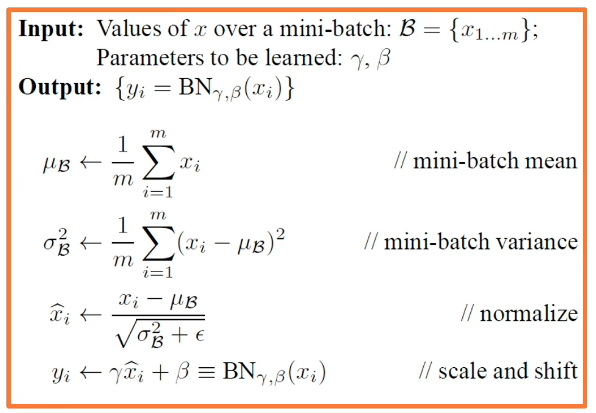
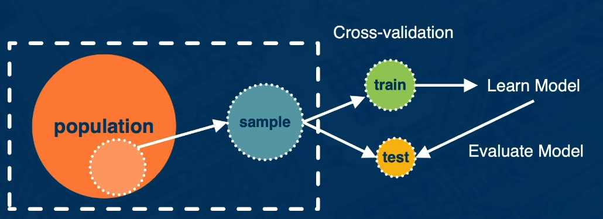
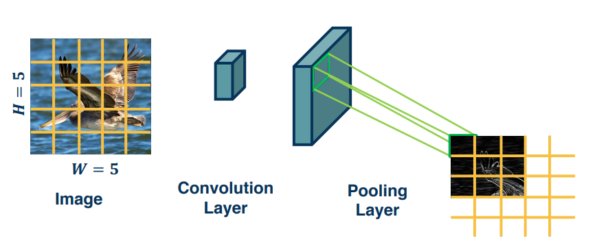
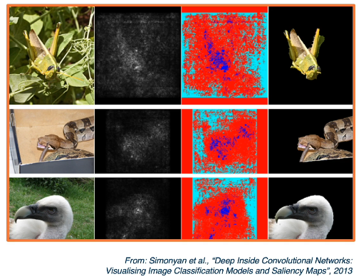
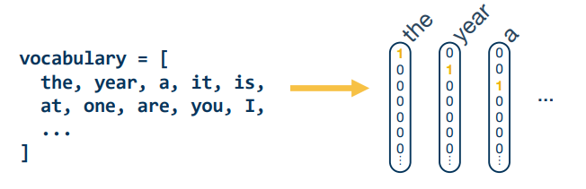
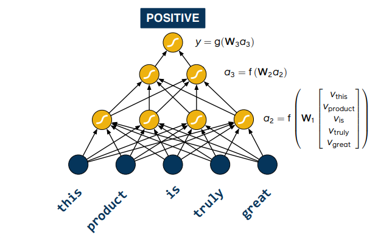
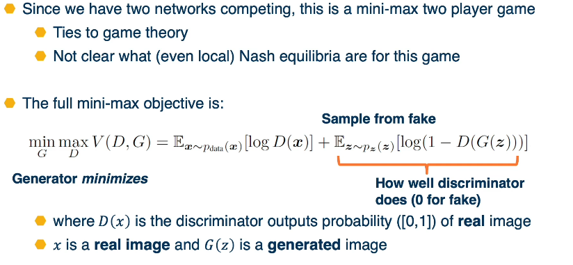

CS7643 Deep Learning¶
Georgia Tech - Spring 2022
Instructor : Zsolt Kira
Textbook : https://www.deeplearningbook.org/
Grading¶
- 55% Assignments (4)
- 48-hour grace period
- 20% Quizzes (6)
- no grace period, 1 sitting unlimited time, use Honorlock
- closed book, require room scan, mix of computation and conecptual
- 20% Final Project (1)
- 48-hour grace period
- 5% Participation
- 1% Extra credit
Topics/Modules¶
- Neural Networks
- Linear Classifiers and Gradient Descent
- Neural Networks
- Optimizing Neural Networks
- Data Wrangling
- Convolutional Neural Networks
- Convolution and Pooling Layers
- CNN Architectures
- Visualization
- Scalable Training
- Advanced Computer Vision
- Bias and Fairness
- Structured Neural Representations
- Introduction to Structured Representations
- Language Models
- Embeddings
- Neural Attention Models
- Neural Machine Translation
- Translation at Facebook (Advanced Topics)
- Advanced Topics
- Deep Reinforcement Learning
- Unsupervised and Semi-Supervised Learning
- Generative Models
- Facebook Resources?
Handy Links¶
https://github.com/pytorch/workshops/tree/master/CS7643
https://sebastianraschka.com/blog/2021/dl-course.html
http://cs231n.stanford.edu/
https://d2l.ai/index.html
AI Summer : https://theaisummer.com/start-here/
NLP
- Seq2seq and transformers : https://github.com/bentrevett/pytorch-seq2seq
1. Neural Networks¶
This module consists of an overview of the simple machine learning algorithms, with a focus on linear classifiers. Then we will build up to neural networks.
As a refresher, recall the three main types/areas of Machine Learning.
- Supervised : Learning y from f(X,y) ie labelled data
- Unsupervised : Learning y from f(X) ie unlabelled data
- Reinforcement : Learning an optimal policy f for a series of events or states.
As the name suggests a Linear Classifier is one based on the idea of linear regression. These appear in the form $f(x,W)=Wx+b$, which is simply the equation of a line in compact Matrix notion.
To develop a general algorithm for such models we will look at how we can decompose a model into a series of blocks. We will also look at how we can build them up in a series of blocks called a directed acyclic graph (DAG).
We then look at a very generic optimization algorithm called backpropogation, that allows us to optimize the parameters.
- Forward Pass : Compute loss using Mini Batch
- Backwards Pass : Compute gradients wrt parameters
- Use the gradient to update all the parameters
- $w_i = w_i - \alpha \frac{\partial L}{\partial w_i}$
- Backpropogation is the application of gradient descent to a computation graph via the chain rule
Other considerations?
- Architecture
- Data engineering
- Training and optimization
Reference Material:
1.L1 Linear Classifiers and Gradient Descent¶
"A computer program is said to learn from experience E with respect to come class of tarks T and performance measure P, if it's performance at tasks in T, as measured by P, improves with experience E."
- Tom Mitchell (1997)
This differs from basic programming in that ML creates an algo that can build a model that in turn can receive data and make decisions. Basic programming would require that the program receive the data itself in order to make a decision. The distinction here is that ML programs a learner to perform a task vs performing the task itself. Linear regression is the classic example. We take some data and we produce an equation, that in turn can be used to make predictions. Programming a learner that can create that equation is the machine learning algo's job.
Machine learning thrives the harder it is to create an algo. Natural Language Processing (NLP) is a perfect example of such a situation.
Supervised Learning and Parametric Models¶
Supervised learning is the creation of model from training inputs {X,Y} where each element pair is denoted $(x_i,y_i)$ and if generally represented as vectors. The Y's are generally called our labels (or Ground Truth). In Unsupervised learning we are not given the labels Ys but only the data X itself. In Reinforcement learning we have an agent, an environment, actions and a reward. It's the reward here that best approximates the notion of a label. There's no supervision in reinforcement learning, it might be better to say observed experiences.
Supervised learning can be NonParametric Model which have no explicit mathematical formula, examples of this include decision trees and Knn classifiers. They can also be parametric, which have an explicit formula, examples include logistic regression and neural networks. Linear Classifiers fall into the parametric umbrella. These can face challenges though as the number of dimensions increases.
Parametric Learning¶
Let's now dive deeper into parametric learning algorithms.
Components
- Input (Representation)
- Functional Form of the model
- Including parameters
- Performance measure to improve
- Loss, or objective, function
- Algorithm for finding the best parameters
- Optimization Algorithm
Functional form : $f(x,w)=y$
- f is the classifier
- x is the input (vector)
- w is the weights
- y is the output (scalar or vector representing a probablity distribution or score)
One of the simplest example of this is the equation of a line $y=mx+b$. If the output is continuous then we can apply a secondary function in order to turn it into a Binary classifier.
$y =\begin{cases}
1, & \text{if } f(x,w)>0 \\
0, & \text{ Otherwise}
\end{cases}$
For a multi-class classifier we take the class with the highest (max) score : $f(x,W) = Wx+b$ where W is a matrix and each row represents a class.
Linear Classifiers are models that try to find a line, or hyperplane, that can seperate the data elements into distinct groups. While simple they're highly versatile and have many applications. However, in order to compute them we will often require a higher dimension and this presents some difficulties.
For more complex functions like XOR and Circles it becomes more difficult, if not impossible to discover a linear seperation. For this we will need none linear activators.
Performance Measurement¶
Topic: Performance Measure to improve the loss or score function. For binary we could take 1 when the score is greater than one and for a multi-class we could take the maximum. However scores suffer from some issues. Difficult to interpret, no bounds and hard to compare to other classifiers. To remedy some of these issues we will use the softmax function to turn scores into probabilities.
For a score function of the form $s=f(x,W)$ we would take $P(Y=k|X=x)=\frac{e^{s_k}}{\sum_j e^{s_j}}$ for each class k.
In order to optimize this we need a function to optimize. This is often called our loss or objective function. It should have the following properties:
- Penalize model for being wrong.
- Allows modification (so we can reduce the penalty)
In ML we will often use empirical risk minimization: Reduce the loss over the training dataset, then average the loss over the training data.
Given $\{(x_i,y_i)\}_{i=1}^N$ Define the loss L as $L=\frac{1}{N}\sum L_i(f(x_i,W),y_i)$ where $x_i$ is an image and $y_i$ is a label (usually an integer).
Consider the example of Support Vector Machines (SVMs). For an SVM we have a loss function of the form:
$L_i = \sum_{j \ne y_i} max(0,s_j - s_{y_i} + 1)$
Note that the loss is 0 if the score for $y_i$, which is the ground truth label, is greater than or equal to the scores of all the other classes, which are incorect, plus one. This will maintain a margin between the score for the ground truth label and all the other possible categories. We want to have a score that is higher by some margin for the ground truth label. When this is not the case we penalize this by how different it is from the margin. To do thie we take the max over all the classes that are not the ground truth, and penalize the model whenever the score for the ground truth itself is not bigger by a particular margin. This is called a hinge loss.
Simple example, suppose we are trying to classify a picture into 1 of three categories: cat, frog, or car.
Picture 1 : Ground truth : CAT
Model Scores
CAT CAR FROG
3.2 5.1 -1.7
Using our loss function: Li = sum max(0,sj-syi+1) from above
Li = max(0,5.1-3.2+1) + max(0,-1.7-3.2+1)
= max(0,2.9)+max(0,-3.9)
= 2.9 + 0
= 2.9While the above loss function can work the best loss function to use for a softmax function is the cross-entropy. It can be derived by looking at the distance between the two probability distributions (output of the model and the ground truth), this is called KL Divergence. It can also be derived from a maximum likelihood estimation perspective.
$L_i = -log P(Y=y_i | X=x_i)$ Maximum Likelihood Estimation: choose the probabilities to maximize the likelihood of the observerd data.
Let's re-examine our example above using the cross entropy
Recall the ground truth is CAT
CAT CAR FROG
3.2 5.1 -1.70 <- These are our un-normalized log probabilities (logits)
24.5 164.0 0.18 <- exponentiated np.exp(sk)
0.13 0.87 0.00 <- divided by the sum of the exponentiated (row 2)
at this point the model thinks it's a carIn a regression type of problem we can directly optimize to match the ground truth value.
Example House price prediction
- $L_i=|y-Wx_i|$ is the L1 loss
- $L_i=|y-Wx_i|^2$ is the L2 loss
For probabilities
- $\large L_i=|y-Wx_i|=\frac{e^{s_k}}{\sum e^{s_j}}$ is Logistic
In some cases we add a regularization term to the loss function to encourage smaller weights, and penalize higher weights which would over emphasis a feature.
- $L_i=|y-Wx_i|+|W|$ is an l1 regularized loss function
The illustration above shows the characteristics of different loss functions.
import numpy as np
cat = np.exp(3.2)/(24.5+164.0+0.18)
car = np.exp(5.1)/(24.5+164.0+0.18)
frog = np.exp(-1.7)/(24.5+164.0+0.18)
cat_neglog = -np.log( cat)
car_neglog = -np.log( car)
frog_neglog = -np.log(frog)
print(cat,cat_neglog)
print(car,car_neglog)
print(frog,frog_neglog)
Linear Algebra Review¶
In general we will be working with Matrices W, and X. Where x is the vector.
Define:
- Let c be the number of classes, or targets, and d be the dimensionality, or number of features.
- W is of size (c,d+1) we add +1 for the bias term
- x is a vector of size (rows=d+1,cols=1)
For our discussion
Assume s is a scalar $s \in \mathbb{R^1}$, v is a vector $v \in \mathbb{R^m}$, and M is a matrix $M \in \mathbb{R^{k \times l}}$,
then $\frac{\partial v}{\partial s}$ is of size $\mathbb{R^{m \times 1}}$
Similarly $\frac{\partial s}{\partial v}$ is of size $\mathbb{R^{1 \times m}}$
What is the size of $\frac{\partial v^1}{\partial v^2}$? (2 distinct vectors of the same size).
It turns out to be $\mathbb{R^{m \times m}}$, because the result of this is a matrix. In fact this is a jacobian matrix which is the matrix of partial derivatives.
What is the size of $\frac{\partial s}{\partial M}$? (scalar and a matrix)
The result is a matrix composed of the partial of the scalar w.r.t. each element in M
What about $\frac{\partial L}{\partial W}$? (Recall that L=loss is a scalar)
then by the previous question this should result in a matrix of partials (Jacobian).
Often times our algorithms (like gradient descent) are implemented in batches, which can also be thought of as matrices and tensors.
- for a batch B
- and a vector of size m then the batch is of size (B x m)
- and a greyscale image of size (WxH) then the batch of size (B x W x H)
- and a RGB image of size CxWxH then the batch of size (BxCxWxH)
I'm sure your beginning to see a problem here, these computations can get complicated pretty quickly. Instead we can flatten our inputs to get a vector of derivatives.
DL v ML differences¶
Deep Learning employs a few key concepts generally expects raw data and learns a feature representation. (Think images and audio signals). Neural Networks are the most popular form but there are a few others like probabilistic learning.
- Hierarchichal Composition
- Cascade of linear transformations
- Multiple layers of representations
- End to End Learning
- Learning representations
- Learning feature extraction ( in ML this is often done by hand )
- Distributed Representation
- No single neuron learns everything
- Groups of Neurons working together
Gradient Descent¶
How do we find the best weights for our Model? Gradient Descent! It's the optimization algorithm for finding the best parameters. Given a model and a loss function - Finding the best set of weights is a search problem. It's a search for weights the minimize, reduce, the loss function.
There are several classes of methods:
- Random Search
- Genetic Algorithms, or population based searches
- Gradient based optimization,
- although these dominate there are other approaches
- When the weight space is small can perform poorly
As weights change, the loss changes as well. This is often somewhat smooth locally, so small changes in weights produce small changes in the loss. We can therefore think about iterative algorithms that take current values of weights and modify them a bit.
The strategy GD follows is pretty straight forward. We follow the slope to it's lowest point. To do this we use the gradient, aka derivative.
$f'(a)= \lim\limits_{h \to 0} \frac{f(a+h)-f(a)}{h}$
- Steepest descent direction is the negative gradient
- Measures how the function changes as the argument changes by a small step size, as the step size goes to 0
- In ML: we want to know how the loss function changes as weights are varied. This is done by considering each parameter seperately by taking partial derivative of loss function with respect to that parameter.
As an algo:
- Choose the model $f(x,W)=Wx$
- Choose loss func $L_i = |y-Wx_i|^2$
- Calc partials for each param $\frac{\partial L}{\partial w_j} $
- Update params $w_j = w_j - \frac{\partial L}{\partial w_j} $
- or add learning rate $w_j = w_j - \alpha \frac{\partial L}{\partial w_j} $ to prevent large steps
It should be noted that in practice we only compute the gradient across a small subset of data (aka Batch)
- Full batch gradient descent $L = \frac{1}{N} \sum L(f(x_i,W),y_i)$
- Mini batch gradient descent $L = \frac{1}{M} \sum L(f(x_i,W),y_i)$ where M is a subset of Data M < N
- We iterate over mini-batches.
- Get mini batch, compute loss, compute derivatives, take a step
- Selecting the miniBatch can be done randomly, or sequentially
- the final result should be averaged across all the minibatches used
- the size of the mini batch impacts the learning rate, different batch size will require retuning
Gradient descent is guaranteed to converge under some conditions.
- Learning rate has to be appropriately reduced throughout the training
- it may converge to a local minima, when small changes to the weights would not decrease the loss
- Sometime the local minima is still pretty good and may be good enough for a problem
Compute the partials can be done in multiple ways
- Manual, Mathematical, analytical, approach of computing the derivative
- Symbolic, similar to Manual, same result just done differently
- Numerical, approximation methods
- Automatic, used by pytorch
Update rule Derivation
Let
- $f(w,x_i)=w^T x_i$ be our function
- $(y_i - w^T x_i)^2$ be our loss and t/f we want to minimize $L=\sum (y_i - w^T x_i)^2$
- $w_j \leftarrow w_j - n \frac{\partial L}{\partial w_j} $
Then $ \begin{align} \frac{\partial L}{\partial w_j} & =\sum_{i=1}^{n} \frac{\partial}{\partial w_j} (y_i - w^T x_i)^2 &\\ & =\sum_{i=1}^{n} (y_i - w^T x_i) \frac{\partial}{\partial w_j} (y_i - w^T x_i) &\\ & =-2 \sum_{i=1}^{n} \delta_i \frac{\partial}{\partial w_j} (w^T x_i) (\text{ where } \delta_i = (y_i - w^T x_i)) &\\ & =-2 \sum_{i=1}^{n} \delta_i \frac{\partial}{\partial w_j} \sum_{k=1}^{n} (w_k x_ik) &\\ & =-2 \sum_{i=1}^{n} \delta_i x_{ij} \end{align} $
Finally we have a workable form of our update. $$w_j \leftarrow w_j + 2n \sum_{k=1}^N \delta_k x_{kj}$$ Which is our our gradient descent update rule for N examples indexed by i
As an exercise feel free to try this out with a non-linear function like sigmoid. Don't forget to use the chain rule.
To perform this take
- $\sigma(x)=\frac{1}{1+e^{-x}}$ as the sigmoid activation function
- HINT: The derivative of $\sigma(x)$ is $\sigma(x)(1-\sigma(x))$
- $f(x)=\sigma(\sum_k w_k x_k)$
- $L=\sum_i (y_i - \sigma(\sum_k w_k x_k) )^2$
You should get the following result: $w_j \leftarrow w_j + 2n \sum_{k=1}^N \delta_k \sigma_i (1-\sigma_i)x_{ij}$
where
- $\delta_i = y_i - \sigma_i$
- $\sigma_i = \sigma(\sum_{k=1}^N w_k x_{ik}) $
So far we have kept things simple, but what happens when we begin using a composition of simple functions.
Finding the derivative and the update rule can be tricky. By decomposing we can develop a generic algorithm. We will do this at a later point, using acyclic graphs.
Distributed Representation¶
Recall that
- no single neuron encodes everything
- Groups of neurons need to work together
Local representation: a concept is represented by a single node.
Distributed representation: a concept is represented by the pattern of activation across many nodes.
A large advantage of distributed representations is that they are much better when combined, whereas local reps make no sense when combined. Basically local reps are limited in complexity, But distributed are much more broad.
1.L2 Neural Networks¶
Reference Links:
- https://www.deeplearningbook.org/contents/mlp.html
- https://arxiv.org/abs/1502.05767
- https://explained.ai/matrix-calculus/index.html
NN view as Linear Classifiers¶
A linear classifier can be broken down into
- Input
- A function of the inputs
- A loss function
A simple neural network has similar structure as our linear classifier:
- A neuron takes input (firings) from other neurons (-> input to linear classifier)
- The inputs are summed in a weighted manner (-> weighted sum/dot product)
- Learning is through a modification of the weights (application of the update rule)
- If it receives enough input, it fires (threshold or if weighted sum plus bias is high enough)
Of course this is an oversimplified model of the neurons in our brain.
Of course we can also have many neurons connected to the same input. This is what happens in a multi-class classifier. Each output node outputs the score for a class. These are often call "fully connected layers", or linear projection layers.
$f(x,W) = \sigma(Wx+b) \begin{bmatrix} w_{11} & w_{12} & w_{13} & \dots & w_{1n} \\ w_{21} & w_{22} & w_{23} & \dots & w_{2n} \\ \cdots \\ w_{m1} & w_{m2} & w_{m3} & \dots & w_{mn} \end{bmatrix}$
Terminology:
- Neuron/node: is the input/output
- Stacked: In a multi layer network the input to a neuron is the output of the previous node
- Fully connected layer : Linear classifier
- Edges: connections between neurons
- Activation: Output of a neuron
- Graph: Expanded view of a Neural Network
- Hidden layer: refers to the middle layer(s) which are hidden from our view
- as opposed to the inputs, and outputs which are known values
- there must be at least 1 hidden layer to be a network, but it can certainly be more than 1
- A two layer network can represent any continuous function
- it is defined by a second weight matrix
- $f(x,W_1,W_2) = \sigma(W_2 \sigma(W_1 x))$
- Two layers = 1 hidden and 1 output. Input layer is not included.
- Two weight matrices
- $W_1$ are the weights applied to the input
- $W_2$ are the weights applied to the output of the hidden layer (to get the output layer)
- A three layer function can represent any function (in theory)
- $W_1$ applied to inputs
- $W_2$ applied to hidden layer 1
- $W_3$ applied to hidden layer 2 (to get the output layer)
Computation Graphs¶
Functions can be made arbitrarily complex, and subject only to computational limits:
eg $ f(x,W)=\sigma(w_5 \sigma(W_4 \sigma(W_3 \sigma(W_2 \sigma(W_1 x))))) $
We can use any type of differentiable function (layer) we want! All we need to do is add the loss function at the end. The world is compositional, and we want our model to reflect this. Empirical and theoretical evidence suggests that it makes learning complex functions easier. Prior state of the art feature engineering often had a compositional nature as well.
eg: Pixels --> edges --> object parts --> objects
This begs the question how do we compute the partials for each component?
To this end we will develop a general algorithm for a function as a computation graph. Graphs can be any directed acyclic graph. Our training algo will then process this graph one module at a time.
Consider:
pretty cool eh?
Backpropagation¶
Backprop algo consists of two main parts:
- Forward pass - which computes the outputs for a given set of weights
- Backward pass - calculates the gradients for each module, Can be decomposed into several steps
- this is a recursive algorithm
- start at the loss function where we know how to compute the gradients
- Progress backwards throught the modules (computing the gradients at each stage)
- Ends at the input layer where there are no gradients or parameters
Forward Pass
We simply compute the output of each component and save. These will be needed to compute the gradients later on.
Backwards Pass
Is much more complex and involved, recursive algorithm. Here we seek to calculate the gradients of the loss with respect to the module's parameters.
There are three main gradients needed for each module:
- $\frac{\partial L}{\partial h^{l-1}}$ is the gradient of the input layer (previous)
- $\frac{\partial L}{\partial h^{l}}$ is the gradients of the output layer (current)
- $\frac{\partial L}{\partial W}$ is given to us by the forward pass
We assume that
- We have the gradient of the loss with respect to the module outputs. This is given to us by the upstream module.
- We will also pass the gradient of the loss with respect to the module's inputs.
So our problem can be formalized as follows
- we can compute the local gradients $\{ \frac{\partial h^l}{\partial h^{l-1}} ; \frac{\partial h^l}{\partial W} \} $
- which is a) the change in the output wrt the inputs
- and b) the change in the output wrt the weights
- we are given $\frac{\partial L}{\partial h^{l}}$ (Given by assumption 1)
- which is the change in loss wrt the output
- we are left to compute $\{ \frac{\partial L}{\partial h^{l-1}} ; \frac{\partial L}{\partial W} \} $
Let's work through an example:
Step 1: Computing the local gradients $\{ \frac{\partial h^l}{\partial h^{l-1}} ; \frac{\partial h^l}{\partial W} \} $
This is simply the derivative of the function wrt it's parameters and inputs.
for example in a single network $h^l = W h^{l-1}$
t/f $\frac{\partial h^l}{\partial h^{l-1}} = W$
and $\frac{\partial h^l}{\partial W} =h^{l-1,T}$
Step 3: we compute $\{ \frac{\partial L}{\partial h^{l-1}} ; \frac{\partial L}{\partial W} \} $
So we simply apply our old friend the chain rule: $\frac{\partial z}{\partial x} = \frac{\partial z}{\partial y} \frac{\partial y}{\partial x}$
Summary
- Forward Pass: Compute the Loss on a Minibatch
- Backward Pass: Compute the gradients wrt each parameter
- starting at the loss function, where we know how to compute the gradient of the loss wrt the last module
- this is just the partials of the module wrt the inputs
- Now we continue to work backwards propogating the loss in reverse (Upstream)
- this is using done using the chain rule
- Finally we just update the weights
Backprop via AutoDiff¶
Backprop only tells you what you need to do, it doesn't specify how to do it. The backprop idea though can be applied to any directed acyclic graph, aka DAG. Graphs represent an ordering constraining which paths must be calculated first. Given an ordering, we can then iterate from the last module backwards, using the chain rule. As we do so we will store, for each node, it's gradient outputs for efficient computation. This is called reverse mode automatic differentiation.
The idea here is that we need to create a framework such that we can just define the computation graph. We can put together a set of functions that use simple primitives like addition and multiplication etc etc. Doing so will allow us to avoid computing the backwards gradients, nor will we write code that computes the gradients of the functions. Because these are all simple primitives.
Let's start by defining our terminology.
- Computation = Graph
- Input = Data + Parameters
- Output = Loss
- Scheduling = Topological ordering
- Auto-Diff
- A family of algorithms for implementing chain rule on computation graphs
Example :
- We want to find the partial derivative of the output f, with respect to all the intermediate variables.
- For convenience we begin by assigning variables to the output of each operation
- for convenience of notation define $\bar{a_3} = \frac{\partial f}{\partial a_3}$
- ie $\bar{a_3}$ is the partial gradient of the output f wrt $a_3$
- we begin at the end and work backwards
Since this is not terribly intuitive let's review/refresh some points
$\frac{\partial (a_1+a_2)}{\partial a_1} = 1$ because we're only differentiating wrt a1
- recall $\frac{d}{dx} (x + y) = (\frac{d}{dx} x) + 0) = \frac{d}{dx} x = 1$
$\frac{d}{dx} sin(x) = cos(x)$
- $\frac{d}{dx} (x \cdot y) = y \cdot \frac{d}{dx} x = y \cdot 1 = y $

It is interesting to note what certain operations do, and what they tell us about gradient flow
- Addition operation distributes gradients along all the paths
- Multiplication flips the gradient
- $\bar{x_2} = \bar{a_2} x_1$
- $\bar{x_1} = \bar{a_2} x_2$
Here are a few more observations not illustrated by our example
- max operation
- gradient flows along the path selected to be the max
- this information must be recorded in the forward pass
If the gradients do not flow backwards properly, learning will slow down and even come to a stop!
Key Idea is to store the computation graph in meemory and corresponding gradient functions.
Nodes broken down to basic primitive computations (addition, multiplication, log, etc.) for which corresponding derivative is known.
As a small aside there is another method that is used on occasion: forward mode automatic differentiation.
- Start from inputs and propogate gradients forward.
- Complexity is proportional to input size.
Here's a small example demonstrating graph building using pytorch: (This uses an older version of pytorch, it's easier today)
The last line computes the backwards gradients. All in one line of code.
Computation graphs are not limited to mathematical functions.
They can have control flows (if's, loops, etc etc) and can proprogate through algorithms
They can be done dynamically so that gradients are computed, nodes are added, and repeat
All this falls under the umbrella of differentiable programming.
DAG Logistic Regression (Sigmoid)¶
In this section we look an example that more closely resemble a NN use case.
Recall from our earlier sections the sigmoid function given by the Logistic regression function $$\large -log(\frac{1}{1+e^{-w^T x}})$$
Define
- Input $x \in \mathbb{R}^D$
- Binary Label $y \in \{ -1,+1 \}$
- Parameters $w \in \mathbb{R}^D$
- Output prediction $p(y=1|x)=\frac{1}{1+e^{-w^Tx}}$
- Loss $L=\frac{1}{2}||w||^2 - \lambda log(p(y|x))$
Let's decompose as follows ( note that this also serves as our computation graph )
Don't get confused in the above image!! u,p,L are the outputs
Let's now work through the back prop using automatic differentiation:
- $\bar{L}=1$
$\bar{p}=-\frac{1}{p}$ the partial of -log(p) wrt p is just the derivative of log (nb Log here is Ln-Natural Log)
- where $p=\sigma(w^T x)$ and $\sigma(x)=\frac{1}{1+e^-x}$
$\bar{u}=\frac{\partial L}{\partial p} \frac{\partial p}{\partial u}$
- $\bar{p} \sigma(w^T x) (1-\sigma(w^T x))$
- $\bar{w} = \frac{\partial L}{\partial u} \frac{\partial u}{\partial w}$
- $\bar{u}x^T$
Let's group it all together $\begin{align} \bar{w} & = \frac{\partial L}{\partial p} \frac{\partial p}{\partial u} \frac{\partial u}{\partial w} \\ & = - \frac{1}{\sigma(w^T x)} \sigma(w^T x) (1 - \sigma(w^T x)) x^T \\ & = - (1 - \sigma(w^T x)) x^T \end{align}$
This effectively shows the gradient flow along the path from L to w.
Simple Layer Jacobians and Vectorization¶
Let's reconsider our computation graph using matrix notation
for a simple layer network $h^l = WH^{l-1}$
We have
- $h^l$ as $|h^l| \times 1$
- $W$ as $|h^l| \times |h^{l-1}|$
- $h^{l-1}$ as $|h^{l-1}| \times 1$
Now let's dive into the partials (Jacobians)
Notice the sparse structure of the last matrix, the partial of the loss wrt the weights.
Up until now we've focused mostly on our sigmoid function, but we can use any differentiable function! This includes piesewise differentiable functions as well. A popular choice in many applications is the relu, Rectified linear Unit. $h^l=max(0,h^{l-1})$. It provides non-linearity but better gradient flow than sigmoid, and is performed element wise.
The full Jacobian of the ReLU Layer is LARGE, (Output dimensions x Input dims).
- but it is sparse
- Only diagonal values are non zero because it is element wise
- Output values are only affected by the corresponding input values.
Recall that MAX() function funnels gradients through the selected path.
- thus the gradient will be 0 if input is <= 0
- Forward: $h^l = max(0,h^{l-1})$
- Backward:
- $\large \frac{\partial L}{\partial h^{l-1}} = \frac{\partial L}{\partial h^l} \frac{\partial h^l}{\partial h^{l-1}}$
- where $\large
\begin{equation} \frac{\partial L}{\partial h^{l-1}} = \begin{cases} 1 &\text{ if} h^{l-1} > 0 \\ 0 &\text{otherwise} \end{cases} \end{equation}$
1.L3 Neural Network Optimization¶
- optimization
- architecture
- data considerations
- training to optimize
- ML considerations (regularization & overfitting)
Overview¶
A network with two or more hidden layers is often considered to be a deep model. Depth is important because it is needed to structure a model to represent an inherently compositional world. We have object shapes, parts and scenes for ex in Computer vision. Theoretical evidence also suggests it leads to parameter efficiency. Gentle dimensionality reduction.
Commonly encountered issues
- How do you architect the mode to reflect the structure
- Data considerations such as normalizations and scaling.
- Architecture
- what modules or layers should we use?
- how are they shared, and how should the be connected
- how will the gradients flow
- Can they domain knowledge add architectural biases
Fully Connected NN: Take an input, convert it to a vector, then feed it into a series of linear and nonlinear transformations. There are be hidden layers in the middle that are expected to extract more and more abstract features from the high dimensional raw input data. For deeper networks we will want to reduce the features/size. In the end we have a layer that represents our class scores. each node will have an outptu that represents a score and these are combined to produce a probability. This is not very good for say images as the number of pixels is generally very high. and it ignores the spatial sctructure of the images. So we turn to CNNs
CNN-Convolutional Neural Networks: Rather than tie each node to each pixel these will reflect a feature extractuor for small windows in the image and each local window will have these features extracted from it such as shapes corners, eyes and wheels. In the end we will features that represent where each object or entire objects are located in the image. and finally we will pass these features into a fully connected layer. ALbeit this time it will be a much smaller than the previous approach.
RNN-Recurrent Neural Networks: Are yet another approach better suited for problems that have a sequential structure like NLP and sentences.
Similar to traditional ML we will face the questions
- How do we pre-process
- Should we normaile? or standardize.
- Can we augment our data? would adding noise reflect the real world?
We need a good optimization algo to find our weights. Gradient descent is popular but there are others that still use gradients. Different optimizaers may make more sense.
How do we init our weights? A bad initilization can lead to difficult learning and require a diff optimizer.
Regularization? How can we prevent overfitting?
Loss function: which one do we use? do we design our own?
The practice of ML is complex. For any application wyou must look at the trade-offs between the considerations above. ANother trade-off is model capacity and the amount of data. Low capacity models can preform poorly when certain loss functions like sigmoid are used.
Unfortunately, all this is done via experience ... there is no good text book on all these.
Architecture¶
What modules to use, and how to connect them. This is guided by the type of data being used and it's characteristics. Lots of data types (modalities) already have good architectures. The flow of gradients is the top most consideration when analyzing layers. It is quite possible to have modules that cause a battleneck.
Combinations of linear and non linear layers. A combo of linear layers only has the same representational power as one linear layer. Non linear layers are crucial. Compositions of nonlinear layers enables complex transformations. Gradient flow depends heavily on the shape of the nonlinear modules.
Points to look at
- the min/max
- correspondence between input and output statistics
- gradients
- at initialization: are they changing? if so how
- at the extremes of the function
- computational complexity
Sigmoid:
- Min=0; max=1
- output is always positive
- Saturates at both ends
- gradients
- vanish at each end ( converging to 0 - it's almost flat )
- always positive
- Computationally complexity high due to exponential term
tanh:
- min=-1; max=1; and we note that is centred
- Saturates at both ends (-1,1)
- Gradients: vanish at both ends ; always positive
- medium compexity as tanh is not as simple as say multiplication
ReLU:
- Min=0, Max=$\infty$; always positive
- Not saturated on the positive side
- gradients: 0 when X <= 0 (aka dead ReLU); constant otherwise (doesn't vanish which is good)
- Cheap: doesn't come much easier than max function
There are a lot of variations in nonLinearity. For example
- $h^l = max(\alpha h^{l-1}, h^{l-1})$
- prevents dead ReLU;
- has a learnable parameter (provides flexibility)
- no saturation on either side
- still cheap to compute
You may have noticed these are not differentiable. Turns out this is ok because there are few problematic points. only 0 is not differentiable. ReLU is often the best starting point and is very popular. Converges very quickly. Sometimes a leaky ReLU is a good thing and can make a difference. Sigmoid is generally avoided, except in some cases where we need the values to fit the 0-1 range.
Initialization¶
Intelligent Initialization of Neural Network Weights. Initialization determines how the statistics of our outputs will behave. It will also affect both the forward, and backwards, gradient flows. If you initialize the weights to values that are in some way degenerate (close to a bad local minima) then this will lead to poor gradient flow. If the weights are initialized to be activated into statistically large and these large activations are fed into our nonlinearities (such as the tanh) then the algo will begin in the saturation range of the function. In a similar fashion if you can start in an area s.t. the inputs are small then you be in the linear regime or close to it in the nonlinear space, and you will have a strong gradient to learn from. Of course if you can start near a good local minima then that will be beneficial as well.
Let's consider an example. What happens when we use constant weights? ie $w_i = c \; \forall i$. This would lead to a degenerate solution, as all weights will be updated with the same rule. they will move in the same direction and with the same step size. There are cases where this may be good, so it depends.
A common approach is to use small normally distributed random number. Eg $N(\mu = 0,\sigma = 0.01)$
- smaller weights are preferred since no feature or input has a priori importance
- keeps the model within the linear region of most activation functions
This is very safe and reasonable approach that is still widely used:
Deeper networks (with many layers) are more sensitive to initialization. In deeper network, activations (output of the nodes) get smaller. Standard deviation reduces signficantly. This leads to smaller values multiplied by upstream gradients. Larger values will lead to saturation. We want a balance between the layers but this proves to be more difficult as complexity increases.
Ideally, we'd like to maintain the variance at the output to be similar to that of the input. This condition leads to a simple initialization rule, we sample from the uniform distribution:
$Uniform(-\frac{\sqrt{6}}{\sqrt{n_j+n_{j+1}}},+\frac{\sqrt{6}}{\sqrt{n_j+n_{j+1}}})$
Where
- $n_j$ is fan-in (number of input nodes)
- $n_{j+1}$ is fan-out (number of output nodes)
Notice how the distribution is relatively equal across all the layers.
In practice there is an even simpler form, $N(0,1) \times \sqrt{\frac{1}{n_j}}$, This analysis holds for tanh and similar activations.
For ReLU activations a similar analysis yields $N(0,1) \times \sqrt{\frac{1}{n_j/2}}$
Summary
- Initialization Matters
- It determines the activation (output) statistics and therefore gradient statistics
- If gradients are small learning is difficult if not impossible. Vanishing gradients become blockers to learning
- It's important to reason about output gradient statistics and analyze them for new layers and architectures.
Data Processing¶
In ML and DL data drives the learning of features and classifiers. Always seek to understand your data is important before transforming. Relationships between output stats, layers such as non-linearities, and gradients is important.
Normalization can improve gradient flow and learning Typical methods include
- Subtract the mean, divide by the standard deviation (sometimes a small epsilon is added for numerical stability)
- can be done per dimension (indepepndently)
- Whitenining methods such as PCA can be used but are not too common
Somtimes we will use a layer that can normalize the data across the neural network.
For example
- Given a minibatch od size BxD where B is the batch size
- Compute the mean and variance for each dimension d in the batch
- normalize using this mean/variance
This will allow the network to determine it's scaling, or normalizing, factors, giving it greater flexibility. This is called Batch Normalization. During inference, stored mean and variances calculated on training sets are used. Sufficient batch sizes must be used to get stable per-batch estimates during training.
This is a popular method called Batch Normalization. Always be sure your batches are of sufficient size to compute these parameters.

Batch Normalization presents some interesting challenges:
Sufficient batch sizes must be used to get stable per-batch estimates during training
- this becomes especially true when using multi-GPU or multi-Machine training
- pytorch has a built in function to handle these situations, it estimates the batch statistics in these settings
- torch.nn.SyncBatchNorm
Normalization is especially important before non-linearities. We want the input statistics to be well behaved such that they do not saturate the non-linearities. We do not want too low, or too high, or even unnormalized and unbalanced values, because they cause desaturation issues.
Optimizers¶
So far we have only talked about Steepest gradient descent, this section introduces other approaches
Deep learning often involves complex, compositional and nonlinear function. Consequently the loss landscape is often complex as a result. There is little direct theory and a lot of intuition needed to optimize these loss surfaces.
It used to be thought that existence of local minima is the sticking point in optimization. But it turns out this is not always true. In many cases though we can find local minima, but there may be other issues that arise and hinder our ability.
Other issues include
- Noisy gradient estimates (due to taking MiniBatches)
- Saddle points
- Ill conditioned loss surface, where the curvature is high in one direction bu not the other
We generally use a subset of the data in each iteration to calulate the loss and the gradient. This is an unbiased estimator, but can have high variance.
Several loss surface geometries can present difficulties
- Local minima
- plateaus
- saddle points, a point that is a min in one axis but a max in another
Steepest gradient descent is always searching for the steepest direction, and can become stuck at saddle points. One way to overcome this is to think of momentum. Imagine a ball rolling down a loss surface, and use momentum to pass flat surfaces.
Recall our update rule from earlier $w_i = w_{i-1} - \alpha \frac{\partial L}{\partial w_i}$
Consider: $v_i = \beta v_{i-1} + \frac{\partial L}{\partial w_{i-1}}$ Update velocity(starts as 0, $\beta=0.99$)
Our new update rule : $w_i = w_{i-1} - \alpha v_i$ (In some text books alpha is pused inside the velocity term)
(Note that when $\beta=0$ this is just Stochastic Gradient Descent)
This is acutally used quite often in practice, and can help move you off areas with low gradients. Observe that the velocity term is an exponential moving average of the gradient.
$
\begin{split}
v_i & = \beta v_{i-1} + \frac{\partial L }{\partial w_{i-1}} &\\
& = \beta (\beta v_{i-2}+\frac{\partial L }{\partial w_{i-2}}) + \frac{\partial L }{\partial w_{i-1}} &\\
& = \beta^2 v_{i-2} + \beta \frac{\partial L }{\partial w_{i-2}} + \frac{\partial L }{\partial w_{i-1}}
\end{split}
$
This is actually part of a general class of accelerated gradient methods with theoretical analysis under some assumptions.
Nesterov Momentum: Rather than combining velocity with the current gradient, go along velocity first and then calculate the gradient at a new point.
We know that velocity is probably a reasonable direction, so
$\begin{split} \hat{w}_{i-1} & = w_{i-1} + \beta v_{i-1} \\ v_i & = \beta v_{i-1} + \frac{\partial L}{\partial \hat{w}_{i-1}} \\ w_i & = w_{i-1} \alpha v_i \\ \end{split}$
Of course there are various equivalent implementation, should you choose to google this you'll find a few.
Hessian and Loss Curvature
There are various mathematical ways to characterize the loss curve. Similar to Jacobians, Hessians use 2nd order derivatives that provide further information about the loss surface. However, these are computationally intensive. The ratio between the smallest and largest eigenvalue of a hessian is called a condition number. Condition Numbers tell us how different the curvature is along different dimensions. If it is high then SGD (Stichastic Gradient Descent) will make big steps in some dimensions and small steps in others. This will cause alot of jumping and learning becomes sporadic and unpredictable.
There are other second order optimization methods that divide steps by curvature, but are expensive to compute.
Pre-Parameter Learning Rate
Idea here is to have a dynamic learning rate for each weight.
Several flavors of optimization Algorithms
- RMSProp
- Adagrad
- Adam
There is no one method that is the best in all cases. While SGD can achieve similar results it'll require much more tuning.
Adagrad Adaptive Subgradient Methods for Online Learning and Stochastic Optimization
Use gradient statistics to reduce learning rate across iterations.
This method uses a gradient accumulator ($G_i$)
$G_i = G_{i-1}+(\frac{\partial L}{\partial w_{i-1}})^2$ - This is our accumulator
and then our weight update, will tune down low gradient directions
$w_i = w_{i-1} - \frac{\alpha}{\sqrt{G_i + \epsilon}} \cdot \frac{\partial L}{\partial w_{i-1}}$
Directions with a high curvature will have higher gradients, and their learning rate will be reduced.
One shortcoming to this is that the accumulator continues to grow, meaning that the denominator grows large, which will push the learning rate towards 0. So what do we do? Well we can apply the idea of a weighted/moving average rather than a simple additive accumulator. See the next set of equations
RMSProp
$G_i = \beta G_{i-1}+(1-\beta)(\frac{\partial L}{\partial w_{i-1}})^2$ - This is our accumulator
and then our weight update, (which hasn't changed)
$w_i = w_{i-1} - \frac{\alpha}{\sqrt{G_i + \epsilon}} \cdot \frac{\partial L}{\partial w_{i-1}}$
Another Approach that is very popular is Adam, and combines aspects from both of the above
ADAM Optimizer
This was written around 2015! Not all that long ago.
$
\begin{split}
v_i & = \beta_1 v_{i-1} + (1 - \beta_1) \frac{\partial L}{\partial w_{i-1}} \\
G_i & = \beta_2 G_{i-1}+(1-\beta_2)(\frac{\partial L}{\partial w_{i-1}})^2 \\
w_i & = w_{i-1} - \frac{\alpha v_i}{\sqrt{G_i + \epsilon}}
\end{split}
$
One drawback is that this performs poorly near small values, and can become instable.
So we apply a Time Varying bias, to get the version that is used most often in practice
ADAM w Time Varying Smoothing
$
\begin{split}
v_i & = \beta_1 v_{i-1} + (1 - \beta_1) \frac{\partial L}{\partial w_{i-1}} \\
G_i & = \beta_2 G_{i-1}+(1-\beta_2)(\frac{\partial L}{\partial w_{i-1}})^2 \\
\hat{v_i} & = \frac{v_i}{1-\beta_1^t} \\
\hat{G_i} & = \frac{G_i}{1-\beta_2^t} \\
w_i & = w_{i-1} - \frac{\alpha \hat{v_i}}{\sqrt{\hat{G_i} + \epsilon}}
\end{split}
$
It's important to note that all these optimizers act differently depending on the loss landscape/sruface. They will exhibit different behaviours such as overshooting, Stagnating, etc. Plain SGD+Momentim can generalize better than adaptive methods but require more tuning.
First order optimization methods use learning rate. Theoretical results rely on annealed learning rate.
Several Typical Schedules:
- Graduate Student GD - By Observation
- Step scheduler - Reduce the learning rate every n epochs
- Exponential scheduler
- Cosine Scheduler - Learning rate decays according to a cosine drive function
Regularization¶
This is a crucial aspect needed in DL as well as ML.
Some examples are
L1 Norm - Penalizes Large weights and encourages sparsity and smaller weights
- $L=|y-Wx_i|^2 + \lambda |W|$
L2 Norm - Behaves similar to the L1 but it does so in a different way
- $L=|y-Wx_i|^2 + \lambda |W|^2$
Elastic L1/L2:
- $L = |y-Wx_i|^2 + \alpha |W|^2 + \beta |W|$
A problem that is commonly encountered is that a Network often will learn to rely heavily on a few strong features that work very well. This often results in overfitting as the model is not representative of the data.
To prevent this we employ drop-out regularization: For each node, keep it's output with probability p. Activations of deactivated nodes are essentially zero. This can mask out a particular node in each iteration. In practice this can be done by implementing a mask calculated at each iteration. During testing you wouldn't want to drop any nodes.
The dropping of nodes presents some challenges though: During training each node has an expected p*Fan_in nodes coming in(are activated). During testing though all nodes are activated. This violates a basic principle in model building, namely the training and testing data should have similar input/output distributions.
We solve for this by scaling our outputs (or equivalent weights) by p.
- ie $W_{test}=pW$
- Alternatively we could scale by 1/p at training time
Why does this work?
- the model should not relay too heavily on a particular feature
- if it does it has probability (1-p) of losing that feature in an iteration
- Training $2^n$ network
- Each configuration is a network
- most are trained with 1 or 2 mini-batches of data
Data Augmentation¶
In this section we will look at Data Augmentation techniques to prevent overfitting. The idea is simple: we apply a series of transformations to the data. This is essentially free, and increases the data. Of course we must not change the data, or it's meaning. ie flipping an image is fine. We want a range of tranformation that mirror what happens in the real world. What about a random crop of an image? This is also fine as it mirrors the real world, we've reduced the data but we haven't really changed it. In fact using this technique might also increase the robustness of your model. Another method similar to this is cut-mix where portions of an image are cut out.
A more sophistated approach is color jitter, performed by adding/subtracting from the values in the red, green, or blue channels. Other transforms include, Translation, Rotation, Scale, Shearing. Of course you can also mix and combine these different techniques. These transforms server to increase your dataset using manipulations of the original.
Another (oddly named) approach is the CowMix variation. This is when an image is masked with a cow hide pattern and then some noise is added. The noise is optional as you can also use the mask to blend two images together in a non linear way.
NN Training Process¶
Let's now turn our attention to the training and monitoring of our Neural Network.
- Trianing deep neural networks is an art form
- Lots of things matter (together). The key is to find a combination that works
- Key Principle: Monitoring everything to understand what is going on!
- Loss and accuracy curves
- Gradient statistics/characterisitcs
- Other aspects of computation graphs
Analyzing what is happening always begin with good methodology.
- Separate your data into: Training, Validation, Test set
- Never look at the test data until the training is complete
- Meaning your hyperparameters and all other considerations should be locked down
- Use Cross Validation to decide on hyperparameters if the amount of data is an issue
Optimization and Sanity Checks
- Check the bounds of your loss function
- Eg Cross entropy should be within $[0,\infty]$
- Check initial loss at small random weight values
- Eg $-log(p)$ for cross entropy where $p=0.5$
- Start without regularization and check to see that the loss goes up when added
- Key Principle: Simplify the dataset to make sure your model can properly (over)-fit before appyling regularization
- small datasets can easily be fit - if this doesn't happen then your model is bad
Change of loss is indicative of the rate/speed of learning. Always plot and monitor learning curves: Iterations v.s. Loss. This reveals issues:
- A tiny loss change implies too small of a learning rate.
- It might still converge but you'll be waiting a while
- Loss (and then weights) turn to NaNs imply too high of a learning rate.
- This results in a learning rate resembling a quadratic function
- Might indicating bouncing away from a local minima
- This may also be caused by division by 0, so be careful.
HINT
pytorch has a neat little decorator to help diagnose issues in the loss
with autograd.detect_anomaly():
output = model(input)
loss = criterion(output,labels)
loss.backwards()
This is handy for debugging
Of course classic machine learning signs of under/over fitting still apply
- Over Fitting: Validation loss/accuracy starts to get worse after a while
- gap between training and held out data is increasing
- Under Fitting: Validation loss very close to training loss, or both are high
- Training set performance is poor
- Model is simply not very powerful
- Training loss is higher Validation loss
- Validation loss has no regularization, this can be problematic
- Validation loss is typically measured at the end of an epoch
Lots of hyperparamters to tune (NB the weights are NOT hyperparamters). Hyperparameters gen refer to the more design decisions that go into the construction of the network.
- Learning Rate, Weight Decay, are crucial
- Momentum
- number of layers and number of nodes.
Even a good idea will fail if not tuned properly!
Typically you should start with a coarse search
- ie {0.1, 0.05, 0.03, 0.01, 0.003, 0.001, 0.0005, 0.0001}
- Then perform a finer search around the values that perform well
There are automated methods that are decent, but intuition (and even randomness) can do well given enough of a tuning budget.
Interdependence of Hyperparameters can be troublesome
- Ex1 Batch Norm and drop out are often not needed together, they can make things even worse!
- Ex2 Learning rate should be proproptional to batch size. Increase the learning rate for larger batch sizes
- Gradients are more reliable and smoother
Remember that DL we are optimizing a loss function that is differentiable. However what we care about are the metrics surrounding the model which we cannot optimize (lack of derivatives)
- Accuracy
- Precision & Recall
- Other specialized metrics
The relationship between these and the loss curve can be complex.
Here's another example that looks at True Positive Recall (TPR) & False Positive Recall (FPR)
Finally we can obtain a curve by varying the probability threshold. The area under the curve (AUC) is a common single number metric used to summarize.
Mapping between these and the loss however is not so simple or straight forward.
1.L4 Data Wrangling¶
Guest Lecturers:
- Kristen Altenburger (Facebook Research Scientist)
- Sam Pepose (Facebook Applied Research Scientist)
Introduction¶
Overview of common wrangling techniques. Along with specific consideration for deep learning. At a high level wrangling encompasses all the steps used to transform your data for modeling purposes: Setting up cross validation pipelines, evaluating results in light of the transformations, reproducibility of results. We will also look at matters such as handling missing data, addressing class imbalances.
We will target several areas/step in the DL model building and evaluation

Step 1: What is the population of interest?
- What sample S are we evaluating, and is sample S representative of the population?
- Ex Population may be all users on Facebook? or maybe just USA users?
- or maybe we will want to focus on just new users in the last 6 months?
Two simple probability sampling methods are
- Simple Random Sampling: Where every observation in the sample has an equal probability of being selected
- Stratified Random Sampling: Population is partitioned into groups and then a simple random sampling approach is applied within each group
There are many others. These are just the simple ones
Best Practices
- Clearly define your population and sample
- Understand the representativeness of your sample
Cross Validation & Imbalanced Classes¶
We will now focus on the training and testing steps in our illustration above.
Step 2 How do we cross-validate to evaluate our model? How do we avoid overfitting and data mining?
Cross validation is loosely defined as a method for estimating predicting error. One cross validation strategy is called K Fold cross validation. Split the data into k groups, and build the model on k-1 groups, using the remaining group as your test set. You repeat this process for each group and take the average error over all the groups to compute the cross validation error.
Random vs Grid search Bergestra & Bengio, 2012)
- This paper empirically demonstrated that a Neural Network parameters can be found using Random Search that would be as good if not better than those determined using grid search.
- There are also ways to check that the hyperparameter range is sufficient
- Temporal Cross-validation
- always check for over fitting, compare your error rates for training vs testing
Class imbalance occurs when one class has a signifcantly larger sample size than another class, also called a minority class. This is problematic in classification type problems.
Methods for handling imbalances
- SMOTE: Synthetic Minority OverSampling Technique
- A sampling based method
- For each observed minority observation, Smote identifies nearest neighbours in feature space, and then based on the some desired amount of oversampling. Then it will uniformly sample from the line segement along a line from the minority and the nearest neighbours.
Consider the problem if object detection: Region CNN and Single Shot Detector (SSD) are models that can localize and classify many objects in an image. How they work is by densely sampling many boxes of different sizes and at different anchor points in an image.
- Create a dense grid of anchor points in the image
- For each anchor point we sample many boxes of different sizes, shapes, and aspect ratios
- These are called proposal boxes
In object detection our goal is to classify these boxes into foreground and background. We do this by measuring the IoU (Intersection over Union). (IoU = Area of Overlap / Area of Union ). A Proposal box is assigned a ground truth label of
- Foreground: If IoU with ground truth box > 0.5
- Background: otherwise
CrossEntropy is a popular method for Bounding Box Regression:
Cross Entropy - Easy Examples incur a non negligible loss, which in aggrgate mask out the harder, rare examples.
$
\large
\begin{equation}
CE(p,y) =
\begin{cases}
-log(p) &\text{ if } y = 1 \\
-log(1-p) &\text{otherwise}
\end{cases}
\end{equation}
$
- p is the probability that the prediction is of the given class
- y is the binary value if class is correct (1 if true)
An Alternative loss is Focal loss: down-weights easy examples, to give more attention to difficult examples
$FL(p_t) = -(1-p_t)^{\gamma} log(p_t) $
A through E in red to denote the minority class (NOTE THAT THE LEFT SIDE IS BAD BAD BAD)

Prediction & Evaluation¶
We now focus on Model prediction and evaluation.
Step 3 What prediction task (classification vs regression) do we care about? What is the meaningful evaluation criteria?
Consider a binary classification model with the aim to predict the likelihood of the test observation of being in class one. We consider class one as positive, and class zero as negative. A typical approach to classification prediction is to compute a confusion matrix.
If this were a Regression problem we might instead look at
- Mean Squared Error
- or Visually analyze/inspect errors
Taking classification one step further may involve computing the associated probability of the class label. If we care about the score then the calibration can also be beneficial. Here you might look at several logistic functions that illustrate the mean predicted probability on the x-axis and the fraction of positives on the y-axis.
The black dotted line along the diagonal is the ideally calibrated model, wehere mean predictions are exactly equal to the fraction of positives. This represents the Perfect model. Anything that deviates from the diagonal is a miscalibrated plot. Consider the image where logistic is closest to the diagonal.
Importance of Baselines: What are you comparing your model against?
- Random Guessing
- Some current model in production?
- Useful to compare predictive performance with current and proposed model
Best Practices
- Clearly define the problem and the sample
- Understand the representativeness of your sample
- Cross Validation can go wrong in many ways. Always understand the relevant problem and prediction task that will be done in practice
- Know the prediction task of interest (Regression vs Classification)
- Incoprorate model checks and evaluate multiple predictive performance metrics
Data Cleaning¶
3 Areas of Data cleaning for Deep Learning
- Clean
- Transform
- Pre-Processing
STEP 1 Cleaning
How do we handle missing data? Depends on the nature of it's absence
- Missing completely at Random: Likelihood of any data observation is random
- Missing at random: Likelihood of a data observation to be missing depends on other data features
- Missing Not at Random: Likelihood of missing observation to be missing depends on some unobserved outcome
Dropping a row of data due to a missing feature is easy but reduces the expressiveness of the data. Imputing (computing a value, best guess, for the missing feature) is another approach
- Numerical data: we might use the mean, mode, most freq value, 0, or some constant
- Categorical data: Hot Deck Imputation, K-Nearest Neighbours, deep learned embeddings
STEP 2 Transforming
This depends highly on the input data format. For example an RGB image may be converted into greyscale. In an NLP problem text will generally need to be converted into a numerical representation. A basic approach might be to assign each word a number, or other unique value. You could also use a bag of words, such as a TDF-IDF ( Term Frequency times Inverse Document Frequency ). Or some other embedding.
STEP 3 Pre-Processing
This helps to make our models converge faster. The most commonly applied technique is scaling our data, based on the type of the model: Zero-centered and normalized data are the two most popular.
Example Depth Estimation:
For each pixel in an image we are trying to predict the distance from the object to the camera that took the picture. Consider the following image.
Notice the holes in the image? Depth sensors are often highly noisy and filled with small gaps, and holes that need to filled. ie we need to clean the image and handle the holes.
- We could take the Nearest Neighbour values using Naive Bayes.
- We could apply a Colorization algorithm using in painting
Another more complex transform is to take the 1 channel map and transform to 3 layers/channels.
- Determine the horizontal disparity
- Height above the ground
- Angle with gravity
Instead of a single channel disparity map, we feed all three into our model to improve the results of the same task.
For depth estimation, inverse depth helps to
- improve numerical stability
- and provide gaussian error distribution
Managing Bias¶
- AntiClassification: Protected Attributes--like race,gender, and their proxies--are not explicitly used
- Classification parity: Common measures of predictive performances...are equal across groups defined by protected attributes
- ie we would expect similar probabilities of say defaulting for black & white loan borrowers
- Calibration: Conditional on risk estimates, outcomes are independent of protected attributes
- ie False positive rates for both black and white applicants should be similar
It should be stressed again that 2 & 3 are determined in the absence of protected attributes.
MODULE COMPLETED!!!!!!
2 Convolutional Neural Networks¶
Until now we've focused exclusively on linear and nonlinear layers. We've also discussed at length fully connected layers (FCs) where all output layers are connected to all input nodes. Of course, these are not the only types of layers and in this section we will begin exploring another type: Convolutional Neural Networks.
- We've seen how to build and optimize deep feedforward architectures (eg ReLU)
- We seen how to generalize these to arbitrary computation graphs
- Backprop and autodiff can be used to optimize all parameters via gradient descent
- assuming differentiatibility
Layers don't need to be fully connected!! For example, when building image based models it tends to make more sense to look at areas of an image rather than look at each pixel individually. So we might define nodes to focus on small patches of inputs, or windows. To approach this we consider the idea of convolution operations as a layer in the neural network.
Recall the idea of convolution. A convolution is a process whereby a Kernel(matrix) is multiplied against a matrix(window), this process is repeated for ALL possible windows in the target dataset (usually an image). The reason this is so beneficial is that kernal can be created to extract features from an image.
Mathematically we can define a convolution as the composition of a function x(t) and a weighting w(a) where a is the age of a measurement. Then we can write $$ s(t) = (x \ast w)(t) = \int x(a)w(t-a)da = \sum x(a)w(t-a) $$
For a ML problem the input x(t) is usually a multidimensional array such as an image. And the weighting is reflected in the kernel. We also will often use the two dimensional version as follows. $$ S(i,j) = (I \ast K)(i,j) = \sum_m \sum_n I(m,n) K(i-m,j-n) \text{ or } \sum_m \sum_n I(i-m,j-n) K(m,n)$$
Properties of convolutions:
Sparse Interactions (aka Sparse Weights, Sparse connectivity) This happens when the kernel K is smaller than the input. If there are M inputs and N outputs, then matrix multiplication requires MxN parameters and thus the complexity is O(MxN). If we limit the output to KxN where K < M then we can reduce the complexity by the same amount to O(KxN)
Parameter Sharing This refers to the use of the same parameter for more than one function in a model.
Equivariance To say a function is equivariant means that if the input changes, then the output changes in the same way. ie f(g(t))=g(f(t))
Here are some examples of convolutions.
Example: To focus on the edges, in an image use
This new convolution layer can take any input 3D tensor (say, RGB) and output another similarly shaped output. In fact what we will be looking to do is to use/apply multiple kernels for various features we want to extract. We will also need to take the output of these convolutions and organize them into feature maps so our neural network may perform the needed analysis.
Convolution layers can be combined with non-linear and pooling layers which reduce the dimensionality of the data. For example we can take a 3x3 patch from an image and take the max. This effectively reduces 9 numbers down to 1.
The following image gives a high level approach to convolutional neural networks. The idea is to extract more and more abstract features from the image/data. Finally in the end we create our fully connected layer (one or multiple) to produce our results. Hopefully by the time we get to the last stage our tensors have been reduces to a manageable size.
Here is a more advanced example of the type of architecture that is used in practice. These have existed since the 1980's. One application of these has been to read scanned cheques cashed in a bank. (Note that a Gaussian Connection is just a fully connected layer)
Nowadays these have become much more complex.
2.L5 Convolution and Pooling Layers¶
Backprop and autodiff allow us to optimize any function composed of differentiable blocks
- no need to modify the learning algorithm
- complexity of the function is limited only by computation and memory
However, connectivity in linear layers doesn't always make sense! Consider for example a 1024x1024 image, assuming it's greyscale then that's 1,048,576 pixels and therefore we need 1million by N weights plus another N bias terms just so we can properly feed it into a fully connected layer. This begs the question: Is this really necassary?
Image features are spatially localized, as opposed to stationary which would imply that features tend to appear in a particular location. Image features tend to be smaller features repeated across the image. For example Edges, Colors, motifs (corners).
How can we induce a bias in the design of a neural network layer to reflect this?
Idea 1: Receptive fields
- Each node only receives input from a $K_1 \times K_2$ window (image patch). The region from which a node receives it's input from is called a receptive field.
Advantages
- it reduces the number of parameters to $(K_1 \times K_2 + 1) * N$ where N is the number of outputs
- Explicitly maintains spatial information
What about learning location-specific features?
Idea 2: Shared Weights
- Nodes in different locations can share features. There no reason to assume that the same feature (ie edge patterns) cannot appear elsewhere. So we can use the same weights/parameters in the computation graph.
Advantages- Reduce parameters to $(K_1 \times K_2 + 1)$
- Explicitly maintain spatial information
What about learning many features? without sharing?
Idea 3: Learning Many Features
- Weights are not shared across different feature extractors
- Advantage Reduce parameters to $(K_1 \times K_2 + 1)*M$ where M is the number of features to be learned
Convolutions Review:¶
In mathematics a convolution is an operation on two functions f and g producing a third function that is typically viewed as a modified version of one of the original functions, giving the area of overlap between the two functions as a function of the amount that one of the original functions is translated.
There is also a highly similar and important related operation called cross correlation.
Formally the mathematical definition:
Convolution of two function f and x over a range t is defined as
$$\large y(t) = f \otimes x = \int_{-\infty}^{\infty} f(k) \cdot x(t-k) dk$$
 Calculating convolution by sliding image patches over the entire image. One image patch (yellow) of the original image (green) is multiplied by the kernel (red numbers in the yellow patch) and the sum is written (output) to the feature map pixel in the convolved feature map (right side).
Calculating convolution by sliding image patches over the entire image. One image patch (yellow) of the original image (green) is multiplied by the kernel (red numbers in the yellow patch) and the sum is written (output) to the feature map pixel in the convolved feature map (right side).
Summary: Convolutions are just simple linear operations
So why bother? Why not just call it a linear layer with a small receptive field?
- there is a duality between convolutions and receptive fields during backpropogation
- Convolutions have various mathematical properties people care about (we are those people)
- This is historically how they've come about
Input & Output sizes¶
CNN Layer Hyperparameters (PyTorch):
- in_channels(int): Number of channels in the input image
- out_channels(int): Number of channels produced by the convolution
- Kernel_size(int;tuple): Size of convolving kernel
- stride(int;tuple;optional): denotes the size of the stride used by the convolution (default is 1)
- padding(int;tuple;optional): Zero padding added to both sides of the input (default is 0)
- padding_mode(string):
- 'zeros','reflect','replicate','circular' (default 'zeros')
Output size of a vanilla convolution operation is $(H - k_1 + 1) \times (W - k_2 + 1)$
- A "valid" convolution is one where the kernel fits inside the image,
- The larger the kernel the greater the shrinkage
When you zero-pad the image borders to produce an output the same size as the raw input, you have a "same" convolution
- Zeros, or mirrored the image
- NB: Padding generally refers to pixels added one size (P=1 in the image below)
Strides refers to the movement of the convolution. The default of one means we move the filter one pixel, but we can take larger strides. For example if stride = 2 then the convolution would be applied every other pixel. Ie we would take the convolution, then move two pixels before applying the convolution filter.
- this can potentially result in a loss of information
- because a stride > 1 would imply jumping over some pixels.
- this can also reduce the dimensions - but it NOT RECOMMENDED as a dimension reduction approach
A "full" convolution is one where enough zeros are added to the borders such that, every pixel is visited k times in each direction. This results in an image of size m+k-1.
Summary
- Vanilla/valid convolution output yields m-k+1
- same convolution output yields m
- Full convolution output m+k-1
While we have generally spoken of images and kernels as 2 dimensional, this isn't a hard and fast rule. In fact many of the images we work with have colours, ant t/f must have a third dimension called the channel (which is always 3). The third dimension refers to the RGB structure of the image and would not exist in a greyscale, or black and white, image.
To perform convolutions on such images we simply add a 3rd channel to our convolution kernel, and multiply/copy our kernel across all 3 dimensions. To perform the convolution we again perform elementwise multiplication between the kernel and the image patch, then sum them up like a dot product.
Of course we can also vectorize these operations by flattening the image patch as row vectors, then flatten the kernels and take their transpose to produce column vectors.
Pooling Layers¶
Recall that dimension reduction is an important aspect of Machine learning. How can we make a layer to explicitly down sample an image or feature map? Well the answer is pooling operations!
Parameters needed to Pool:
- Kernel size: Size of window to take the max over
- stride: the stride of the window. (Default = kernel size)
- Padding: Implicit zero Padding to be added on both sides
Example 1 - Max Pooling:
Stride a window across an image and perform per-patch max operation
$\normalsize
max(X[0:2,0:2])
= max \left( \begin{bmatrix} 200 & 150 & 150 \\ 100 & 50 & 100 \\ 25 & 25 & 10 \end{bmatrix} \right )
= 200$
The great part about this is that there's no parameters to learn!
We are not restricted to max either. In fact you can use any differentiable function (average, min, etc etc)
Since the output of convolution and pooling layers are multi-channel images we can sequence them just as any other layer. 
This combination adds some invariance to translation of features, BUT remember that translation preserves the output values. Of course they will move by the same amount of the translation though.
Excerpts from (https://www.deeplearningbook.org/contents/convnets.html)
CNNs typically consist of three stages: First stage is the application of several convolutions in parallel to produce a set of linear activations. In the second stage a nonlinear activation is applied to each linear activation. Lastly we apply a pooling layer. A pooling function is one that replaces the output of the network at a node/point with a summary statistic of the nearby outputs. Example max pooling takes the max value in a neighborhood. Other examples include minimum, average, L2 norm, and weighted average.
The benefit of pooling is that it makes the representation invariant to small changes in the input. We would care more about the existence of a face in an image rather than it's location. Another way of thinking of pooling is that it provides an infinitely strong prior that the function (that must be learned) that the layer learns must be invariant to small translations.
2.L6 CNN Architecture¶
Backwards Pass¶
It is instructive to calculate the backwards pass of a convolution layer. Similar to fully connected layer, it will be simple vectorized linear algebra operation! We will see a duality between cross-correlation and convolution
As a reminder, Cross-Correlation is defined as
$y(r,c)=(x \ast k)(r,c) = \sum_{a=0}^{k_1 - 1 } \sum_{b=0}^{k_2 - 1} x(r+a,c+b)k(a,b)$
Where $a,k_1$ represents the summation over the rows, and $b,k_2$ over the columns.
so $|y|=H \times W$
$\frac{\partial L}{\partial y}$ Assuming size $H \times W$ (add padding for convenience)
$\frac{\partial L}{\partial y(r,c)}$ to access the element
Similar to before we can now compute the gradients using our friend the chain rule
Important Note: The right side gradients are for the weight update, which in this case is the kernel values
Convolution Gradients¶
From the previous picture we have that the gradient for the weight update is given by $\frac{\partial L}{\partial k(a,b)}$
We could calculate this one pixel at a time using $\frac{\partial L}{\partial k(a,b)}$. It may not be explicit here but this will effect every pixel in the output, because the kernel is being strided across the image. This means that the gradient flow will be affecting every output pixel. Meaning we need to incorporate all the upstream gradients.
So for all upstream gradients we have $\large \{ \frac{\partial L}{\partial y(0,0)}, \cdots , \frac{\partial L}{\partial y(H,W)} \}$
Applying the chain rule yields
$\large \frac{\partial L}{\partial k(a',b')}
= \sum_{r=0}^{H - 1} \sum_{c=0}^{W - 1} \frac{\partial L}{\partial y(r,c)} \frac{\partial y(r,c)}{\partial k(a',b')}$
Where the summation is over all the pixels, $\frac{\partial L}{\partial y(r,c)}$ is the upstream gradient, and $\frac{\partial y(r,c)}{\partial k(a',b')}$ is what we need to compute
Now we observe that $\frac{\partial y(r,c)}{\partial k(a',b')} = x(r+a',c+b')$ where a',b' are the pixels from the kernel, and r,c are from the input image
Therefore we have $\frac{\partial L}{\partial k(a',b')} = \sum_{r=0}^{H - 1} \sum_{c=0}^{W - 1} \frac{\partial L}{\partial y(r,c)} x(r+a',c+b')$ Looking at this we can see that it is the cross correlation between the upstream gradient and the input.
Derived analytically
$\begin{split}
\frac{\partial L}{\partial x(r',c')}
& = \sum_{pixels} \frac{\partial L}{\partial y(p)} \frac{\partial y(p)}{\partial x(r',c')} \\
& = \sum_{a=0}^{k_1 - 1 } \sum_{b=0}^{k_2 - 1} \frac{\partial L}{\partial y(r'-a,c'-b)} \frac{\partial y(r'-a,c'-b)}{\partial x(r',c')}
\end{split}$
Using the definition of cross correlation (use $a',b'$ to distinguish from prior variables):
$y(r',c')=(x \ast k)(r',c') = \sum_{a'=0}^{k_1 - 1 } \sum_{b'=0}^{k_2 - 1} x(r'+ a',c' + b') k(a',b')$
Now plug in what we want
$y(r'-a,c'-b)=(x \ast k)(r',c') = \sum_{a'=0}^{k_1 - 1 } \sum_{b'=0}^{k_2 - 1} x(r'- a + a',c' - b + b') k(a',b')$
What is $\frac{\partial y(r'-a,c'-b)}{\partial x(r',c')} = ?$ Well it turns out this is just $k(a,b)$
We want term with $x(r',c')$ in it, this happens when a'=a and b'=b
Which we can plug back into our equation from earlier
$\begin{split}
\frac{\partial L}{\partial x(r',c')}
& = \sum_{a=0}^{k_1 - 1 } \sum_{b=0}^{k_2 - 1} \frac{\partial L}{\partial y(r'-a,c'-b)} \frac{\partial y(r'-a,c'-b)}{\partial x(r',c')} \\
& = \sum_{a=0}^{k_1 - 1 } \sum_{b=0}^{k_2 - 1} \frac{\partial L}{\partial y(r'-a,c'-b)} k(a,b)
\end{split}$
Hopefully this looks familiar? It's the convolution between the upstream gradient and the kernel. Which we can implement by just flipping the kernel and applying cross correlation. And again, all operations can be implemented via matrix multiplications, just as we do in a fully connected layer.
Example CNNs¶
Simple CNNs
Since the output of a convolution and a pooling layers are (multi-channel) images, we can sequence them just as any other layer.
ie Image --> Convolution (+NonLinear Layer) --> Pooling --> ??
In the last position we can perform a (convolution --> pooling) a second time or create a fully connected layer
Here's a depiction of a simple CNN. The end goal is to have a more useful but lower dimensional set of features to feed into our fully connected layer. Which should simply result in some classifier.
Now we have an end to end CNN, that starts with a raw input, the extracts more and more abstract/meaningful features, that finally are fed into an FC to obtain a prediction. Through the loss we will be able to trace back our gradient flow, update weights/kernel and push them backwards until we get to the raw image.
Effectively we are optimizing our kernels to minimize the loss at all stages.
One side effect that should be noted is the increasing reseptive field for a pixel as you move backwards in the process. This should not come as a surprise as pooling, and convolution, can reduce the input.
Advanced CNNs
Here is the cutting edge CNN architecture ( Back in 2012 ):
Key aspects were
- ReLU instead of sigmoid or tanh
- Specialized normalization layers
- PCA-based data augmentation
- Dropout
- Ensembling
Other aspects include:
- 3x3 convolution (stride of 1, padding of 1)
- 2x2 max pooling (stride 2)
- high number of parameters
These can be pretty memory intensive though.
Transfer Learning¶
How can we generalize our learning (from training to testing dataset). We will also discuss transfer learning which can significantly reduce the amount of labelled data that we need to fit the large number of parameters that we will have in these very complex networks.
In any model construction process there will be several sources of error that prevent you from fully modelling the real world.
- optimization error
- estimation error
What if we don't have a lot, or enough, data? We can reuse our data.
- S1 train on a large scale data set (like imagenet)
- S2 Take your custom data and initialize the network with weights trained in step 1
- S3 Continue to train on new data
- Finetune: Update all parameters
- Freeze feature layer: Update only the last layer weights (used when there's not enough data)
This works surprisingly well! Features learned for 1000 object categories will work well for the 1001st! It also generalizes across tasks, ie from classification to object detection.
Learning with less labels, doesn't work out well though
- if the source dataset you train on is very different from the target dataset, transfer learning is not as effective
- If you have enough data for the target domain it will simply result in faster convergence.
2.L7 Visualization¶
Visualizing Neural Networks¶
Given a model we would like to understand what it has learned. Given some random initialization values what values has it arrived at, or converged, or trained, to? After optimization it should have found set of optimal values. For Linear classifiers we can take the learned weights, reshape them into images, and then plot them in a normalized way. This gives us a picture of the weight template used to classify objects.
For convoutional layers the kernels are the weights. Recall that the kernel is convolved with the image in a repeated process of step size = stride. So high response values from the covolution are indicative of similarity.
We can also plot the activations after running a kernel across an image. Each activation layer yields an output map (aka feature map, activation map). These maps represent spatial location with high values that highly correlate with the kernel. think of an edge map for example.
Using Gradients and gradient stats let us understand wht the model is learning.
Finally we can look at the robustness of the Network to determine any weak points.
For FC layers, if the nodes are connected to the image itself, then you can simply reshape the weights, normalize(0-255) and view as an image.
What's interesting about these are that they began life as purely random values, ie at initialization they would look like a speckled image for example. By now they begin to resemble patterns, or templates, with colour and textures. of course the smaller the kernel the smaller the image so they can be difficult at times.
Visualizing activation/filter maps can be a lot trickier.
Problem: Small convolution outputs are hard to visualize/interpret.
We can take the activations of any layer (FC, conv, etc) and perfrom dimensionality reduction to plot as follows
- this can be used to reduce to two dims for visulization
- one option is to use PCA dim reduction
- other options are tSNE, which performs a nonlinear mapping while preserving pair-wise distances
The better that these groups are seperated the better the classifier will perform.
While these methods provide some visual interpretation this is highly biased on the interpreter and can often be misleading, or simply uninformative.
Assessing interpretability is difficult
- requires user studies to show usefulness
- ie they allow a user to predict mistakes before hand
Neural Networks learn distributed representation, meaning they don't learn a feature/point. The nodes don't really represent any feature either. A node that is activated for a face may also be activated for bird (silly example), the point being that a node that is good for one trait may also effect other traits. This adds to the difficulty of interpretation.
In a nutshell: Visualizations help provide some guidance and direction. They are not conclusive on their own.
Visualizing Gradient methods¶
Recall that the backwards pass gives us the the gradients for all layers. How the loss changes as we change the different parts of the input. This is useful not only for optimization but also to understand what was learned:
- Gradient of the loss w.r.t all layers ( including the input ).
- Gradient of any layer w.r.t. input (by cutting off the computation graph)
The first
- helps us to understand the sensitivity of the loss to the input
- Large sensitivity implies a high pixel importance (Saliency Maps)
In practice,
- Instead of the loss we find the gradient of classifier scores (pre softmax). It should be noted that the softmax introduces some complexity which can affect the loss gradients, hence why we take the scores before the softmax.
- Take the absolute value of the gradient.
- sum across all the channels ( channels don't matter )
Applying traditional CV methods and algo's on the gradients can get us object segmentation for free. Surprising because this is not really part of the supervision process. 
This can be used to detect dataset bias. For example the presence of snow might be used by a model to detect the presence of a wolf. And so even a missclassification or incorrect prediction can be informative. Looking at the gradients and using them to create a segmentation would yield the presence of snow, indicating the bias.
Rather than loss or score we can pick a neuron somewhere deep in the network and compute the gradient of the activation w.r.t. the input.
Setps
- pick a neuron
- somewhere in the network say 3rd conv layer
- find the gradient of its activation wrt the input image
- run the forward pass up until that point/layer
- Can first find the highest activated image patches using it's corresponding neuron
- based on the receptive field
It should be stressed that the way we've been using backprop up until now may not be good for visualizing. Until now we've been using it for optimization, and for that it is the best, but now our goal is to visualize not optimize. So we must alter our general method to account for this.
When visualizing we may get parts of an image that decrease the feature activation. So you can get parts of an image with negative gradients. You want to focus on areas with a positive influence/gradients
1 -1 5 -> 1 0 5 Forward Pass (ReLU?)
2 -5 -7 2 0 0 Positive values remain, negatives get zero'd out
-3 2 4 0 2 4
-2 0 -1 <- -2 3 -1 Backwards Pass : Back Prop
6 0 0 6 -3 1
0 -1 3 2 -1 3
0 3 0 <- -2 3 -1 Backwards pass: deconvnet ( composed of deconvolution and unpooling layers )
6 0 1 6 -3 1 Only positve values are passed back
2 0 3 2 -1 3 Neg influence are removed
0 0 0 <- -2 3 -1 Backwards pass: Guided backprop
6 0 0 6 -3 1 This is both the forward pass and the deconvnet applied
0 0 3 2 -1 3 Result: only positive influences remain and get propogatedVGG is another method also which can produce similar results.
VGG: Layer by Layer Visualization
VGG stands for Visual Geometry Group; it is a standard deep Convolutional Neural Network (CNN) architecture with multiple layers. The deep refers to the number of layers with VGG-16 or VGG-19 consisting of 16 and 19 convolutional layers.
In the first layer of a neural network, it produces what could best be described as edge orientation outputs. It may also learn things like colour or textual patterns. In general however it tends to find low level features.
In the second layer we'll see that these low level features such as edges are combined in order to find higher level features such as motifs, (Corners, circles, shapes, etc), as well as more interesting patterns and textures.
In layer 3 we get more abstract. We find things like wheels of a car or different parts of people.
By layer 4 and 5 we are nearing our templates. Here we may have the entire object being detected, or at the very least more than just one part as may have been located using layer 3.
Grad-CAM
As researchers began plotting more and more saliency maps, more and more sophisticated methods began to emerge to understand what neural networks consider to be important. One of these methods is the Grad-CAM.
GradCAM trys to determine where a CNN is looking in order to come to a decision. It can be used for
- Weakly supervised localization: Determining the location of an object using a model trained on whole image labels rather than explicit location annotations
- Weakly supervised segmentation: Where the model ppredicts all the pixels that belong to an particular object without requiring pixel level labels for training.
GradCAM is a form of post-hoc attention. Meaning that it is a method for producing heatmaps that are applied to an already trained (pretrained/prebuilt) neural network after training is complete and the parameters are fixed. (Whereas trainable attention refers to the production of a heat map in the building/training phase.
Define $y_c$ as the score of the class c, ie the output for class c BEFORE the softmax
GradCam Process:
- Compute the gradients:
- compute the gradient of $y_c$ w.r.t. the feature map activation $A^k$ of a convolutional layer (ie $\frac{\partial y_c}{\partial A^k}$
- Calculate alphas by Averaging Gradients
- $\large \alpha_k^c = \frac{1}{Z} \sum_i \sum_j \frac{\partial y_c}{\partial A_{ij}^k}$
- Calculate Final Grad-CAM Heatmap
- Perform a weighted combo of the feature map activations $A^k$ with the alpha weights $\alpha_k^c$
- $\large L_{GradCAM}^c = ReLU(\sum_k \alpha_k^c A^k)$
Summary
- Gradients are important not just for optimization, but also for analyzing what neural networks have learned
- standard backprop not always the most informative for visualization purposes
- Several ways to modify the gradient flow to improve the visualization results
Optimizing the input¶
The idea here is that since we have the gradient of the scores relative to the inputs, it begs the question: Can we optimize the input itself to maximize the score?
Why? Create images from scratch, Adversarial examples, searching for a particular object (ie looking for a class such as elephant that may not be in many images)
We do this by performing gradient ascent on an image. Rather than subtracting "learning rate * gradient" we add it instead ie $I = I + \alpha \frac{\partial S_c}{\partial I}$. We can also have a regularization term which, for example, prefers smaller pixel values over larger ones.
Procedure
- Start from a random, or zero, image
- Compute the forward pass and gradients
- perform ascent
- iterate ( repeat 2 previous steps )
- Be sure to use scores to avoid minimizing other class scores (after we compute the softmax probabilities)
- Because we're using the raw scores themselves,
- the network is forced to directly increase the score for the class that we care about.
- often times we will need some form of regularization term to induce statistics of natural imagery
- eg small pixel values or spatial smoothness
Consider the following image. While less than optimal you can see that there is the formulation of an image.
We can improve these results with
- clipping of small values and gradients
- gaussian blurring
- other techiques exist as well
Testing Robustness & GANs¶
The methods up until now have shown us how to perform gradient descent on a real image to maximize a score. So what if we want to start from scratch? ie what if we want to create an image from nothing, using just our algorithm. also what if we want to optimize the score of an arbitrary class (the score of being incorrect).
It turns out that only a very small number of pixels (per dimension) is needed to optimize the incorrectness. By adding a bit of noise or perturbations we can cause a network to misclassify.
This problem is not unique to Deep Learning/Machine Learning
- other classical methods can suffer from it as well
- can show how linearity (even at the end) can bring this about
- can add many small values that add up in the right direction
There are various forms of these types of attacks (attacking the NN to confuse it)
Similar to other security related areas it's very much a cat and mouse game.
Some defenses exist and their performance/success depends on the situation
- Training with adversarial examples
- Perturbations, noise, or re-encoding of inputs
There are no universal methods however that exist, are robust, to all types of attacks.
Some other forms of robustness testing
Understanding the biases of CNNs
- Can compare to thos of a human
- Example shape vs texture
- A human can discern that a cat with the texture of an elephant is still a cat
- but a NN will almost certainly classify it as an elephant
As it turns out almost all neural networks are biased towards texture, but more so biased are the most effective ones such as RES-NET50.
Summary
- Various ways to test the robustness and biases of neural networks
- Adversarial examples have implications for understanding and trusting them
- Exploring the gain of different architectures in terms of robustness and biases can also be used to understand what has been learned.
Style Transfer¶
This refers to the generation of an image where the content of the target image remains the same but the style, or texture, is transfered from another image.
Images can be generated through backpropogation
- Regularization can be used to ensure we match image statisitcs
But what if we want to preserve the content of a particular image? (let's denote this image C)
- we can match the features at different layers
- we can even construct a loss for this
example: Suppose we have an image of a dog that we wish to replicate
- we feed the image through a CNN
- in doing so we extract the activation layers and feature values for all the layers
- we then compute the loss
- where the loss can be defined as the difference between
- the features of generate layer and the content image
- $L_{content}=(F_C^1 - F_P^1)^2$
- what's happening here is that we are minimizing the loss in the feature space
- you could use something other than features but the principle would remain the same
We can take this another step forward as well! Recall that backwards edges are going to the same node are summed. So we can take the loss at each of the layers and sum them up: $L_{content}=\sum_l (F_C^l - F_P^l)^2$ where $l$ represents indices of the layers.
Idea: We want the content of one image and the texture/style of another image!
The idea here is very similar to the process above. We start with 2 images, let's call them the content and the style image. We compute the feature maps or activations. We also create a third image from scratch, from nothing. Now want we need to do is to minimize the loss between our zero image and each of the feature layers of the style and content images. It should be clear these need to be minimized together, at the same time. But we can't use the same loss on both sides. Otherwise you'll get converging content or converging styles, not a mix of both which is what we want.
How do we represent similarity in terms of textures? There is a history of this in classical Computer vision.
- Key ideas revolve around summary statisitcs
- Should ideally remove most spatial information
Deep Learning variants
- Called a gram matrix $\large G_S^l(i,j) = \sum_k F_S^l(i,k) F_S^l(j,k)$
- where i,j are particular channels in the output map of layer l and k is the position (when the map is converted to a vector)
- $\large L_{style} = \sum_l (G_S^l G_P^l)^2$
- $\large L_{total} = \alpha L_{content} + \beta L_{style}$
NB These are also quite handy for data augmentation!!
2.L8 Scalable Training¶
Topics:
- Computing with Pytorch
- Ingesting Data
- Using Multiple GPUs and Machines
Scaling DL Experiments to Prod Envs¶
From experiment to production: How do we optimize our models?
Consider a small example:
def pairwise_dist(a,b):
p = a.shape[0]
q = b.shape[0]
squares = torch.zeros((p,q))
for i in range(p):
for j in range(q):
dif = a[i,:] - b[j,:]
diff_squared = diff ** 2
squares[i,j] = torch.sum(diff_squared)
return squares
a = torch.randn(100,2)
b = torch.randn(200,2)
%timeit pairwise_dist(a,b)
# 438 ms +- 16.7 ms per loop
This can be sped up using pytorch batched operations
def pairwise_dist(a,b):
diff = a[:,None,:]-b[None,:,:] # Broadcasting
diff_squared = diff**2
return torch.sum(diff_squared,dim=2)
a = torch.randn(100,2)
b = torch.randn(200,2)
%timeit pairwise_dist(a,b)
# 322 us +- 5.64 us per loop - us is microseconds
There are many ways to diagnose a bottle neck with pytorch
- torch.autograd.profiler.profile
- shows various metrics
- torch.utils.bottleneck
- torch.autograd.detect_anomaly
- throws an error as soon as a NaN is encountered
Pytorch has two modes
- EagerMode
- When models are simple debuggable python programs for prototyping
- ScriptMode
- Models are programs converted and run a lean "Just In Time" interpreter
- Useful in production
- Example : torch.jit.script(func)
- Ref : https://pytorch.org/docs/stable/jit.html
Of course there are other (jit) functionalities that are beneficial
- Algebraic rewriting: Constant folding, Common subexpression elimination, dead code elimination, loop unrolling
- Out-of-order execution: ReOrdering operations to reduce memory pressure and make efficient use of cache locality
- Kernel Fusion: Combining several operators into a single kernels to avoid per-op overhead
- Target-Dependent code generation: Compiling parts of the program for specific hardware. Integration also ongoing with TVM, Halide, GLow, XLA.
- Runtime: No Python global interpreter lock. Fork and wait parallelism
Ingesting Data¶
In this section we outline a basic data pipline flow
from torch.optim import SGD
loader = ...
model = Net()
criterion = torch.nn.CrossEntropyLoss()
optimizer = SGD(model.parameters)
for epoch in range(10):
for batch, labels in loader:
outputs = model(batch)
loss = criterion(outputs, labels)
optimizer.zero_grad()
loss.backward()
optimizer.step()
# There are two basic types of data representations in pytorch
class IterableStyleDataset(torch.utils.data.IterableDataset):
def __iter__(self):
# Support for streams
class MapStyleDataset(torch.utils.data.Dataset):
def __getitem__(self,key):
# map from (non-int) keys
# in any order
def __len__(self):
# Supports Sampling
from torch.utils.data import DataLoader, RandomSampler
dataloader = DataLoader(
dataset, # Only for mapstyle dataset
batch_size=8, # balance speed and convergence
num_workers=2, # Non blocking when > 0
sampler=RandomSampler, # random read may saturate drive
pin_memory=True, # page-lock memory for data?
)
# Notes
# keep workers low and increase slowly!!
# pin_memory forces data to stay in RAM, which can eat up your memory rather quickly
Multiple GPUs and Machines¶
Key Concepts:
- Data Parallel : Data is distributed across devices
- Model Parallel : Model distributed across devices
Multiple Approaches
- Single machine data parallel
- Single machine Model Parallel
- distributed data parallel
- distributed data parallel with Model Parallel
- distributed model parallel
Single machine data parallel
This approach sends each batch to a different GPU for model building. Then it aggregates the results back into a single vector model to compute the loss. Pytorch has the ability to do this for you, as well as keep track of each models gradients in a seperate manner
model = Net().to("cuda:0")
model = torch.nn.DataParallel(model)
Single machine Model Parallel
In this scenario it's parts of the model that are computed on different GPUs. For example
- GPU 01 receives the raw data
- computes the first layer weights and bias
- then GPU 02 receives the output data
- computes the second layer weights and bias
- computes the loss
This is much trickier than before, Intended to be used for large models that exceed the capacity of a single GPU.
class Net(torch.nn.Module):
def __init__(self, *gpus):
super().__init__(self)
self.gpu0 = torch.device(gpus[0])
self.gpu1 = torch.device(gpus[1])
self.sub_net1 = torch.nn.Linear(10,10).to(self.gpu0)
self.sub_net2 = torch.nn.Linear(10,5).to(self.gpu1)
def forward(self,x):
y = self.sub_net1(x.to(self.gpu0))
z = self.sub_net1(x.to(self.gpu1))
return z
model = Net("cuda:0","cuda:1")
Distributed data parallel
In this situation the data batches are split into multiple machines, each with possibly multiple GPU's. Similar to before we can send each batch to a machine+gpu for computation. In this case though each batch produces it's own model as well as loss. This is all done in parallel streams.
It replicates the model in every forward pass, and it's single-process multi-thread parallelism naturally suffers from Global Interpreter lock limitations.
def demo_model_parallel(rank, world_size):
print(f"Running DDP with model parallel example on rank {rank}.")
setup(rank, world_size)
# setup mp_model and devices for this process
dev0 = (rank * 2) % world_size
dev1 = (rank * 2 + 1) % world_size
mp_model = ToyMpModel(dev0, dev1)
ddp_mp_model = DDP(mp_model)
loss_fn = nn.MSELoss()
optimizer = optim.SGD(ddp_mp_model.parameters(), lr=0.001)
optimizer.zero_grad()
# outputs will be on dev1
outputs = ddp_mp_model(torch.randn(20, 10))
labels = torch.randn(20, 5).to(dev1)
loss_fn(outputs, labels).backward()
optimizer.step()
cleanup()
n_gpus = torch.cuda.device_count()
assert n_gpus >= 2, f"Requires at least 2 GPUs to run, but got {n_gpus}"
run_demo(demo_model_parallel, world_size)
Distributed data parallel with Model parallel
Similar to before - but this
def one_machine(machine_rank, world_size, backend):
torch.distributed.init_process_group(
backend, rank=machine_rank, world_size=world_size
)
gpus = {
0: [0, 1],
1: [2, 3],
}[machine_rank]
model = Net(gpus)
model = torch.nn.parallel.DDP(model)
# Training loop ...
for machine_rank in range(world_size):
torch.multiprocessing.spawn(
one_machine
, args=(world_size, backend)
, nprocs=world_size
, join=True
)
Distributed Model Parallel¶
This is the most complicated of the bunch, and because of this pytorch provides a special set of distributed functions to handle the situation. torch.distributed.rpc (https://pytorch.org/docs/stable/rpc.html)
Here is a quick overview:
- Remote Procedure Call - supports running a given function on a remote worker
- RRef - is a reference counting protocol to manage the lifetime of a remote object
- Distributed Autograd - extends the autograd engine beyond machine boundaries
- Distributed optimizer - reaches out to all participating workers to update parameters
HogWild is an RPC that implements SGD in a distributed manner. It does so in a distributed manner though, so in this approach it gives each worker process the ability to update the model parameters. This gives them the ability to even undo, and overwrite, updates made by other workers. Hence the Hogwild name. Interestingly though as long as updates are sparse it has been shown that Hogwild will converge in a manner similar to that of SGD.
Here is a typical development trajectory for training:
- Single device training: if the data and model can fit on one GPU, and training speed is not a concern
- Single Machine multi-GPU data Parallel: When there are multiple GPUs and a server and you want to speed up the training with minimla code changes
- Single machine multi-GPU distributed Data Parallel: for further speed up in training if willing to write more code
- Multi-Machine Distributed Data Parallel to scale across Machine boundaries
- TorchElastic: If errors are expected or resources can join and leave dynamically
PyTorch distributed Data Parallel module attains a near linear scalability using 256 GPUs!!
2.L9 Advanced CV Architectures¶
Let us now move beyond classification to other tasks such as object detection and segmentation. So far our classification tasks involve feeding many images into a neural network. NN then extracts features and uses these to classify it with a score that is fed into a softmax function to give us an output probability.
What may not be apparent is that so far our images are dominanted by an object of a single class. In fact the CNNs we've looked at so far depend on this characteristic. So how do we perform tasks when this doesn't hold true? For example semantic segmentation tasks require us to parse multiple object from a single image (road,buildings, cars, sky). In this situation we might want a probability distribution for each pixel in an image, and for each class. This would then give us the ability to distinguish between pixels belonging to a car vs say the road. In this type of task we care little about multiple instances, that situation is covered later. What about object? In this situation we want to identify an area (aka bounding box) with a class distribution for the box/category.
Image Segmentation¶
Given an image we want to output another image, where the output contains a class distribution per pixel. This is what's generally considered an image-to-image problem. There is an input tensor (C,H,W) which should output (D,H,W) where D represents the class, but the height and width remain the same.
This is a considerable leap from our previous work with CNNs. Generally a CNN downsamples the image, using the convolutional layers and pooling functions, to create a feature map. This reduces the dimensions to the necassary features which it then uses to classify the image. So how do we upsample an image, after it's been reduced to extract it's features? Another problem we need to tackle is that Fully connected layers, like those at the end of a CNN, ignore spatial information, and throw it away. We need to keep this type of information for a segmentation type of task.
One idea is to simply disregard the linear layers. In fact we can simply replace them with even more convolutions! This is true because, as you might recall, convolutions are linear operators! If you need the math just remember that a fully connected layer is given by Wx+b, so we can represent the Wx by a convolution that simply outputs the dot product scalar value. In this type of situation each kernel can be thought of as outputting a single node (the scalar output). We can of course do this for other layers as well, not just the last.
Mathematically the representation of a fully connected layer or a convolutional layer where the kernel is the same size as the input is equivalent. And so it begs the question why might be we want to perform this trick? As it turns out that this will allow us to be no longer dependent on a particular input size, and it turns out this is useful for segmentation.
For example suppose that we have an original input size here of a 5x5 image, and we have a kernel (3x3) that we've learned, this will result in an output of size 3x3. If we place a fully connected layer after this, or after we've converted it into a fully connected layer, we'll have a kernel that's exactly the size of the output. And so we'll have a fully convolutional layer kernel that's dot producted with the input to produce one output node in the fully connected, or convolutional, layer. Then we can have multiple of these if we want multiple output nodes. It turns out that if we feed it a larger input, as we know it, since it's normal convultion, the output map at the last convolutional layer will be bigger, because as you recall the convolution operation is defined by the striding operation, in kernel size matters none. Hence, if we retain the same convolutional layer as before.
Single-Stage Object Detection¶
Two-Stage Object Detection¶
2.L10 Bias and Fairness¶
Facebook Lecturers:
- Adam Obeng - Research Scientist Facebook
- Toby Farmer - Product Manager Facebook
Topics: FAT*
- F fairness
- A accountability
- T transparency
- wildcard for other topics
- Ethics, Saftey, Security
- wildcard for other topics
Bias and Fairness¶
Overview
- What are we even talking about
- Why should we care
- What are the problems
- What should we do about them
Why should we care?
- because others do (like govt agencies and professional associations)
- Because FAT* concerns are inextricable from Machine Learning
- Technology is political (it affords you the power to influence people, and even prevent actions)
- science and engineering construct are abstractions whereas Knowledge and techne(practical knowledge) are social facts
Overview of some headlines
- Machine Bias: Software used to predict future criminals is biased against blacks
- Facebook Manipulated 689,003 users emotions for science
- Federal Study confirms racial bias of many Facial recognitions systems, casts doubt on future uses
Goodhart's Law:
Any observed statistical regularity will tend to collapse once pressure is placed upon it for control purposes
In other words, if you incentivize optimization, you'll get overfitting.
Calibration and Fairness Impossibility¶
Overview
- Definition
- Measuring Calibration
- Calibrating a model
- Limitations of Calibrations
Definition
A classifier is well calibrated if the probability of the observations with a given probability score of having a label is equal to the proportion of observations having that label
- Example:
- a binary classifier gives a score of 0.8 to 100 observations the 80 of them should be in the positive class
- ie $\forall p \in [0,1] \; P(\hat{Y}=Y | \hat{P}=p) = p$
- where the hat's indicate predicted labels
Now let's take a look at the miscalibrated cases
Calibration for fairness implies a calibration for groups like group a and b. Ideally you want the scenario on the right where either the model is calibrated for both, or possibly even equally miscalibrated for both. The key point is that it is trating both the same way.
How do we measure divergence? Basically any of the statistical methods can be applied here. Some models (eg Logistic Regression) tend to have well calibrated predictions. Some DL models (eg resnet) tend to be overconfident. A popular method for dealing with such biased models is Platt scaling (aka temperature or logistic scaling)
Platt Scaling, Binary classifier
Learn parameters a,b such that the calibrated probability is $\hat{q_i}=\sigma(az_i + b)$ where $z_i$ is the network's logit output.
Temperature scaling, Multiclass calssification
Learn a temperature T, and produce calibrated probabilities $\hat{q_i}=max_k \sigma_{softmax}(z_i/T)$
It's important to remember that calibration isn't the whole story. In fact it is just one element and it has it's own limitations such as it's group based. On a philosophical note the fact that using a group may raise issues. For example what features you use to create these groups. One of the inherent trade-offs in calibrations is that It is impossible for a classifier to achieve both equal calibration and error rates between groups, (if there is a difference in prevalence between the groups and the calssifier is not perfect)
3 Structured Neural Representations¶
Now we move past fully connected layers, and convolutions. Now we begin looking at richer structures like sequences, graphs. we'll see that the notion of attention will be important, which is looking at sequences of things (or graphs) where you have many nodes and elements and you need to determine their importance. Eventually we will look at combining computer vision and sequencial learning to jointly process both of these modalities together, by using them as building blocks together in a greater computational graph.
So far we have focused on Fully connected layers, and convolutional layers. In both cases the goal is to sufficiently load high dimensional structures we can process into lower dimensions that make it possible to extract meaningful hidden representations in the form of vectors for fully connected layers and then make our prediction. The reason we did this is to add architectural biases such that we can learn better and faster with less data. At the end of the day any network with sufficient depth and mild assumptions can learn any function. So it really comes down to how much data is needed and how fast can it be done.
It should come as no suprise then that for other types of structures, like sequential data, there are other architectures biases that will perform much better. For example
- Recurrent Neural Networks
- Attention Based Networks
- Graph-Based Networks
These are just a few examples that have been written about. RNNs were the first to be written about. They contain a state vector that encodes all previous encounters. So to process a sentence it must keep a vector of all words it has come across, ie read, before. The next word should trigger an update of the vector (state). This addresses the limitations of a fully connected layer which requires the data to be of fixed dimensions. RNNs will keep their vector size fixed.
For all their merits RNNs also have some disadvantages such as optimizing a long sequence (such as thousands) of elements. As we backpropogate through a long sequence the gradients may get smaller and smaller, or even larger and larger leading to vanishing and exploding gradients. Another issue is that backprop through a single vector is somewhat challenging. for example: when dealing with a documents with thousands of words. At any point in time we would need a vector that can represent all the words we have seen so far, like at the very beginning, while at the same time processing the last few paragraphs of the document. You have to propogate all the information necassary at any point in time across the entire sequential structure.
Attention based systems are designed to remedy the memory problem. Rather than try to remember every thing in a document up to the current point, it will just have a vector that represents each element (for example each word) in the document as well as a weighting mechanism that will update with each new occurance. Think of a softmax function which gives a probability distribution of all the words encountered so far.
Transformer architectures are multi-layer attention models that are currently state of the art in most language tasks. They have superior performance to previous attention based architectures by using
- Multi-query hiddent-state propogation (self-attention)
- Multi-head attention
- residual connections and LayerNorm
While many of these were developed for sequential data it need not be limited. These can be generalized. Softmax for example doesn't require the elements to be ordered. These notions can be thought of as a graph composed nodes and edges. Nodes have a vector representing some features. Then we can combine this across the graph where we refine the features of each node, using not just it's local features but also the features of it's neighborhood. So now for any node we can get the refined features that are the local features as well as the weighted sum of the neighborhood features, this can then be used to update that feature.
In many of the applications we will need to consider the architecture of the problem
- Many->Many: speech recognition, optical character recognition
- Many->One: sentiment analysis, topic classification
- One->Many: image sentence captioning
- One->One: Image classification
In particular we will be looking at (Natural Language Processing)NLP tasks so let's begin building some intuition. Consider how we might develop a mathematical model for NLP.
For a sentence s, composed of words $w_1,\cdots,w_n$
$\begin{split}
P(s) & = P(w_1,w_2,\cdots,w_n) \\
& = P(w_1)P(w_2|w_1)P(w_3|w_2,w_1) \cdots P(w_n|w_{n-1}, \cdots w_1) \\
& = \prod_i P(w_i|w_{i-1}, \cdots w_1)
\end{split}$
Another approach might be the skip-gram model used in Word2vec. Here they use words to predict their context words. Where context might be defined on a fixed window of size 2m.
Another approach which is hinted at here is Embeddings. Think of this as a graph so we may be able to associate words with preceeding words. This gives us another important feature which is the ability to predict based on the strength of the association, such as learned similarity. (The arrow in red signify strength)
Now we can put it all together in an MLP to have a fullsome view and understanding.
This can even perform translatation.
UofT Reference¶
References
University of Toronto
Plain CNNs are not built to be good with varying data inputs/outputs, but the earliest attempts at using sequential data did use them. In a standard feed forward neural network a single data set (an image or observation) is given a network in order to get a prediction. In an RNN data is fed one element at a time, so for example each word in a sentence is given one at a time, and after each input the RNN is formulating a response that takes into account the previous elements. In other words the output of an RNN at time t+1 depends on the output of the network at time t, the step before.
There are multiple configurations of an RNN
- one to one, basically gets you a standard feed forward network
- one to many, (Image -> dog on the couch)
- many to one, (This is a bad movie -> False)
- many to many, (How are you -> I am great)
There are three main types of RNNs: Vanilla, LSTMs, and GRUs.
- Vanilla combines the previous time state output with the current time step input to generate the current state information. This is extremely susceptible to the vanishing gradient problem. Recall that weights/biases are being updated at every time step according to the gradient of the loss function w.r.t the weights and biases. The gradient of the input layer is the product of the gradient of the subsequent layers. If these gradients are small then the gradient of the input layer, which is the product of very small values, will also be very very very small. This results in very small updates to the weights and thus learning is severly diminished.
- LSTMs and GRUs both address the vanishing gradient problem. They use gates such that the weights and biases updates in the previous layers are calculated using addition (rather than multiplication). This gives them the continued ability to learn even when they are thousand of layers
TextBook Reference¶
RNNs refer to a family of neural networks intended for use with sequential data, in much the same way that CNNs excel for grid style data sets like those found in images. Just as a CNN can scale itself to deal with large hieghts and widths so to can a RNN adjust for longer and longer sequences.
In moving from multilayer perceptrons and feed forward networks we take advantageof the idea mentioned earlier of weight sharing. Parameter sharing makes it possible for the data to increase without needing to adjust itself, once training is completed.
Misc Reference¶
A recurrent neural network (RNN) is a special type of network adapted to working with sequential data. ie words in a sentence or time series. The key to this type of problem, and to RNNs in general, is to understand that each data point depends in some fashion on the data before it.
NB: The weights ($w_x, w_h, w_y$) in each box are unique to that layer
Training an RNN requires some modification to the standard backprop algorithm.
3.L11 Intro to Structured Representations¶
In this sections we introduce the concept of structured representation. Unlike CNNs with very specific connectivity biases we will try to develop architectures that can learn some of these structured representations explicitly.
We will revisit the principles of building and optimizing feed forward networks and generalize them to any arbitrary computation graphs. As it turns out the algo for backprop simply needs some tweaking for sequential data. Recall that when we began we spoke at length of acyclic graphs and their ability to be modularized into any shape or number of components needed by a function.
Recall that one of the central drivers of Convolutional networks was the need to develop architectural biases to represent the things we know to be true. Such as stationarity, features that can appear anywhere in and image. Using this approach we also showed that it was able to learn compositional feature space. That is low level features such as edges or textures or colours mid-level features such as corners and edges, and higher level features such as objects and parts.
So now we want to follow the same pattern of adding architectural biases, so can represent arbitrary items or elements and not just pixels and windows. Compositional structures are not limited to images, here are some more examples from other domains.
Hierarchical Composition
- VISION: Pixels->Edges->Texton->Motif->Part->object
- SPEECH: Sample->Spectral Band->Formant->Motif->Phone->word
- NLP: Character->word->NP/VP->Clause->Sentence->Story
We may go even further in asking if we can create a more general mechanism that can automatically learn these relationships. The structures that we want to model may represent relationships between elements (ie "Man on top of horse in front of a mountain"). These represent yet another dimension, and we would need to model the spatial relationship between them. this can also take the form of relationships between words in a sentence, or elements in a scene.
The structures may go even higher yet. For example we may want to represent all concepts in the world, such as a graph of all pages in wikipedia. Current architectures simply cannot begin to represent higher level structures. Graphs are simply a more general way of looking at these structures. We can have embeddings or vectors, for each node. (NB Embeddings are a learned map from entities to vectors of numbers that encode similarity). Once we create an embedding map we can represent it as a graph where the nodes are feature vectors and the edges represent some sort of connectivity, or similarity, typically. This allows us to find all the inputs for a particular node. There can be multiple types of edges to represent different relationships such as (on top, or below)
Graph Embedding Optimize the objective that connected nodes have more similar embeddings than unconnected nodes via gradient descent.
When representing structured information, several things are important:
- State: Compactly representing all the data we have processed thus far
- Neighborhoods: What other elements to incorporate?
- Can be seen as selecting from a set of elements
- Typically done with some similarity measure or attention
- Propogation of information: How to update information given selected elements
- given a set of vectors $\{u_1,\cdots,u_N\}$ and a "query" vector q
- We can select the most similar vector to q via $p=softmax(Uq)$
Similarly in language problems we will encounter the same concepts. Here we will use an attention mechanism on a flat linear structure. Attention is an extremely powerful concept. It allows to represent some arbitrarily set of information of any size. Softmax can also be applied to any size set. Then you can use the results to weight and combine information. This process can be applied to any sequential type of structure.

Let's take a moment now to formalize these concepts. we begin by looking at a simple example that nicely ties back to the ideas found in CNNs we have discussed already. recall that we developed convolution layers because it did not make sense to connect an output pixel to all input pixels across a high dimensional image or feature map. This was because we know that we will want to extract low level local features, which does not require a network tied to each single pixel but rather to an area.
However, we could generalize this and allow the network to learn it's own connectivity pattern. Here is an example of a Non-Local Neural Network. Unlike a convolution layer you don't have a very specific local receptive field. Instead we have the following eqquations
- $y_i = \frac{1}{C(x)} \sum_{\forall j} f(x_i,x_j)g(x_j)$
- This is pixel i in the output y
- output pixel i, and j represent all possible input positions
- f is a similarity function
- g computes the representation of input element j
- it serves as a modularity factor
- Examples
- $f(x_i,x_j)=e^{x_i^T x_j}$
- $g(x_j)=W {}_{g}x_{j}$
3.L12 Language Models¶
Guest Lecturer: Jean Maillard - Facebook AI research scientist
Topics : Sequence Modelling
P1 - Language Models¶
At a high level Language model is simply trying to determine the probabilities of a sequence.
Language models allow us to estimate probabilities of sequences such as
- Pr(I eat an apple") More importantly this allows us to perform comparisions such as
- Pr(I eat an apple) > Pr(Andromeda does yoga with T-Rex)
This now allows us to model language as a sequence. So for a sentence S, composed of words $w_1,\cdots,w_n$, we can write
$\begin{split}
P(s) & = P(w_1,w_2,\cdots,w_n) \\
& = P(w_1)P(w_2|w_1)P(w_3|w_2,w_1) \cdots P(w_n|w_{n-1}, \cdots w_1) \\
& = \prod_i P(w_i|w_{i-1}, \cdots w_1)
\end{split}$
Where $w_i$ is the next word and $w_{i-1},...,w_1$
This sequential construction also helps us to see how this can be used in a generative tense. In fact all language models can be thought of as generative models.
There are many applications of this
- Predictive typing: In search fields, For keyboards, For assisted typing, e.g. sentence completion
- you most likely have seen this when typing into the google search box
- some email clients also include sentence completion
- Automatic speech recognition: How likely is the user to have said My hair is wet vs My hairy sweat?
- Basic grammar correction: Pr(Theyre happy together) > Pr(Their happy together)
Conditional Language Models extend this idea from
- $P(s) = \prod_i P(w_i|w_{i-1}, \cdots w_1)$
- to $P(s|c) = \prod_i P(w_i|c, w_{i-1}, \cdots w_1)$ where c is some extra content
Some example of using extra content include
- Topic-aware language model: c = the topic, s = text.
- Text summarization: c = a long document, s = its summary.
- Machine translation: c = French text, s = English text.
- Image captioning: c = an image, s = its caption.
- Optical character recognition: c = image of a line, s = its content.
- Speech recognition: c = a recording, s = its content
P1 - Recurrent Neural Networks¶
These can be used to model recurring sequential patterns such as Audio signals, Optical Character Recognition (OCR) and Sentiment Analysis.
The simplest approach to this is to use a one-hot vector representation where all the entries of a vector are zero, except for the entry corresponding to the word's index, which is one.


Pain Points
- Cannot easily support variable-sized sequences as inputs
- or as outputs.
- No inherent temporal structure.
- No practical way of holding state.
- The size of the network grows with the maximum allowed size of the input or output sequences.
further readings
- https://web.stanford.edu/~jurafsky/slp3/;
- Chapter 9 - Deepl Learning Architectures for Sequence Processing
- Chapter 3 - N-gram Language Models
P2 - Recurrent Neural Networks¶
We will now examine RNN implementation.
RNNs are a family of Neural architectures which have been designed to model sequences. At every time step they receive an input and use it to update the state h of t. ie $h_t = F(\theta, x_t,h_{t-1})$ where $x_t$ is the input at time t, and $\theta$ represents the training weights of the network. You may notice this is recursive in nature. Unrolling this gives us
Observations
- The outputs of an RNN are either directly the states $h_t$, or are computed as a function of those.
- Backprop works as normal, by unrolling the network
- Run the network and compute all the outputs
- Compute the loss (typically a function of all the outputs)
- Perform the backward step to compute the gradients
- plus truncation step, next paragraph
If the sequence is long then the computation graph can get as long as well. Because you will have as many effective layers as you have time steps, this makes the updates expensive. So what we do is use a form of "truncated backpropogation through time". Where the states are carried forward forever, but we only backpropogate for a fixed number of time steps backwards.
Vanilla RNN
- Typically use the logistic function as an activation (ie sigmoid or logistic sigmoid)
- tanh is also often used
So far our examples are what are commonly understood to be RNNs. However, it is more precisely, or formally, used to indicate any neural network whose information flow does not follow a directed acyclic graph.
Issues
- In practice, training Vanilla RNNs is difficult due to vanishing gradients
- for example consider a trivial RNN $x_t = \sigma(W_{\theta}, x_{t-1})$
- then, in the update rule we have $\frac{\partial x_t}{\partial x_0} \propto w_{\theta}^t$
- if $|w_{\theta}| > 1$ then we will get exploding gradients
- if $|w_{\theta}| < 1$ then we will get vanishing gradients
The commonly used solution to this problem is the LSTM architecture, which alleviates vanishing gradients
$\begin{split}
\begin{bmatrix} f_t \\ i_t \\ u_t \\ o_t \end{bmatrix}¶
\begin{bmatrix} \sigma \\ \sigma \\ tanh \\ \sigma \end{bmatrix} ( W_{\theta} \begin{bmatrix} x_t \\ h_{t-1} \end{bmatrix} + b_{\theta}) \end{split} $ $c_t = ft \bigodot c{t-1} + i_t \bigodot u_t$ $h_t = ot \bigodot tanh(c{t})$
(Note that $\bigodot$ is used to denote element-wise multiplication)
Explained
- $c_t$ is the "new" cell state, based on the previous + new input
- $h_t$ is the hidden state
- first column vector represents the gates
- forget(f), Input(i), Candidate Update(u), Output(o)
Here's a high level view of how it works
P2 - Language Models¶
In the previous section we have looked at the standard language model $$P(s)=P(w_1,\cdots,w_n)=\prod_i P(w_i | w_{i-1},\cdots,w_1)$$ as well as Recurrent Neural Networks, RNNs, for modelling sequential data $$h_1=f(\theta,x_1,h_0) \Rightarrow h_2=f(\theta,x_2,h_1) \Rightarrow \cdots \Rightarrow h_n=f(\theta,x_1,h_{n-1}) $$
The way a language model will work is as follows:
- Assume that the models objective is to compute the probability of the next word given the previous words
Forward mode
- we perform inference and make a prediction. We assume here it is already been trained.
- We start with the first word in the form of a vector represention of a word.
- In general we denote the first word as s to also indicate the start of the sentence.
- We then feed the words in the history until we run out of history
- We then take the hidden state age and perform a transformation of it
- This will project it into a higher dimensional space that has the same number of words as our vocabulary
- then this is normalized, using a softmax, into a probability distribution of the next word
Before we get to training it's useful to be able to determine our models performance metric. In an ideal scenario where the model is performing optimally then we would expect it to assign the highest probabilities to real sentences. In order to measure the performance we will use our trusty cross entropy. $$ H(p*,p) = - \sum_{x \in X} p*(x) log p(x)$$ Where p* is a reference distribution
In language modelling we implement this as a per-word cross-entropy defined as
$$ H = -\frac{1}{N} \sum_i^N log p(w_i | w_{i-1}, \cdots) $$
Another commonly used metric is Perplexity which is the geometric mean of the inverse probability of a sequence of words. It is defined as
$$ Perplexity(s) = \prod_i^N \sqrt[N]{\frac{1}{P(w_i|w_{i-1},\cdots)}} $$
This can be expanded using the law of logarithms to create a slightly simpler form $$ b^{-\frac{1}{N} \sum_i^N log p(w_i | w_{i-1}, \cdots)} $$ Where b can be any base you'd like to use. Notice that the exponent is just our per-word cross entropy loss.
The lower the perplexity the better our model is
It can be helpful to think of perplexity as A discrete uniform distribution of a k events is k
To train a model we feed the words (1 by 1), using again the special symbol s to denote the start of a new sequence. After each time step we've projected a high dimensional space, like we did during inference, turning that into a probability dostribution and calulate the loss using cross entropy.
Note that what we input at the following time step is not the word predicted at the previous time step, but rather the actual word in the training data. This is known as teacher forcing, and allows the model to keep training effectively, even if it would have made a mistake in the previous time step. Once the entire sentence has been fed into the model, the overall loss is computed as the average of the losses for each word. Now backpropogation can be used to calulate the values needed to perform the update step.
Masked Language Models¶
This module introduces the concept of masked language modelling, a concept that has been used very effectively in NLP to improve the performance in a variety of tasks.
Recall the language model probability of a sentence we've used in previous sections $$P(s)=P(w_1,\cdots,w_n)=\prod_i P(w_i | w_{i-1},\cdots,w_1)$$
Masked Language Modeling is a related Pre-training task - an auxiliary task, different from the final task we're targetting, but which can help us achieve better performance by finding good initial parameters for the model. In a manner of speaking it's similar to a training signal of sorts or even a feature, it is helpful in the final task. By pretraining on masked language modelling before training on our final task it is possible to obtain higher performance than by simply training on the final task alone.
Masked language models take a sequence of words as inputs, to which they augment special symbols to mark the start and end of a sequence of words. This is the same as in any language model. They will also cover up, or mask, some of the original words with special tokens. We then take the word embeddings corresponding to these words and we feed them into a transformer encoder.
Since transformer encoders have no inherent notion of position of their inputs, and this is useful for language, we will also add to the input some special positional embeddings. This may strike you as a bit of hack, but the fact is in practice it tends to work rather well.
The final task here is to predict what the masked words are. Although this is a strange and artificial task, it is quite difficult. A model that can learn to do this well has learned a great deal about language, as well as some of what we call common sense knowledge. Now when this model is trained to perform some task which we do care about, the model will not only learn to perform the new task, but it will also retain part of the knowledge to perform masked language modelling. This gives the model a significant boost in performance.
Consider a token level task - such as classification. Optical Character Recognition involves identifying which input tokens identify entities such as persons, dates, locations, and so on. Here we might input a sentence without any masked tokens. For the outputs we would train the network to perform the correct classification, which would be the entities we're looking for.
Example
- Sam -> PERSON
- was -> null
- born -> null
- in -> null
- 1972 -> DATE
- in -> null
- Toronto-> LOCATION
Consider a sentence level task where we are interested in learning the global meaning of a sentence, such as sentence classification. Conventionally here we might take the first output of the transformer encoder at the top layer and use that to classify the sentence.
This can also be done to translate sentences
- english: I am hungry
- french: J'ai faim
The model will learn to look at the two translations simultaneously in order to better predict what the masked words are. A model pretrained with cross lingual masked lanuage modelling can be used in the same way as a model with normal masked language modelling. But the real strength of these models comes from the cross lingual transfer. Image we took such a model and trained it to perform classification using english training data. Because of the cross lingual nature of it's pre training task, this model should now be able to perform classification in other languages as well.
Another popular task is Cross-Lingual NLP Inference. Given two sentences a, and b, the task is to decide whether the first implies the second, or whether it contradicts it, or whether the two sentences are unrelated.
Interestingly enough this will also work on French data, despite not being trained directly on it.
This class of models, which are all based on pre-trained transformers, have proven revolutionary in the field of NLP.
However, as you can see in the illustration above, as the transformer based models have led to an incredible boost in performance, often even beating the human baseline, they are also getting incredibly large!
A common approach to dealing with incredibly large models is knowledge distillation, which can reduce the size without significantly impacting the preformance. In this scenario we use two models: A pretrained teacher model and a smaller student model. The teacher model will be much larger, and more complex. We feed the input data into both models and we will obtain two predictions. We will then compute two loss metrics: distillation loss as the difference between the student pdiction and the teachers prediction, Student loss as the difference between the student's prediction and the target or ground truth.
The trick here is to encourage the student to align it's predictions to those of the teacher as well as the target. Why this works is still a topic research. It's not fully understood. One idea is that in using "soft predictions" the student model will try to align it's probability distribution to that of the teacher.
You can even take this a step further. You can take any unlabelled text and use the teacher to make predictions on it. This can then be used to augment the training for the student.
Let's examine how we might implement such a distillation loss.
- Recall our cross entropy loss from earlier
- $\large H(p*,p)=-\sum_{x \in X} p*(x) log(p(x))$
- where p* is our reference distribution
- the minimum of this loss occurs when the two distribution are the same
- so it is for this reason that it is often used as a loss function for distillation
- Let t be the distribution of the teacher model, and s be the distribution of the student
- then $\large \mathcal{L}_{distillation} = H(t,s)=-\sum_i t_i log(s_i)$
- The student loss is simply a cross entropy classification loss
- $\large \mathcal{L}_{student}=H(y,s) = -\sum_i y_i log(s_i)$
- Finally the total loss is simply a linear combination of them
- $\large \mathcal{L} = \alpha \mathcal{L}_{distillation} + \beta \mathcal{L}_{student}$
3.L13 Embeddings¶
Refence Links
- http://mccormickml.com/2016/04/19/word2vec-tutorial-the-skip-gram-model/
- https://arxiv.org/abs/1301.3781
- https://arxiv.org/abs/1709.03856
Guest Lecturer: Ledell Wu - FaceBook Research engineer
Topics:
- Word Embeddings
- Graph Embeddings
- Application world2vec
- Additional Topics
Embeddings can be seen as a mapping of objects to Vectors through a trainable function. Recall that a CNN maps an image into a vector in real space. Similarly we can map other things, like text, into a vector. Typically the neural net can be seen in RNNs or a transformer for text, or simply a shallow one such as word2vec.
Typically the distance between vectors in the same space can also be used as a similarity function between objects.
Word Embeddings¶
Representing words by their context has long been the goal of NLP
- Distrbutional Semantics: A word's meaning is given by the words that frequently appear close-by
- You shall know a word by the company it keep (J.R. Firth 1957)
- One of the most successful ideas of modern statistical NLP
- When a word w appears in a text, it's context is the set of words that appear nearby (within a fixed-size window)
- So we can use the many contexts of w to build up a representation of w
- then we can infer the word by it's surroundings
Some works that laid the foundation of using word vectors
- "A Neural Probabilistic Language Model"; Bengio 2003, Proposed the following
- it associated each word in the vocabulary a distributed word feature vector
- it used a Neural Network model to essentially predict the next word
- "A Unified Architecture for Natural Language Processing: Deep Neural Networks with multitask learning" (Collobert & Weston 2008)
- Created the first Natural Language Processing (almost) from scratch
- Used a nearest neighbour approach
- A word and it's context is a positive training sample
- a random word in that sample context gives a negative training sample
- Word2vec: "Efficient Estimation of Word Representations in Vector Space" (Mikolov et al 2013)
- word vectors are the only known parameters
Positive v Negative training sample (example)
- POSITIVE: Cat chills on a mat
- NEGATIVE: Cat chills Ohio a mat, ohio is some random word drawn at random
What the illustration below suggests is using a margin loss, similar to those in SVMs. In this case we want to maximize the distance between the positive and negative examples.
Word2vec: SkipGram model
- IDEA: use words to predict their context
- CONTEXT: A fixed window of size 2m
Consider the following example:
Our next step would be to move onto the word "banking" and repeat the process.
More formally the SkipGram can be described as follows
- For each position t={1,...,T} predict context words within a window of fixed size m, given center word $w_t$
- $\large \mathcal{L}(\theta) = \prod_{t=1}^T \prod_{-m \le j \le m, j \ne 0} P(w_{t+j}|w_t;\theta)$
- where $\theta$ represents the parameters to be optimized
- The objective function is the (average) negative log likelihood
- $\large J(\theta)=-\frac{1}{T} log \mathcal{L}(\theta) = -\frac{1}{T} \prod_{t=1}^T \prod_{-m \le j \le m, j \ne 0} P(w_{t+j}|w_t;\theta)$
So How do we define $P(w_{t+j}|w_t;\theta)$?
- We have two sets of vectors for each word in the vocabulary:
- $u_w$ when w is a center word
- $v_o$ when o is a context word
- Use the inner product $(u_w,v_o)$ to measure how likely the word w appears with context word o:
- $\large P(w_{t+1}|w_t) = \frac{\exp(u_{w_t} \cdot v_{w_{t+j}})}{\sum_{k \in V} exp(u_{w_t} \cdot v_k)} $
- This is just our trusty friend the softmax
- which we have seen earlier allows us to perform Stochastic Gradient
- $\theta = \{u_k\},\{v_k\}$ are all the parameters in the model
Problem: The size of the voacbulary can get very large! Makes it expensive to compute, so we resort to
- Hierarchical Softmax
- Negative Sampling
There are other forms of word embeddings.
- GloVe: Global Vectors
- fastText: Sub Word Embeddings
In practice many people use embeddings as feature in downstream ML models, or as initialisation of neural net models for NLPs such as RNNs, LSTMs. More recent embeddings such as Elmo and Bert focus on context.
There are two ways to evaluate an word embedding
- INTRINSIC
- Evaluation on a specific, or intermediate, task
- Fast to compute
- Helps to understand the system
- Not clear if really helpful unless the correlation to real task is established
- EXTRINSIC
- Evaluation on a real task (ie text classification)
- Can take a long time to compute
- Unclear if the subsystem is the problem or its interaction
- if replacing exactly one subsystem with another improves accuracy - that's a win
Consider the task of word analogy, which falls under the intrinsic umbrella. In this task, we have a pair of words, man and women, and also a word king. We might want to know what word is to king, as man is to woman?
More formally
- a:b -> ?:c (where a is man, b is woman, c is king)
- $d=argmax_i \frac{(x_b - x_a + x_c)^T x_i}{|| x_b - x_a + x_c ||}$
We observe the above property. Evaluate word vectors by how and where the cosine distance after addition captures intuitive semantic and syntactic and analogy questions. If you find the vector that satisfies the formula above, the vector will be queen. So we can find a word analogy by simply doing a bit of vector addition and subtraction.
Graph Embeddings¶
Graphs are networks of entities and connections between them. They're used to represent anything from protein structures or map data to networks of human interactions. Multi-relation graphs are typically studied in the context of knowledge graphs.
In fact embeddings such as Word2vec, from the previous section, are in fact trying to learn the embeddings of the graph node which is the word.
You can also think of this as similar to a matrix completion
Item1 Item2 ... Item4 - Relation between items and people
Person1 - + + - Items in {People,Movies,Page,Articles etc etc}
Person2 + ? - - Predict
... - If someone will like an item
PersonN - or if a word will follow a wordEmbedding: A Learned map from entities to vectors of numbers that encode similarity
- Word Embeddings: Word -> vector
- Graph embeddings: Node -> vector
There is also Path and Structure embeddings that we will not cover.
Graph Embeddings:
- Are a form of unsupervised learning on graphs
- Optimize the objective that connected nodes have more similar embeddings than unconnected nodes via gradient descent
- Task Agnostic Entity representations
- Features are useful on downstream tasks without much data
- Nearest Neighbors are semantically meaningful
Given
Margin Loss b/w the score for an edge $f(e)$ and a negative sampled edge $f(e')$
- $\large \mathcal{L} = \sum_{e \in G} \sum_{e' \in S'_c} max(f(e) - f(e') + \lambda, 0)$
The score for an edge is a similarity (e.g. dot product) between the source embedding and a transformed version of the destination embedding
- ie $\large f(e) = cos(\theta_s, \theta_r + \theta_d )$
- $\theta_s$ is the source vector
- $\theta_r$ is the relation vector
- $\theta_d$ is the destination vector
Negative samples are constructed by taking a real edge and replacing the source or destination with a random node.
- $S'_e = \{(s',r,d) | s' \in V \} \cup \{(s,r,d') | d' \in V \}$
In pytorch "BigGraph" there are two main types of Multi Relation Graphs
- Multi Entity
- Multi-Relation
Applications, word2vec¶
Let's now talk about applications of NLP language models
TagSpace
- Input: Restaurant Has Great Food
- Label: #yum, #restaurant
- Use Cases: Labelling Posts, Clustering of hashtags
PageSpace
- Input: (User, Page) Pairs
- Use Cases:
- Clustering of Pages
- Recommending pages to users
Example:
- Using PageSpace
- Search "New York Times"
- Results returned will be related
- Washington Post - score 0.80
- Bloomberg Politics - score: 0.77
- VICE News - 0.71
- Bloomberg - 0.69
- Financial Times - 0.68
- One can return the results to produce suggestions to users
Here's a high level look of a Word2vec graph
As you can see different behaviours can be used to interpret different target tasks. So why not embed everything into a vector space? ie a World2vec instead of just word2vec. This will lead to an incredible large and powerful model.
The power of universal Behaviour features
Once you've created the embedded graph you can perform many tasks
- Classify bad actor by clustering
- Make page recommendations
- identify spam, and hateful pages.
- Identify mis-information
A tSNE plot is a great way to visualize high dimensional data, which in fact uses a form of embedding.
As these types of graphs get larger and larger it becomes more imperitive that we can scale the algorithm to handle large graphs. The key idea here is to partition the graph.
3.14: Neural Attention Models¶
Guest Lecturer: Arthur Szlam, Facebook research Scientist
Attention is All You Need
BERT: Pretraining of Deep Bidirectional Transformers for Language Understanding
The Illustrated Transformer
Softmax and Attention Intro¶
Idea: Softmax function as a mechanism for Neural Attention
- Neural Attention: Weighting or probability distribution over inputs that depends on computational state and inputs
- Attention allows information to propogate directly between "distant" nodes while making minimal structural assumptions
- The most standard form of attention in current neural networks is implemented with softmax, which we will now review
Recall Our friend the softmax function
- Given $\{ x_1, \cdots, x_n \}$, each $x_j \in \mathbb{R}$
- Softmax $\{ x_1, \cdots, x_n \} = \{ \frac{e^{x_1}}{Z}, \cdots, \frac{e^{x_N}}{Z} \}$
- for $Z = \sum_{j=1}^N e^{x_j} $
- For any inputs the softmax returns a probability distribution
- Softmax is permutation equivariant (a permutation of the input leads to the same permutation of the output)
In the following images we see an illustration. On the left is our input numbers (the $x_i's$) on the right is the output of the softmax. Notice that the scaling has changed on the right, it has a max of 1.0. This is not true for the left.
Softmax and Index Selection
- Softmax should really be ArgSoftmax
- Softmax interpolates between
- a distribution that selects an index uniformly at random
- And a Distribution that selects the Argmax index with probability 1
- Softmax is differentiable
Selecting a Vector from a Set (Non-Differentiably)
- Given a set of vectors $\{ u_1, \cdots, u_N\}$ and a query vector q
- We can select the most similar vector to q via $\hat{j} = \mathrm{argmax}_j u_j \cdot q$
- This is the distribution $p=p_{hard}$ which has maxx 0 on all indices except $\hat{j}$
- NB this approach is nondifferentiable and so computing gradients is out of the question
Differentiably Selecting a Vector from a Set
- Given a set of vectors $\{ u_1, \cdots, u_N\}$ and a query vector q
- We can select the most similar vector to q via $p = \mathrm{Softmax}(U \cdot q)$
- U is the vectors arranged as rows in a matrix
- This is "Softmax Attention"
When Softmax is applied at the final layer of a MLP:
- q is the last hidden state, $\{ u_1, \cdots, u_N \}$ is the embeddings of the class labels
- Samples from the distribution corresponding to the labelings (outputs)
In Softmax attention:
- q is an internal hidden state, $\{ u_1, \cdots, u_N \}$ is the embeddings of an "input" (Previous Layer)
- It is not the last like previously
- The distribution corresponding to a summary of $\{ u_1, \cdots, u_N \}$
Attention¶
Here we talk about attention as a general neural module. Recall that Attention is the distribution over inputs that depends on computational state and the inputs themselves.
Suppose we gave our model an image with a tent on the left side and a table on the right.
- We ask our model: What is to the left of the table?
We would expect our model to be human like in it's "computational state"
- It should locate the tent (focus it's attention)
- it would focus to the left of the tent (shift it's attention)
- Focus on an object on the left (focus it's attention on an object)
- Identify the object (classify it)
- respond
Two Forms of Attention
- Hard: Where samples are drawn from the distribution over the inputs
- Soft: Where the distribution is used directly as a weighting average (Softmax)
This is the most standard form of attention in Neural Networks is done using softmax.
Alignment in machine translation: For each word in target, get a distribution over words in the source.
Above is an simple example of a translation from english to german. One might suspect a loose, or soft, type of correspondance. This is the attention for a translation model.
Attention as a neural network layer seems to be surprisingly new development.
- location based, for handwriting generation
- In Machine Translation: "content based"
Let's take a look at an example
- You take the input as a set of vectors ($u_0, \cdots, u_N$) in the image above
- it's important to note that it's a set not a sequnce or list or anything else. there's no guarantee of order
- for each input vector take the inner product with the controller q ( at right )
- q is part of the layers state
- Now you take the softmax of each of these inner products
- notice that the exponential term in the softmax is the inner product from the previous step
- it will return a distribution, or set of weights, for each element in U
- Finally we sum up the inputs with softmax weights
- This is the simplest form of attention
An important property of softmax attention as a layer, or attention as a layer in general, is that the representational power grows with the size of the input. Contrast this to say a fully connected layer, which can only take as input a fixed size vector. Similarly a classical RNN in which the representational size remains fixed, independent of the length of the sequence that you feed into it. The key difference here is that the softmax attention module has a hidden state that grows with the input and that is it's secret.
Multi-Layer Soft Attention Model
Observe
- The hidden state of the model is the controller q, so for example $q_0$ would denote the initial state
- the inputs will remain the same as before $U = \{u_0, \cdots, u_N \}$
The key difference here is that in each time step, we are computing the next controller state, and we recursively make use of the current state to do this. ( This is implemented in the equation at the bottom right )
If inputs have an underlying geometry you can include geometric information in the weighted bags.
Important example: For sequential data, use position encoding, giving the "location" in the sequence of that input
- For each input $m_j$ add it to a vector $I(j)$
- $I(j)$ can be fixed during training or learned
- For example, a sinusoid of varying frequency in each co-ordinate
Transformers¶
Transformer is multi-attention model that is currently State Of the Art (SOTA) in almost all NLP tasks, as well as many other others (such as audio).
It has a superior performance compared to previous attention architectures due to
- Multi-Query hidden state propogation (Self-Attention)
- Multi-Head Attention
- Residual Connections and Layer Norms
Recall how the softmax attention layer works:
- Input: some given set of inputs $U = \{u_0, u_1, \cdots u_N \}$
- we construct/retain/update a controller state q
- we take the dot product of each input with the controller state q (Produces a set of dot products)
- we take the softmax of each of the dot products
- Produces a set of activations one for each dot product
- $a = softmax(\{ u_0 \cdot q, \cdots, u_N \cdot q \})$
- we take the sum of the softmax multiplied by the inputs
- final output
- $prediction = \sum_k a_k u_k$
Self Attention uses a controller state for every input (Rather than share it like above)
Multi-Head Attention
Multiheaded attention combines multiple attention 'heads' being trained in the same way on the same data - but with different weight matrices, and thus yields different values
Each of the L attention heads yields values for each token - these values are then multiplied by trained paramters, then added, then recombined using a Fully connected layer.
While transformers operate on sets of vectors (and even graphs), they began in the setting of text processing.
Some standard specialization of transformers for text include:
- Position encodings depending on the location of a token in a text/sentence
- For language models "causal attention"
- training code outputs a prediction at each token simultaneously
- this means it takes a gradient at each token simultaneously as well
Extra: Attention, Transformers, BERT , ViLBERT¶
3.15 Neural Machine Translation¶
Guest Lecturer : James Cross : Facebook, Applied Research - Machine Translation
Neural Machine Translation¶
Why is this such a hard problem?
- There are many possible correct translation for a typical sentence,
- Language is ambiguous at best, and depends on context
- I saw her duck
- saw ( is saw referring to the action taking by an eye? )
- saw ( is saw referring to the tool used to cut wood? )
Recall that translation is often modeled as a conditional language task:
- $P(t|s) = p(t_1|s) \times p(t_2|t_1,s) \times \cdots p(t_N|t_1,t_2,\cdots,t_{N-1},s)$
- although we write this on just one line the hiddent point is that this is
- a recursive
- b repetitive (ie you keep making predictions, and building atop them)
Probability of each output token estimated seperately (left-to-Right) is based on
- Entire input sentence (Encoder outputs)
- All previously predicted tokens (decoder state)
$argmax(p(t|s))$ is intractable (ie unsolvable)
- Expoenntial search space of possible sequences
- Estimated by beam search
- Typical beam size between 4 to 6
Beam Search
- Search exponential space in linear time
- Beam size k determines width of search (the nuber of prediction hypothesis)
- At each time step extend each of the k elements by one token
- Top k overall then become the hypotheses for the next step
- Below is an example for translation
- each beam element has different state ( for a transformer decoder this is self attention input from previous step)
- Total Computation scales linearly with beam width
- Computation is highly parallelizable over the beam (efficient on GPU)
3 High Level architectures for translations
RNN (includes LSTMs)
- Bidirectional encoder
- Major Milestone: encoder-decoder attention (Bahdanau et al 2014)
Convolutional
- Encoder and decoder based on fixed width convolutions
- Simple activation functions (often use gated linear units)
Transformers
- Architectures used in almost all recent research
- Originally proposed for machine translations
- Especially popular due to BERT and related models
Inference Efficiency¶
seq2seq models for SOTA translations can be very large. While training can be expensive requiring GPUs the general intention is to deploy it for inference, using it many many times. This still an expensive task because, as you may recall in the previous section, the sequential nature requires a token prediction for each time step.
Whats expensive?
- Step-by-Step computation (Autoregressive inference)
- Decoder Output projection $\theta$(len_vocab output_len beam_size)
- Deeper models have many layers and require computation
Strategies
- Smaller vocabularies
- More Efficient computation
- reduce depth / increase parallelism
Method 1 : to overcome difficulties
- Large vocabularies make output projection expensive, since they determine the size of the matrices used in the computation. But not all tokens are very likely for every input sequence, so it makes sense to carve out the less useful possibilities to reduce the matrices.
- IBM alignment models use statitistical techniques to model the probability of one word being translated into another, this effectively reduce the voacabulary needed
- lexical probabilities can be used to predict most likely output tokens for a given input
- has achieved up to a 60% speed-up
Method 1 : to overcome difficulties: Byte-Pair Encoding
- Languages may have very large and open-ended vocabularies. So how do we model rare or unseen words?
- Character models are too general and can be slow in practice.
- Subwords models solve this by breaking up words based on frequency.
- Byte Pair encoding (BPE) is a widely used algorithm
- this allows for breaking up a word like "lower" into low + er. It also has an additive benefit of allowing us to model and generalize notions like language morphology.
Simple example of Byte Pair Encoding
abcdeababce input string
XcdeXXce S1 replace most freq pairs of letters with X(=ab)
YdeXYe S2 replace next most freq pairs of letters with Y(=Xc)Inference is faster on specialized hardware (ie GPUs TPUs etc)
Batched vs OnDemand: Average efficiency can be increased by translating multiple inputs at once.
- Especially with accelerators (GPUs, TPUs)
- However it may not be practical for realtime systems
3.16P1 - Advanced Topics: Translation¶
Guest Lecturer
- Francisco Guzman ( Facebook Translation team )
3.16.01 Translation at Facebook¶
Now let me talk a little bit about how we empower the experience of translation of user content.
- first We have a language identification module that runs for every single piece of text that is produced at Facebook and it assigns it a score. Language score basically the most likely language that this piece of text is in.
- second, we have a user language model that tells us what are the likely languages a certain user understands. And this is based on the history on how much they communicate in a certain language or how much they consume content in a certain language.
- here's the tricky part when we detect that a certain user understand the content, because it's in a different language, we provide the option to see translation.
- this is where this little button "See Translation" comes into play. By clicking it a user is accessing the translation in their language of preference.
3.16.02 Challenge: Low Resource¶
- Challenge 1 - social media text can be short, error prone, noisy, make little sense, uses hashtags,
- use of emerging language such as slang can be overly difficult
Traditional Deep Learning Language models are based on classical statistical methods and work well on standardized languages like english, french, spanish. However since 2016 there has been a shift to Neural Machine translation (NMT) models and these require an even greater amount of data than the traditional DL models. They perform better then dl methods but also consume much more resources in order to overcome the DL benchmarks. Again they do well on standard languages. For non standard languages it becomes much more difficult due in part to the lack language data. Consider how much more english data there is on the internet vs say "Njerep". (Njerep is spoken by approx 4 people in Nigeria and faces extincion in the very near future)
- Challenge 2 - Language Similarity
- In order to train a model well you generally need a large number of equivalent pairs, which again faces similar issues as before.
- Challenge 3 - Language Domain
- To complicate matters even more the domain becomes highly relevant. So even if we have some availability of data, it is quite possible that is not in the right domain, is not geared towards our needs. For ex a model trained on news feeds is unlikely to perform well for people looking to get traffic details in another language.
- Challenge 4 - Evaluation
- So for many of the language parents that we will like to improve, we don't have access to a real test set. It is often emulated by ablating or reducing high resource language pairs which they do not correct to represent the reality of a low resource situation. And this is one of the main blockers to improve the development of research in the low resource area.
In order to evaluate properly we needes to have very strong benchmark data sets that allow us to advance the state of the art. And to do so, we really worked on having datasets that are representative of the real low resource problem. We did this for Nepali-English, very different language, first in Sinhala-English. We called this the FLORES data set and we'll now explain what it consisted of.
- Document selection
- the team began by selecting wikipedia articles from multiple areas (law, science, news, business events etc etc)
- Human Translation
- Humans were asked to perform translations
- Automatic Checks
- Humans were found to be less than ideal (may have been using google to translate)
- poor quality were sent back to the humans
- Human Checks
- Collecting Results
One technique that was employed to great success was Multilingual Training. This is when you might use a translation in language with a high similarity to the target language. ie Belarsian and Ukrainian are highly similar in alphabet, vocab and grammer. Ideally one of these languages should be language rich. This supports transfer learning.
Another technique that has been used quite extensively is back translation. This same supervised technique allows us to leverage large quantities of monolingual data, which we then use to train a larger model. This works very well for languages like German and English, and has helped to bring equality to a level that has won several translation competitions.
Suppose you have some small amount of training data say from German to English, you train the small model, German to English, you then use to annotate large quantities of German data into fake English data, or translated English data. And now, you use this pair, you reverse the order and you use it in conjunction to your previous data. So now you can train a better English to German system.
3.16.03 Rethinking Translation Quality¶
Things can go horribly wrong when translations are bad!!
- Translating "good morning" into "attack them" could lead to an arrest
- When names of public figures have been misunderstood resulting in offensive translations
One idea proposed by the facebook team is to use a quality scale
- Spanish Sentence : Ningun idioma debe ser olvidado
- TERRIBLE : No, no, no forget
- BAD : It should be to be a idioma
- USABLE : A language is not forgotten
- GOOD : No Language must be forgotton
- GREAT : No language should be forgotten
- PERFECT : No Language should be left behind
In an ideal world a model would want to aim for the top 1-2 levels of perfection, however the world is not ideal. Another way to think of this is to think in terms of a negative scale where the worst choices are labelled "catastrophic".
Catastrophic Examples
- Bad Named Entity Translations : El Centro, CA --> The Centre, CA (this may be interpreted as the middle of california lol)
- Wrong Pronouns : it, he instead of she
- False profanities : Mr Shithole
- Implossible translations ( a water treadmill)
- Introduction of violent terms "attack them"
An active area of research is Catastrophe prevention.
- Catastrophic aware translation systems
- Quality metrics that account for critical mistakes
- AI Systems with mode transparency and control
- designed around the user experience
3.16P2 - Advanced: Automated Speech Recognition¶
Let's look at different ways of building Automated Speech Recognition Systems
Overview:
- Task Of Automated Speech Recognition Systems (ASR)
- Inputs and outputs
- Modularized (Hybrid) ASR
- Non Modularized (End2End) ASR
- RNN-T Training
- RNN-T Decoding: Greedy Decoding
- RNN-T Beam Search Decoding
- Supplemental Content
- Personalization of RNN-T ASR Systems
3.16.04 Task Of Automated Speech Recognition Systems (ASR)¶
Inputs and Outputs
Input : Audio Signal
Output : Transcript
We begin by taking the audio signal and break it up into continuous overlapping frames which we will call $x_1,x_2,...x_T$. Of course each of these frames should be the exact same length. This would need to be defined at processing time. Next we use a Fourier transform to convert the audio signal into a freqency domain representation. We can think of any audio as the summation of many different frequencies. At this point our signal has been transformed from the audio domain into the frequency domain.
Now we apply what are called Mel Filters. Mel Filters are an approximation, or rather a simulation, of the way a human might percieve the sound. Humans are better at detecting differences in lower frequencies than higher frequencies. They're used in a convolutional way. A bank of filters is applied to the audio signal to produce a collection of Mel-Features where each represents a different Mel-Frequency, which we apply a log function to.
The amount of overlap between frames is an architectural choice.
There are two main paradigms for ASR Systems.
- Modularized (Hybrid) ASR Systems
- Contain multiple modules ( Acoustic Model, Language Model, Pronunciation Model)
- NonModularized (End 2 End) ASR
- Single Neural Network
3.16.05 Modularized (Hybrid) ASR Systems¶
- Acoustic Model generates a probability distribution over sound (Audio) Units
- During Training Convert True Transcript to corresponding sound units sequence
Suppose we have an audio signal
- we would first break it into a series of audio frames
- then we would apply an acoustic model to parse the frame into a sequential series of sound units
- ie AND becomes Ah, N, dah, (The three sounds to pronounce AND)
- this produces what is called an alignment model
- recall that the window frames contain overlap, so these sound units would need to align to multiple windows
(NB the choice of LSTM is purely for illustration, you can pick anything you'd like)
Other modules/models that can be found in ASR systems are
- Pronunciation model
- Which tells us what are valid sequences of sound units (c a t (true) m m m (false)
- As you might guess it does this by assigning a score to a sequence of sound units
- Language Model
- This is simply the same as the models we've seen earlier
- it tries to predict what is the probability of the specific next word given the history
We would now pass all three model outputs (Acoustic,Language,Pronunciation) into a decoder to produce the final result which goes into the transcript.
#### 3.16.06 Non Modularized (End2End) ASR Systems
#### 3.16.07 RNN-T Training
#### 3.16.08 RNN-T Decoding: How to utilize RNN-T Model at Test Time
#### 3.16.09 RNN-T Greedy Decoding
#### 3.16.10 RNN-T Beam Search Decoding
#### 3.16.11 RNN-T Personalization
#### 3.16.12 ASR Different Approaches
4 Advanced Topics¶
In this module, we'll talk about advanced topics, that is we'll show the power of deep learning and moving beyond just the standard supervised machine learning setting that we've talked about thus far. For example, we'll try to address the problem of how to deal with unlabeled data, which is much easier to collect. And where we don't have a lot of labeled data, that is annotations that humans have made or given for each piece of data that we have. We'll also try to cover decision making tasks, which moves beyond just making predictions on pieces of data. But actually allows the neural network to make the decisions in the form of actions that actually affect the world.
This far, we've only dealt with supervised learning, where for each piece of data that the neural network processes we have a ground truth annotation or label, that is what the answer should be. This allows the neural network to update its parameters. This can be quite limiting in some situation. For example, it's much easier to collect unlabeled data, that is collections of data where we don't know what's in it. Maybe even a combination, a small amount of labeled data, but a very large amount of unlabeled data. For example, scraped across the internet. Similarly, we may also try a decision making task, where our predictions are actually actions in the world.
For example, playing a games such as chess. In a game we may make many such predictions and go through the entire game, and we don't really have labels for each point in the game, or what we should have done. All we know at the end is whether we won or lost. This is what's called sparse supervision, where you don't really have an answer for every point in time, or for every piece of data that the neural network processes. It's also a little bit of a different type of supervision, rather than the answer of what we should have done, what predictions we should have made. All we have is a reward, whether we've done well or not well.
Turns out that really, we can use a lot of the fundamental building blocks that we've used thus far. Except change some aspects of this, such as incorporating different types of loss functions for example. Let's look at these in a bit more detail.
- In supervised learning, we have a training dataset consisting of xs and ys. And we're trying to do is learn through function approximation, a very complex nonlinear function represented through a neural network that map's x to y.
- In unsupervised learning, on the other hand, we don't have any label y, all we have is the input data x. And really all we're trying to do is learn some model of the joint distribution over the input space. For example, what do natural images look like? What is the joint probability distribution over the pixels that represents natural images?
One thing that these classical methods don't really deal with, is the feature learning part. As we've learned, the key thing that makes deep learning successful is that we're able to automatically optimize the feature space given the inputs. And specifically in supervised learning, we're optimizing the features so that we can make the best predictions on the labels. However, you can try to think about ways to learn features using just unlabeled data.
Reinforcement learning on the other hand, deals with evaluative feedback in the form of reward. So here the supervision is no longer for each piece of data, what should the predictions have been? Really, you have this cycle where you have an environment such as a chessboard, you make some action that changes the environment. And then you could go through the cycle many, many times. And only at the end you get some sort of reward that tells you whether you've won or lost. In some cases you can get some reward in the middle too. For example, playing an Atari game you get some score throughout the game.
In the real world it's difficult to get labeled data, because it's both costly and time consuming to pay people to annotate them. However, it's much easier to get unlabeled data. For example, we can just take videos across the world or crawl the internet for images and pieces of text and other data that already exists. And so there's a range of machine learning settings that people have developed and looked at that goes beyond supervised learning.
Different Low-Labeled Settings in DL Research
| Setting | Source | Target | Shift Type |
|---|---|---|---|
| Semi Supervised | Single Labeled | Single unlabeled | None |
| Domain Adaptation | Single Labeled | Single Labeled | Non-Semantic |
| Domain Generalization | Multiple Labeled | Unknown | Non-Semantic |
| Cross-Task Transfer | Single Labeled | Single unlabeled | Semantic |
| Few Shot Learning | Single labeled | Single few-Labeled | Semantic |
| Un/Self Supervised | Single unlabeled | Many Labeled | Both/Task |
In few-shot learning, we have a base class set of data, With many categories and lots of data for those categories. And so we're trying to understand how to learn really good feature representations on that larger set of data. But then during test time, we wanna classify a whole new set of categories that don't exist in that base set. However, in these new categories, we only have one to five, let's say, examples per category.
4.17 Deep Reinforcement Learning¶
01 Reinforcement Learning¶
In this section, we will introduce reinforcement learning where the task is to make a sequence of decisions or predictions similar to what you're seeing in sequence models. However, we will not receive supervision in the form of the correct decision or a prediction which should have been made. Instead, we will only receive evaluative feedback in the form of reward for the decision or our prediction which was made.
Definition Reinforcement learning can be defined in one sentence as a sequential decision, making in an environment with evaluative feedback.
Let's break the last sentence into it's component parts.
Environment
Let's break this definition down by first talking about what we mean by an environment. For that, let's imagine we have an agent who can take actions in an environment and the environment produces a state which the agent can persist. In addition to giving a reward to the agent for the actions it did take. Now this environment may be unknown, very complex.
Think of the worst case as a real robot being deployed in the world, in which case the environment is the real world. The task of this agent is to learn a policy to map states of the environment to actions that it can play to affect the environment. The objective of this agent is to maximize the reward it will get from the environment in the long run.
Evaluative feedback
Evaluative feedback means that the agent is supposed to pick actions and receive rewards which can be positive or negative only for the actions that it did take and not for the actions that did not take. This means that the agent will never know or have supervision for the correct or best action that it should have taken at a particular state.
Sequential decisions
Unlike supervised learning, and sequential decisions just means that the agent needs to make a sequence of actions or a sequence of states in order to complete the task. And with this what can happen is that the reward may be delayed and
it can only happen at the end of the task, which means that the agent needs to optimize in the long term for rewards it may get at a very very later stage.
Challenges With these definitions, let us look at the signature challenges.
- To evaluate a feedback implies that the best action can only be found through trial and error, requiring the agent to try all possible actions at all states.
- In order to be 100% certain about the best action, the agent may not receive reward for every action it takes, requiring long term planning in order to eventually get high rewards in the future.
- Updates made to the policy during learning will lead to changes in the actions that are picked by the policy and hence will change the data distribution of states and rewards that the policy absorbs making this distribution non stationary.
- Further, if the task involves streaming data, the agent will see certain states only once and never again in his lifetime, making it difficult to learn from past mistakes.
Here's the protocol for how the agent interacts with the environment.
At every time step t
- the agent will receive an observation $o_t$
- it will execute an action $a_t$
In the environment at time step t
- the environment will receive this action $a_t$
- and produce a new observation $o_{t+1}$, as well as a reward $r_{t+1}$
RL has also been applied to games like GO where the objective is to defeat the opponent.
- The state of the environment is the location of the pieces on the board.
- The action is where to put down the next piece and
- the reward in this case is quite sparse.
It is plus one for winning the game or zero otherwise, making it an exceptionally challenging long term planning task.
02 Markov Decision Processes¶
Markov decision processes, MDPs, form the underlying framework of Reinforcement learning. They can be defined as a tuple of five values:
- S - The set of all possible states of the environment
- A - The set of all possible actions that can be taken at every step
- R(s,a,s') - Is the reward distribution given a state S, action A, and next state $S'$
- T(s,a,s') - is the transition probability distribution, of the next state S'
- often written as p(s'|s,a)
- $\gamma$ - is the discount factor
We can now define an Interaction Trajectory as a sequence of state/action/rewards
- $\cdots, s_t, a_t, r_{t+1}, s_{t+1}, a_{t+1}, r_{t+2}, s_{t+2}, a_{t+2}, \cdots$
Markov Property
The Markov processes are an important class of the stochastic processes. The Markov property means that evolution of the Markov process in the future depends only on the present state and does not depend on past history. The Markov process does not remember the past if the present state is given. Hence, the Markov process is called the process with memoryless property.
MDPs are characterized by the Markov property, which as seen by the definition of the transition probability. It implies that the distribution of possible next states given state s, and action a, Does not depend on any of the previous states or actions in the trajectory.
In Reinforcement learning, we assume an underlying MDP with unknown
- Transition probability distribution T
- Reward distribution R
Instead, only samples from these distributions are observed by the agent interacting with the environment. Evaluative feedback comes into play, because of the lack of knowledge in the reward distribution. This will require a trial and error approach to determine rewards.
For our discussions we will assume known reward and transition functions. This will allow us to look at algorithms for solving MDPs, which comes down to finding the best policy. Which can be loosly defined as the best action for each possible state s in the set of all possible states
- Rewards are known everywhere, no evaluative feedback
- Know how the world works, ie all transitions
Let's take a look at a simple environment, (see below), where we can intuitively figure out what is the best policy. The 2D environment below is a grid world, where there's an agent indicated by a blue triangle. Where the state of the environment is the 2D coordinates of this agent. In which case the agent right now is at (2,3). The actions that the agent can take is either move one cell north, east, south, or west. And the rewards are either +1 or -1 at the absorbing states shown in the figure on the right.
With this setup, it is easy to see that the optimal policy is to head east twice, in order to reach the +1 absorbing state. However, let's assume that there is some noise in how the agent transitions to next state. This noise is in the form of a 20% chance, of the agent drifting once a left or right of the direction of motion. Now, things get a bit complicated. The policy will now have to prescribe an action, for the states that the agent could land up in. As it is not guaranteed to always move in the direction of east. One way to describe such a policy, would be in the form of a 2D matrix, of the same shape as this 2D grid. But each matrix element is prescribing an action to take, if the agent is at that cell. This leads us to the formal definition of a policy, that we will use for solving MDPs.
Formally a policy is a mapping from states to actions
- Deterministic Policy : $\pi(s)=a$
- Stochastic Policy : $\pi(a|s)=\mathbb{P}(A_t = a | S_t = s)$
What defines a good policy?
- Maximize current rewards vs Sum of all rewards where $\gamma \in [0,1]$
- Discounted sum of future rewards!
- Now $1$, next step $\gamma$, 2 steps from now $\gamma^2$
We can now define the optimal policy as
$\large \pi^* = argmax_{\pi} \mathbb{E} \left[ \sum_{t \geq 0} \gamma^t r_t | \pi \right] $
Expected Value here is taken over
- Initial State $s_0 \sim p(s_0)$
- Actions from policy $a_t \sim \pi(\cdot | s_t)$
- Next States $s_{t+1} \sim p(\cdot | s_t, a_t)$ from the transition distribution
Note the discount term raised to the power of t. This implies that immediate rewards are preferred over future rewards.
We need to now introduce one last component the value function. The value function is a prediction of discounted sum of future rewards.
- State value function, V-function, $V:S \rightarrow \mathbb{R}$
- maps the state to real values
- This allows us to measure the "goodness" of a state
- State-Action value function, Q-Function $Q : S \times A \rightarrow \mathbb{R}$
- This allows us to measure the goodness of the state-action pair
- It will also tell us the impact of this action on the future
For a policy that produces a trajectory sample $(s_0,a_0,s_1,a_1, \cdots )$
The V-function of the policy at state s, is the expected discounted sum of rewards from state s:
$\large V^{\pi}(s) = \mathbb{E} \left[ \sum_{t \geq 0} \gamma^t r_t | \pi, s_0 = s \right] $
The Q-Function of the policy at state s and action a is the expected cumulative reward upon taking action a in state s (and following policy thereafter):
$\large Q^{\pi}(s,a) = \mathbb{E} \left[ \sum_{t \geq 0} \gamma^t r_t | \pi, s_0 = s, a_0 = a \right] $
03 Algos for Solving MDPs¶
In the previous section, see above, we defined the V and Q functions for all policies $\pi$. In a simple slight of hand you can define the Q and V for the optimal policy by simply using the * notation to denote the optimal policy.
ie
$\large V^{*}(s) = \mathbb{E} \left[ \sum_{t \geq 0} \gamma^t r_t | \pi^*, s_0 = s \right] $
Similarly
$\large Q^{*}(s,a) = \mathbb{E} \left[ \sum_{t \geq 0} \gamma^t r_t | \pi^*, s_0 = s, a_0 = a \right] $
Now these two equation are highly interconnected, via the optimal, and have the following identities, with subtle yet important difference in interpretation
- $V^*(s) = \text{max}_a Q^*(s,a)$
- says that the optimal value at a state is the same as the max Q value over all possible actions at that state
- $\pi^*(s) = \text{argmax}_a Q^*(s,a)$
- says that the optimal policy at state s will occur at the action a that maximizes the Q function at that state
Taking a closer look at the definition of the optimal Q function, we will now try to rewrite it recursively in terms of the optimal value function at future states. Let's define the term return as the sum of discounted future rewards.
At time step t=0 our expected return is
$\large Q^{*}(s,a) = \mathbb{E} \left[ \sum_{t \geq 0} \gamma^t r(s,a) | s_0 = s, a_0 = a \right] $
Where the expected value is taken over $a_t \sim \pi^*(\cdot|s_t) \text{ and } s_{t+1}\sim p(\cdot|s_t,a_t)$
If we look ahead to time step t=1, we get a reward (from t=0) + the discounted return from (t=1)
$\large = \gamma^0 r(s,a) + \mathbb{E}_{s' \sim p(\cdot | s,a)}
\left[ \gamma \mathbb{E}_{a_t \sim \pi^*(\cdot|s_t) \text{ and } s_{t+1}\sim p(\cdot|s_t,a_t)}
[ \sum_{t \geq 1} \gamma^{t-1} r(s_t,a_t) | s_1 = s' ] \right] $
( Now imagine the next few steps because typing these equations in Latex is rather tedious )
We can now use this to put together to derive the bellman optimality equations
$\large
\begin{split}
Q*(s,a) & = \mathbb{E}_{s' \sim p(s'|s,a)} [r(s,a) + \gamma \color{red}{V^*(s')}] \\
& = \sum_{s'} p(s'|s,a)[r(s,a) + \gamma \color{red}{V^*(s')}] \\
& = \sum_{s'} p(s'|s,a)[r(s,a) + \gamma \color{red}{max_{a'} Q^*(s',a')}]
\end{split}
$
Similarly we can also define $V^*$ as follows
$\large V^*(s) = max_a \sum_{s'} p(s'|s,a) [r(s,a) + \gamma \color{red}{V^*(s')} ]$
And we can use it to define an algorithm as follows
- Initialize values of all states
- While not converged
- For each state
- $\color{red}{V^{i+1}(s)} \leftarrow max_a \sum_{s'} p(s'|s,a) [r(s,a) + \gamma \color{red}{V^*(s')} ]$
- Repeat until convergence (no change in values)
- $V^0 \rightarrow V^1 \rightarrow \cdots \rightarrow V^i \rightarrow \cdots \rightarrow V^*$
Intuitively, each application of this recursive equation can be thought of as propagating the information of the return at a state s to the return values of its neighboring states under the transition probability. This update will produce a sequence of vectors V0, V1, and so on, until we get V star upon convergence.
Given the nature of the upgrade step, each iteration of this algorithm will have a time complexity order $O(S^2 A)$, where S is the cardinality of the state space and A is the cardinality of the action space.
In a similar fashion we can derive the Q function recursively as follows
$\large Q^{i+1}(s,a) = max_a \sum_{s'} p(s'|s,a) [r(s,a) + \gamma \color{red}{max_{a'} Q^i(s',a')} ]$
Which is basically the same as before, except for the last loop over the actions to get max a.
So all this begs the question of how to determine the optimal policy??
Algo 1: Policy Iteration
Begin with $\pi_0$ and iteratively refine it
$\large \pi_0 \rightarrow \pi_1 \rightarrow \cdots \rightarrow \pi_i \rightarrow \cdots \rightarrow \pi^*$
2 Step Process
- Policy Evaluation: Compute $V^{\pi}$ similar to Value Iteration
- Policy Refinement: Greedily change actions as per $V^{\pi}$ at next states
- $\color{red}{\pi_{i}(s)} \leftarrow argmax_a \sum_{s'} p(s'|s,a) [r(s,a) + \gamma \color{red}{V^{\pi_i}(s')} ]$
$\pi_i$ may seem a bit out of place but it turns out that it converges to $\pi^*$ much faster than $V^{\pi_i}$ does to $V^{\pi^*}$
Another possible algorithm is Value Iteration. which we leave to the reader to research
04 DQN: Deep Q-Learning¶
Deep Q-learning assumes a parametrized Q-function that is optimised to match the optimal Q-function, from a defined data set of state, action, next state and reward tuples as shown below. The simplest example of such a parameters network, is a linear Q-network with one weight vector and a bias. Alternatively, the Q-network can also be a deep neural network.
Intuition: to learn a parametrized Q-Function from data $\{ (s,a,s',r)_i \}_{i=1}^N$
Examples
- A simple/basic example of such a function is Q-Learning with linear function approximators
- $Q(s,a;w,b) = W_a^T s + b_a$
- Another example is Deep Q Learning by fitting a Q-Network
- $Q(s,a;\theta)$
- works well in practice
- Q Network can take RGB images
CASE Study
- this was used to develop a Q learning network that could play atari games. It used the last 4 images to represent the state
Updating the Q function is the application of the bellman equation seen before
- $\color{red}{Q^*(s,a)} = \mathbb{E}_{s' \sim p(s'|s,a)} [r(s,a) + \gamma \color{blue}{max_{a'} Q^*(s',a')}] $
During training, we can use a single Q-network to predict the Q-values for the current state and action shown on the left, and the next state and next actions shown in blue on the right. Instead of having a four loop over all states to update the Q-network, as was done in Q-iteration, we introduced a regression objective that will minimize this mean squared error.
Loss for a single point
- MSE Loss := $\color{red}{Q_{new}(s,a)} - (r + \gamma \color{blue}{max_{a'} Q_{old}(s',a')})^2 $
- Where $Q_{new}$ is the predicted value
- and $(r + \gamma \color{blue}{max_{a'} Q_{old}(s',a')})$ is the target Q-Value
Intuitively, this will attempt to make the predicted Q-values in red, match the target Q-values on the right. However, in practice, it has been observed that using a single Q-network, makes the loss minimization unstable.
For stability purposes you can
- Freeze $Q_{old}$ and update $Q_{new}$ parameters
- ie Set $Q_{old} \leftarrow Q_{new}$ at regular intervals
In Practice
Assuming a fixed dataset, the Avg MSE Loss can be optimized using the Fitted Q-Iteration Algorithm.
High Level look at gathering data
What should $\pi_{gather}$ be?
- Greedy? => Local minimas, no exploration
- $\text{argmax}_a Q(s,a;\theta)$
- $\epsilon$ greedy exploration strategy
- $a_t = \text{argmax}_a Q(s,a)$ with probability $1-\epsilon$
- or $a_t = \text{random action}$ with probability $\epsilon$
It should be noted though that there are potentially large pitfalls in this approach. If samples are correlated, then this leads to high variance gradients, which leads to inefficient learning.
This can be remedied by experience replay.
- A replay buffer stores transitions $(s,a,s',r)$
- Continually update replay buffer as game (experience) epsiodes are played, older are samples discarded
- Train Q-Network on random minibatches of transitions from replay memory, instead of consecutive samples
- The larger the buffer the lower the correlation
Now that we have all the needed pieces, we can fully understand and implement the original Deep Q-Learning Alogrithm
- "Playing Atari with Deep Reinforcement Learning" Minh, Volodymyr, et. al.
05 Policy Gradients, Actor Critic¶
In this lecture, we will study a family of policy based RL Algorithms, which are based on graded updates or paramterized policies. Among the types of methods used in RL are (1) value based methods to learn Q-functions, and (2) model based methods to learn transition and reward functions. However, both methods provide an optimal policy that is used to perform a task with a high reward.
Policy based methods on the other hand directly parameterize a policy and optimize it to maximize returns.
Our class of Policies is parametrized by the family of parameters given by $\theta$, which can be the parameters of a linear transformation, or deep network, or other possibilities.
Formally
- $\large \pi_{\theta}(s|a) : \mathcal{S} \rightarrow \mathcal{A}$
- The objective function we want to maximize is given by
- $\large J(\pi) = \mathbb{E}[\sum_{t=1}^T \mathcal{R}(s_t,a_t)]$
- we assume $\gamma = 1$ for this discussion
Going forward we will adjust our notation to properly convey our goal
- Our original optimal policy was defined as
- $\pi^* = \text{argmax}_{\pi:\mathcal{S} \rightarrow \mathcal{A}} \mathbb{E}[\sum_{t=1}^T R(s_t,a_t)]$
- Our new way
- $\theta^* = \text{argmax}_{\theta} \mathbb{E}[\sum_{t=1}^T R(s_t,a_t)]$
To be clear this is not a change in the definition. It's simply making explicit that the optimal parameters fully describe the optimal policy
Let's now do a walkthrough of a policy based algorithm
Step 1: Data Gathering
We begin by defining a finite trajectory tau as
- $\tau = (s_0,a_0,\cdots,s_T,a_T)$
The probability of tau given a policy $\pi_{\theta}$, is denoted $p_{\theta}(\tau)$, is given by
$\begin{split}
\pi_{\theta}(\tau) & = p_{\theta}(\tau) \\
& = p_{\theta}(s_0,a_0,\cdots,s_T,a_T) \\
& = p(s_0) \prod_{t=0}^T p_{\theta}(a_t|s_t) \cdot p(s_{t+1}|s_t,a_t)
\end{split}$
Further, we will write our objective as finding the parameters theta that maximizes the expected sum of rewards over trajectories tau.
$\large \text{argmax}_{\theta} \mathbb{E}_{\tau \sim p_{\theta}(\tau} [\mathcal{R}(\tau)]$
Now we can gather data in a much simpler form than before
- We already have a policy $\tau_{\theta}$
- So we can Sample N trajectories $\{ \tau_i \}_{i=1}^N$ by acting according to $\pi_{\theta}$
- this is a small batch of trajectories using the current pi theta, which can be used as a sample based approximation of our reward objective.
In the next few slides, when we formally derive our policy gradient expression, we will see a similar expectation that will again use the same batch of trajectories to estimate the gradient update.
$ \approx \frac{1}{N} \sum_{i=1}^N \sum_{t=1}^T r(s_t^i, a_t^i) $
Let's now derive the policy gradient
$\large
\begin{split}
\nabla_{\theta} J(\theta) & = \nabla_{\theta} \mathbb{E}_{\tau \sim p_{\theta}}(\tau) [\mathcal{R}(t)] \\
& = \nabla_{\theta} \int \pi_{\theta}(\tau) \mathcal{R}(\tau) d\tau \\
& = \int \nabla_{\theta} \pi_{\theta}(\tau) \mathcal{R}(\tau) d\tau \\
& = \int \nabla_{\theta} \pi_{\theta}(\tau) (\frac{\pi_{\theta}(\tau)}{\pi_{\theta}(\tau)}) \mathcal{R}(\tau) d\tau \\
& = \int \pi_{\theta}(\tau) \nabla_{\theta} \text{log}\pi_{\theta}(\tau) \mathcal{R}(\tau) d\tau \\
& = \mathbb{E}_{\tau \sim p_{\theta}}(\tau) [\nabla_{\theta} \text{log}\pi_{\theta}(\tau) \mathcal{R}(\tau)]
\end{split}
$
Note that we used the identity
$\large \nabla_{\theta} \text{log}\pi_{\theta}(\tau) = (\frac{\nabla_{\theta} \pi_{\theta}(\tau)}{\pi_{\theta}(\tau)})$
The key idea behind these variations is that subtracting some baseline b shown in red, that does not depend on actions will preserve the mean of the gradient expectation while possibly reducing the variance for specific choices of B. The proof of why the mean is not affected by such a baseline. And what is the best choice of such a baseline is left as an exercise. The different choices of this baseline have resulted in two important variants of the policy gradient algorithm. The first is known as the actor-critic algorithm that replaces rewards with the Q function of the policy that is learned from data. The second algorithm is known as advantage actor-critic that substitutes the reward with the advantage of the policy. It is defined as the Q function minus the V function.
4.18 Unsupervised and Semi-Supervised¶
In this lesson, we'll go beyond supervised learning and talk about various other machine learning settings. For example, we'll look at low labeled machine learning settings where we have only a few labeled examples, possibly with a larger amount of unlabeled example. We'll also talk about pure unsupervised or self-supervised learning where we'll try to learn effective feature representations using unlabeled data only.
We'll also talk about pure unsupervised or self-supervised learning where we'll try to learn effective feature representations using unlabeled data only. Thus far, we've really looked at supervised learning where we have a large labeled data set X and associated labels Y, typically coming from human annotation. In deep learning, we wanna learn a function that maps from X to Y, typically as a conditional probability, the probability of the label given the data. However, annotation of data is costly, both in terms of time as well as monetary cost. This is because you have to pay people in order to annotate manually each example and this can really add up if you have hundreds of thousands, or millions of examples. So we may want to consider machine learning settings where we assume that have much less labeled data.
We will be looking at three main types, but there are many more
- In semi-supervised learning, we have some reasonable amount of labels per category, let's say ten or more. However, we also have a large set of unlabeled data.
- In few-shot learning, this is taken to extreme. Specifically, we have only 1 to 5 examples per category. In the vanilla setting, we also don't have any unlabeled data, but it is assumed that we have some larger labelled auxiliary set. What we wanna do is learn models and feature representations that will generalize or transfer to a new set of categories where we only have 1 to 5 examples per category.
- In self-supervised learning, which is a form of unsupervised learning, we assume we have no labels.
Note that in traditional machine learning, and to some degree in deep learning, there's also purely unsupervised learning where we can perform tasks, such as clustering or density estimation. We'll talk about the distinction between self-supervised and unsupervised learning later.
For modeling the P(x), there are deep generative models. For comparing and grouping, there are metric learning, or clustering approaches. And obviously, representation learning is pretty much what deep learning is.
Some Common ideas are shown below.
4.06 Semi-Supervised Learning¶
References
- Sohn et al., FixMatch: Simplifying Semi-Supervised Learning with Consistency and Confidence
- Miyatio et al., Virtual Adversarial Training: A Regularization Method for Supervised and Semi-Supervised Learning
- Berthelot et al., MixMatch: A Holistic Approach to Semi-Supervised Learning
- Berthelot et al., ReMixMatch: Semi-Supervised Learning with Distribution Alignment and Augmentation Anchoring
- Tarveinen et al., Mean teachers are better role models: Weight-averaged consistency targets improve semi-supervised deep learning
- Iscen et al., Label Propagation for Deep Semi-supervised Learning
It is often much cheaper (cost/time) to get large-scale unlabeled datasets. This begs the question: Can we overcome a small set of labeled data by using unlabeled data? Which is often much cheaper to get in a large scale (such as the internet). Further, would it improve the performance all the way to a highly labeled scenario?
A very simple idea is to learn/train a model on labeled data, make predictions on unlabeled data, then add back into the training data. This can be repeated as often as is necessary. Another approach is to combine unlabeled and labelled data and perform co-training predictions across multiple views. In this method we generally use augmented data techniques.
There is a recent algorithm called FixMatch(https://arxiv.org/abs/2001.07685). Which has proven extremely effective in the Semi-Supervised Learning context. There are several ways to instantiate this idea. There would be two stages where we train the supervised model on the label data. And then we apply that model on unlabeled data. Obtain pseudo-labels for those predictions that are confident, feed those back into the training set. Again, we'll retrain the supervised model.
The beauty of deep-learning is that we don't actually have to do this in multiple stages. We can have this entire pipeline trained in an end to end manner. Specifically, we can have the mini batch consist of both labeled and unlabeled examples. For the labeled part of the mini batch, it goes through the traditional pipeline. We'll extract features, make predictions and then use cross-entropy loss because we have ground truth labels annotated by humans. For the unlabeled examples, we'll apply two types of augmentations. Again do feature extraction and prediction. And then use the predictions obtained on the weakly augmented labeled data, not in its own loss functions, but really as ground truth for the loss from the strongly augmented data. At the bottom right we can see what the loss function looks for the unlabeled part. We'll have a batch size B, for example, 64 examples for the labelled part. And then we'll have a multiplication factor here, for example 7. So our unlabeled mini batch size will actually be much larger than the labeled part. Finally, we just sum up the loss function and averages. And our specific loss function will include the cross-entropy loss H, between the pseudo-label Q hat B and our predictions from the strongly augmented data QB. And then we'll also have this indicator function, which looks like a 1, that only applies this to the predictions that have some greater than a threshold prediction.
Some details to keep in mind
- Labelled data batch size of 64, and Unlabeled batch size of 448 is a key factor
- Confidence threshold of 0.95
- too low and the pseudo labelling will be noisy
- this causes weight convergence difficulties
- Cosine learning rate schedule
- $\large \eta cos(\frac{7 \pi k}{16 K})$
- These can differ though for larger data sets
- batch sizes (1024/5120)
- Confidence 0.7
- Inference using the EMA of weights
- $\theta'_t = \alpha \theta'_{t-1} + (1-\alpha)\theta_t $
While Fixmatch is the most recent there are other methods
- MaxMatch/ReMixMatch is a more complex variation prior to fixmatch
- uses temperature scaling and entropy minimazation
- Multiple augmentations and ensembling to improve pseudo-labels
- Virtual Adversarial Training
- Augmentation through adversarial examples (via backprop)
- Mean Teacher:
- Student/teacher distillation consistency method with exponential moving average
4.07 Few-Shot Learning¶
Reference Links
- Chen et al., FixMatch: A Closer Look at Few-Shot Learning
- Dhillon et al., A Baseline for Few-Shot Image Classification
- Tian et al., Rethinking Few-Shot Image Classification: a Good Embedding Is All You Need?
- Cosine Similarity Wikipedia: https://en.wikipedia.org/wiki/Cosine_similarity
In this lesson we discuss few shot learning where you may only have a few examples per category. Furthermore you may, or should, have a larger model from which you can transfer some learning, but which may have been built for some other purpose. The goal of few-shot learning is to learn a new capability from a very small number of examples.

In most literature on few-shot learning the approach is studied in terms of N-Way-K classification. Here the goal is to discriminate between N classes with K examples of each. For ex 10-5 would imply 10 classes with 5 samples a piece.
Some approaches include:
- Fine-Tuning
- Train classifier on base classes
- Optionally freeze the feature extractor
- Learn classifier weights for new classes using a few amounts of labeled data during query time
- this is surprisingly effective compared to more sophisticated methods
Interestingly a cosine layer (rather than a simple fully connected layer) has been shown to be beneficial in many situations but not all.
There are some drawbacks
- The training we do on the base classes does not factor in the task into account
- No notion that we will be performing a bunch of N-way tests, during inference time
One positive note is that it simulates what is seen during test time. This leads us to the idea of Meta-Learning. In the meta-learning framework, we learn how to learn to classifiy given a set of training tasks and evaluate using a set of test tasks. In other words, we use one set of classification problems to help solve other unrelated sets.
The key factor here is that the classes shown are different than anything seen before.
This begs the question: What can we learn from these meta learning tasks, and what models can be constructed and conditioned on a support set $M(\cdot | S)$.
We can think of this as parametrizing a learning algorithm.
There are Two main aproaches to defining a meta-learner:
- Be inspired from a known algorithm
- kNN/Kernal machine: Matching Networks
- Gaussian Classifier: Prototypical Networks
- Gradient Descent: Meta-Learner LSTM (Model agnostic Meta Learning MAML)
- Derive is from a black box neural Network
- MANN ( Santoro et al 2016 )
- SNAIL ( Mishra et al. 2018 )
For example if we wanted a model to learn gradient descent.
- Input: Parameter initialization and update rules
- Output:
- Parameter initialization
- Meta-Learner that decides how to update parameters
Meta-Learner LSTM
Contrast between MAML and RNN(LSTM) based meta learning methods

Great writeup can be found here
https://www.borealisai.com/en/blog/tutorial-2-few-shot-learning-and-meta-learning-i/
4.08 Unsupervised and Self-Supervised Learning¶
Reference Links:
- Caron et al., Deep Clustering for Unsupervised Learning of Visual Features
- Zhang et al., Colorful Image Colorization
- Doersch al., Unsupervised Visual Representation Learning by Context Prediction
- Gidaris et al., Unsupervised Representation Learning by Predicting Image Rotations
- He et al., Momentum Contrast for Unsupervised Visual Representation Learning
In this lesson, we'll talk about unsupervised and self supervised learning, where we have only unlabeled data, and we'd like to learn effective feature representations, so that we can fine tune them for downstream tasks.
In supervised learning, we have explored a number of architectures and last function in order to optimize this task.
- Classification, we often use fully connected networks at the end, which are then converted to probabilities through softmax, and we use the cross entropy loss.
- Regression tasks, we can use other loss functions, such as mean squared error. The key is that we have labels and these labels allow us to compute these loss functions, and we can use that to back propagate through the network to update the parameters.
In unsupervised learning, there's a set of traditional tasks that we may want to perform.
For example:
- we may want to perform clustering where the output is a set of clusters or groupings of data, where similar pieces of data are grouped into the same cluster, and this similar pieces of data are grouped into different clusters.
- We may just want to learn effective features typically reduced dimensionality from the input. Here, dimensionality reduction has been looked at widely even before deep learning. And we just want to convert x the input into some latent feature representation z,
- or we may want to perform density estimation that is we want to model the joint distribution over the inputs.
One such task that we can use in order to learn feature representations that are effective is an outer encoder. Here, we'll use the same encoder decoder architectures that we've talked about throughout, in order to first convert the image into a small low dimensional compressed vector that is features. These features are low dimensional embeddings that represent, hopefully the most important aspects of the image. Given this bottleneck features, we'll perform a decoding step, we'll perform a reconstruction task. That is, we'll just try to reconstruct the input. This may seem strange, we already have the input, there's no actual need to reconstruct the input. But we're forcing the neural network to learn really effective low dimensional embeddings that capture important aspects of the input. Once we train the system, we can actually get rid of the encoder and just use the low dimensional embedding in order to for example, fine tune it to a labeled classification task. Again, the key thing is that here we can do this without any labels at all.
We know what the input is, we want to reconstruct it, we don't need any labels. And this also allows us to use a very concrete loss function, that is we can minimize the difference with mean squared error for example, between the input and the reconstructed input.
Another thing we can leverage is the clustering assumption. This is common in unsupervised learning, where we assume that high density regions form clusters, that is items or instances that are similar form groups or clumps in some feature space. While low density region, that is regions where there's not a lot of examples separate clusters, which hold semantic meaning.
The key idea is that whatever feature space we learned, we'd like those feature spaces to have these kinds of characteristics. We'd like them to essentially have features that are similar to similar items and features that are far apart, according to some distance metric or elements that are different. And so, this is what we're hoping, we're hoping that essentially whatever original feature space or raw input space we feed.Once we've output feature space that's transformed using a deep neural network, we'd like that feature space to have this property. One thing that we can test this property with is apply K-Mean.
While a lot of these tasks have already existed before deep learning, for example, reconstruction is an optimization criteria for principal component analysis. And clustering has long existed before deep learning, we can actually generalize this idea into the concept of surrogate tasks. That is we'd like to come up with tasks where we can get the answer or label for free in order to drive optimization and prevent the need for human annotation. These tasks though, must also force the neural network to learn effective feature representation. And we'd like to engineer the tasks so that there aren't any trivial solutions or ways that the neural network can cheat to prevent it from learning effective feature representation. It turns out that over the years, a large number of such tasks have been devised, and they all have different characteristics in terms of how effective the features that are learned are. And this can differ both in terms of the level at which the neural network learns features.
Caron et al., Deep Clustering for Unsupervised Learning of Visual Features
For example, low-level edge features versus high-level semantic features, as well as how well they can generalize to other tasks as well. One example is colorization. Given a red, green, blue three channel image, we can actually just convert it to grayscale. This can be done using a hard coded formula. And the input to a neural network will then be this grayscale image. And we'd like it to re-colorize the image. Now clearly, this forces the neural network to have to understand something about what is in the image. Otherwise it's really hard to colorize. For example, if you don't know that this is a fish or what type of fish it is or if you have other objects such as tennis balls and so on, it's going to be really hard to apply the same color. And what's nice is that we know the answer, we already have the original RGB image. So we can have the neural network predicts the colorized image and we can use for example, a mean squared error loss function to drive feature learning.
There's a specific way that we evaluate the results of these surrogate tasks. Specifically, what we'd like to do is answer the question how good are the feature representations that we learn in an unsupervised manner and how well do they generalize to new label tasks. And so what we typically do is just take the encoder part, for example in the rotation prediction, we don't actually care about the layer that actually predicts the rotation amount. And then we transfer it to the actual task. This is essentially transfer learning where we use it to initialize the model of another supervised learning task. And we really use what we learned in an unsupervised way to extract features such that we can add another classifier on top, typically a neural network or prior machine learning methods such as support vector machines. Often we limit the classifier to simple linear layers. This is because we're interested in how good are the feature representations that we learn and how generalizable are they. So if we're comparing many different surrogate tasks with each other, we don't wanna have another confounding effect by adding additional complex transformations or nonlinearity. That wouldn't essentially tell us how good or the feature representations, but it kind of adds the additional element of training those additional layers. So typically we just take the features from the unsupervised surrogate tasks and then add a linear layer to whatever supervised classification task we'd like.
In summary, there's a large number of surrogate tasks and variations that we can use to learn really good feature representations using unlabeled data alone. This includes contrast of losses which work across image patches or context or instance discrimination. And there's many different types of loss functions or training regimes that we can apply some of them more efficient than others. The two that have become dominant and extremely effective are for unsupervised learning. Contrastive losses and when we have semi supervised learning, pseudo labeling losses, where we have essentially the learned model applied to the labeled data, making predictions on the unlabeled data and that gets used to drive a cross entropy loss. You can also use soft knowledge distillation where you don't make the prediction of one hot for the pseudo-label. And I haven't covered all of these methods but a lot of these methods work and it's not clear which one is the best currently. What we do know is that data augmentation is now key. These methods are used across almost all of these unsupervised learning and semi-supervised learning methods. And maybe unfortunately, methods tend to be sensitive to the choice of data augmentation. So there's a lot of recent work exploring how we can automatically learn data augmentation or be able to figure out at least, what data augmentation to use. Overall, these advances have been extremely exciting and have really only occurred recently.
4.19 Generative Models¶
Intro¶
In this lesson, we'll talk about a different class of unsupervised learning methods called generative modeling. Here we take a probabilistic view of unsupervised learning and try to estimate the probability distribution over the input space.
In unsupervised learning, there's a whole host of different tasks we may want to do. In this lesson, we'll focus on Density Estimation, that is producing a model of the probability distribution over the input space. In some cases, we may want to just have the ability to generate samples from this distribution, that is actually generate artificial examples that come from this distribution.
Recall the distinction between Discriminative and Generative models:
Discriminative models, model the conditional distribution probability of the label given the input. Examples of this include neural networks, support vector machines, random forests and so on. You may not have known that this is actually what we're doing, because really we just approximate this probability distribution using a blackbox neural network. We haven't done any additional probabilistic reasoning. However, if you've taken a machine learning course, you may have learned that there's an entire probabilistic and statistical view of machine learning. Where we can actually write out these probability distributions and reason about them. For example, to derive what loss functions we may want to use.
Generative models, on the other hand, models the distribution over the input space. Now, this is a very complex distribution, and so there's a question of how we can actually model it. Just, like discriminative models we can have a parametric approximation of this distribution. That is we can have a set of parameterized models p(x,theta). And use the principle of maximum likelihood to optimize the parameters given the unlabeled data set. Here p(x,theta) is our likelihood and we wanna maximize it or are real theta, that is we want our model to output high probabilities for the real deta. We can use this as the optimal set of parameters, data star, being the argmax data of the product of the likelihood of each example. This is because the examples are drawn independently and identically, that is we're just sampling independently from this distribution. And so the likelihoods of all of the data can be decomposed as the product of the likelihood of each piece of data. We can then take the log of this because we're maximizing it, and this turns out into a sum of log likelihoods.
These are called generative models because they can often generate samples. Once, we have some parameters data, we can also generate examples from this distribution that we're approximating. Some examples include multi-variate Gaussian model, where we have mu and sigma, that is the mean and co-variants. And what we wanna do is estimate these values from the data, and then given these estimates, we can just sample from the multi-variate Gaussian to actually produce example. Now, of course, this is very difficult, especially for high dimensional data. Because generative modeling is so difficult, there's been a whole host of different methods that have been developed. These can be categorized in various ways, for example, whether they use the maximum likelihood principle in order to optimize their parameters. There are methods that perform explicit tractable density estimation. That is, they simplify the joint distribution into some factorized model consisting of simpler components and then learn parameters for those. There are methods that perform approximations of various kinds, that is, they learn distributions that approximate the true joint distribution. And then there are implicit density models, where we don't actually model the density itself. Rather, we're just able to perform tasks such as sampling from the density. That is we can generate samples from the probability distribution, but we can't really have an explicit model for it that we learned. We'll cover the three most popular methods across the spectrum, in order to give you a flavor of all the different methods that exist.
4.09 PixelRNN & PixelCNN¶
References and Links:
- Goodfellow, NeurIPS 2016 Tutorial: Generative Adversarial Networks
- Oord et al., Pixel Recurrent Neural Networks
- Oord et al., Conditional Image Generation with PixelCNN Decoders
In this lesson, we'll talk about generative models that perform explicit tractable density estimation, that is still reduce or factorize the joint distribution into something that's much more manageable that we can then approximate or learn using a recurrent neural network or CNN.
The first set of models that we'll talk about represent the joint distribution as an explicit tractable density. This is going to be similar to methods such as language model, where we model the distribution over sentences as just the product of the likelihoods over the work. We'll do something similar, for example, for pixels in images. To simplify matters, we can use the chain rule to decompose the joint distribution. ie factorizing the joint distribution into a product of conditional distribution.
Mathematically: $\large p(x) = \prod_{i=1}^{n^2} p(x_i|x_1,\cdots,x_{i-1})$
In the context of language modeling, this should be familiar. Rather than modeling the joint distribution over all words in a sentence, we can just factorize it, and here we have a natural sequence or ordering because the words come in a word at a time. And so we can model the probability of the sentence as the product of the conditionals, the probability of the first word, the probability of the second word given the first word and so on. And we can just take the product of these likelihoods in order to model the probability of the sentence.
Mathematically:
- Let S be sentence
- then $\large p(S) = p(w_1) p(w_2|w_1) p(w_n|w_1,\cdots,w_{n-1}) = p(w_1,w_2,\cdots,w_n)$
We can do something similar with images, here rather than the basic unit being words, the basic units are pixels. We can factorize the joint distribution as the product of conditionals, where we define some ordering over the pixels. For example, we could start with just the upper left pixel, and have some prior probability distribution over that pixel value. We can then move to the subsequent pixels from left to right and top to bottom, we can then model the probability of x as equal to the probability of x1, the upper left pixel times the probability of x2 given x1 times the probability of x3 given x1 times the rest of the product.
We can also do student forcing, where the model predicts some distribution over the pixel values for this current pixel, and then we use the conditional as that value for the next pixels. Over time, we can then train this across the entire image and we're updating our model to be better and better at modeling this conditional distribution p(xi) given the prior pixels. Once we have the model trained, we can actually generate new images, just sample from p(x1) that is the prediction of the model for the first pixel and then use that as input to predict the next pixels and sample from that.
Another idea is to represent the conditional distribution as a convolution, that is rather than conditional on just the adjacent pixels, we have a receptive field or a window and then we have a learnable convolution filter that output this distribution. The downside is that there's some future pixels that is part of the convolution window that we may not know.
4.10 GANs: Generative Adversarial Networks¶
In this lesson we'll talk about a different class of generative models called generative adversarial networks. Generative adversarial networks or GANS did not learn an explicit density function p of x, rather they fit under the implicit density category. What that means is rather than learn a parameterised density function We will instead learn a parameterised generation process that can give us samples from the joint distribution.
We won't have an explicit density though, to perform things like classification or things like that. But we'll still be able to use the unlabeled data to learn how to generate new samples. That fits that distribution of the unlabeled data, or even learn features that might be good for downstream tasks.
First we have to learn how to sample from a neural network output. It's not clear how to produce random outputs. Given some fixed input thus far, we've only dealt with a particular input and then generate a particular output. We also will use the notion of adversarial training. We'll use one that works predictions to train another networks, lost function. This is essentially can be seen as a dynamic loss function and you have two neural networks learning at the same time that we will pit against each other.
There's also lots of tricks to make this more stable. Because you have a game theoretic optimization pitting two neural networks against each other, the complex dynamics of learning will actually turn out to be quite difficult to train. And so there's a lot of different tricks that researchers have developed in order to make this more stable and effective.
Suppose we would like to sample from a very complex distribution p(x) using a neural network. We're going to use a simple idea of first sampling from a simple distribution, they a Gaussian, where we know how to generate samples from, and then we'll actually learn a transformation function that transforms samples from that simple distribution to samples from the complex distribution. Here's an illustration.
Now this transformation function can be pretty complex, but that's okay. We have deep learning where we can learn really complex functions as a result.
Here's a concrete instantiation of this idea:
- Suppose we sample from a Gaussian many different times to generate a vector of independently generated random numbers
- then we take this vector and use a generator that is a network that takes a vector and up samples into an image
- or transforms it into an image through a complex set of convolutions and spooling layers
- then it outputs a complete image.
The key idea of generative adversarial networks is to have another network that distinguishes between real and generated or fake images. And the reason we wanna do this is that how well the discriminator performs, can be used as a signal to determine how well the generator is doing.

Here, the discriminator is supposed to output a probability of one for the real image and zero for the fake image. And so if d of g of z should be zero, because it's a fake image, then we want one minus d of g of z. And then we take the log of that. And so this is essentially saying how well does this discriminator going to do? And the generator wants to minimize this because the generator wants to fool the discriminator.
So again, this right side of the objective function is saying how well is the discriminator doing on fake data and generator wants to minimize that because it wants the discriminator to not do well. Note that the objective function for the generator only is affected by the right side. That is the gradients for the first part of the term of the objective function is zero. Because if you notice it only has log of D of x and there's no term there that depends on G. So no amount of changing G parameters will affect that part of the objective.
On the other hand, the discriminator is doing the opposite. We can sample from the fake data and the discriminator wants to maximize this, how well the discriminator does, that is, it wants to output zero for the fake data. At the same time we sample a mini-max from the real and again the discriminator is maximizing this Note that for the generator, only one part of this objective function is valid. On the left side of the objective, we just have [log of D(x)]. That is the discriminator output on real data. And nothing we change about the generator's parameters effects this part of the objective That is a gradient zero.
So really the gradient for the generator only comes from the right side of the term, whereas the gradients for the discriminator comes from both. It wants to both do well on the real as well as on the fake in discriminating them.
Recall however the generator's wants to minimize
- 1-D(G(z)) will be pushed down to 0 while D(G(z)) will be lifted to 1
- this means that it is taking fake data and giving it a probability of being real as 1
- This means that the generator is fooling the discriminator
- ie succeeding at generating images that the discriminator can't discriminate from real
So again, we'll update the generator using the gradients from this objective. So we're tuning both the generation process and the feature extraction in order to essentially output more and more realistic images. Here is a visual depiction of the same thing.
Again, we'll have a mini batch of real and fake data, we'll have the generator producing the fake data, where we start from a vector of random numbers, where each random number in the vector is sampled from a normal distribution. And then we'll also have in the mini batch real images. And we'll feed those discriminator, and each part will have an objective, the generators objective only touches the 1-D(G(z)), because that's the only part of the objective that has G in it. And we're going to average this over the mini batch, that is over the fake data in the mini batch.
The discriminator loss on the other hand, includes both of the terms it wants to both make sure that it outputs a high probability for the real data and a low probability for the fake data. And so we'll perform backprop and average the gradients over the entire mini batch. And it turns out that the generators part of the objective is actually not very good in terms of its gradient property.
Here's the full algorithm.
One of the reasons that GANs weren't as good in the early days is that training these mini-max objective functions are just intrinsically hard. You have all sorts of strange dynamics that can occur between the generator and discriminator. So a number of advancements have been developed, including more stable architectures, regularization methods to improve the optimization, and things like progressive growing, that is learning a generative model for small images and smaller networks. And then slowly scaling those up and reusing the learning from the smaller networks to the larger ones, or just scaling these two very large hyperparameter models.
One of the early innovations that occurred in GANs is just tuning the architectures, it turns out that different architectures are more stable than others for training this objective. This is from a paper called DC GANs where several findings were developed. For example, replacing pooling layers with strided convolution, using batchnorm both in the generator and discriminator, removing the fully connected hidden layers for deeper architectures. Using ReLUs except for certain places such as the output, or using LeakyReLU activations for the discriminator. Again, it's not clear why these things in particular help but through empirical investigation, researchers found it to be a good solution for stable GAN training.
Again, training GANs is difficult due to the mini-max objective. You can actually have all sorts of strange dynamics of the training, for example, what if the generator just learns to memorize and output samples of your training? This actually will do really well, it'll fool the discriminator because it can't tell those real samples. The problem is you don't have a lot of diversity or variety, you're not truly sampling from the distribution, you're just outputting the samples that you already have.
Another problem is only generating parts of the distribution, so you can do really well, for example, on male faces or only on female faces, but not both. There's something called mode collapse where you can't capture all the modes of the distribution. There are several regularization methods that were developed and these are typically theoretically motivated.
I'm not going to go through the entire library of regularization method since there are dozens at this point, but some really simple ones, for example, just add noise to the real images. It turns out that this can actually be theoretically-motivated and derived, as researchers improved all of these aspects that is, architectures, objectives, and optimization and regularization methods, as well as scaling. Researchers began to be able to generate extremely realistic images. In fact, these images that you see here are not real they're fake, and you can actually see that it's not that easy to tell them apart from real images, there are some details that are often wrong. For example, eyes are hard, especially making both eyes be consistent with a gate or in appearance, however, overall, these actually have pretty good details, which is quite surprising. Just like language models however, they're not without failures, you can have, for example, different types of class confusion that occurs where the generator confuses different types of classes together, such as a tennis ball or in some animal.
These are kind of comical failures but what's interesting is that they're not that bad, we can understand that this is a failure mode that's rather reasonable. It turns out we can also generate videos that are consistent across time, this shows those are really interesting use case, you should check out the YouTube video link here. What this is showing is images from videos that are completely generated. What the researchers did is take videos from professional dancers and extracted their body pose.
You can then take as input a 10 second footage of you moving around randomly, and then the GAN is able to automatically generate an entire video of you dancing like the professional dancer. This is quite cool and has some implications for things like bias and misinformation but check out the video, I think you'll like it. In summary, generative adversarial networks can produce amazing images and videos and these days other adaptations have been developed to produce audio waveforms and so on. They still have some drawbacks, high-fidelity generation is pretty heavy to train and requires a lot of compute, training can be unstable, so A lot of experience and research is needed to make it stable. At the end, we don't actually have an explicit model for the distribution P(x), and so if you wanna do things like classification, it's not clear how to directly take what's learned, really, we just take the features and then fine-tune them. There's a large number of extensions ranging from GANs conditioned on labelled data or other information if it's available. And the notion of adversarial losses, for example, a discriminator that discriminates between real or fake, or one data set to another data set are actually useful in a number of different domains and have been used successfully.
4.11 VAEs - Variational Autoencoders¶
In this lesson we'll talk about variational autoencoders. Another type of generative model that actually maintain explicit density models, as well as have some approximation that allow us to actually train them in a tractable manner.
These are explicit density models, which have approximate densities. And in this case the optimization itself is approximate.
Recall that autoencoders are architectures where the input is fed through an encoder, in order to generate a low-dimensional embedding. And this low dimensional embedding or bottleneck is then used in the decoder in order to reconstruct the image. A loss function (such as mean squared error) can be used in order to minimize the difference between the input and the reconstruction. The actual bottleneck features are hidden or latent variables. What we'd like them to be is disentangled factors of variation that produce an image.
For example, in the case of handwritten digits, it can be what digit it is. The orientation, the scale and so on. Again, the key idea is that there exists some low dimensional set of factors that determine how the image is generated.
We can actually write down an equation for the likelihood that involves these latent variables which we call z(orange middle bar in image), specifically, we can marginalize out the Z. $$ P(X)=\int P(X|Z;\theta)P(Z)dZ $$ So P of x can be just the integral of p of x given z here, also including theta, since it's the parametric model that we'll use times P(z), that is the prior over z times dz. Now, if we could directly maximize this, then we're essentially maximizing the likelihood and optimizing the parameters. But we can't really do this. Instead we maximize a variational lower bound (VLB) that we can compute.
The notion of variational autoencoders combines a set of ideas, including
- a probabilistic view of generative models
- where we have P(X), in this case P(X|Z), some latent variables, and we try to use maximum likelihood to optimize the parameters,
- notion of sampling where we'll actually sample z from a random distribution.
- The notion of auto encoders, rather than having just the decoder,
- which we'll have in other models will also have an encoder that actually takes an image and estimate the Z.
- then we'll also have approximate optimization, which we'll talk about.
Just as before, we'll start with a Z vector, where we sample from a random z in this case and then feed it through a decoder. And again this decoder models are P(X|Z) with some parameters.
And here the output rather than being just the image for example, it will be a Gaussian distribution parameter. Here specifically, it will be mu and Sigma. That is the mean and covariance matrix of the distribution. We show them as vectors here, but they can just as well be images. And we know that for multi-variate Gaussian outputs, we're not actually going to output a complex, large covariance matrix. We're just going to output the diagonal covariance. We're going to assume that the different dimensions are independent. So, this is essentially nothing but a decoder that rather than outputting deterministic thing, it outputs a set of parameters for a simpler distribution that we know how to sample from, for example, a Gaussian. So given a Z vector, we can feed it through the decoder, it gives us some mu and sigma. And if we actually want to generate samples, we just sample from this Gaussian instead.
The problem still remains. How can we maximize the likelihood for this model? And it turns out that if we also have an encoder, then actually we'll be able to derive some gradients that actually do quite well. In this case, we'll have an encoder, where given an image will have Q of z given x with again, some new parameters $\phi$. So this is a different model than the decoder. And again given x, it'll output not a particular z but it will output the parameters of a Gaussian distribution mu and sigma. And if we wanna generate an actual z, we again just sample from this simpler Gaussian. So now we have both an encoder and a decoder. We can put the encoder and decoder together that is given real data. Again, the whole idea of all of these generative models is that we have samples from the distribution and we want a model P(X).
So given a piece of data X or a mini batch of data, we'll estimate mu and sigma and then sample from that normal distribution to generate Z. Given Z's, we can then feed it through the decoder. And then we can again estimate mu and sigma for x and then sample from that to generate samples. Again, if we want to use a standard straightforward autoencoder loss, we can just compare the reconstructed x with the original x, but in this case, we'll have a more sophisticated derivation of a loss function.
And so the question remains, How can we optimize the parameters of the two networks, the encoder and the decoder? Again, we're going to use the principle of maximum likelihood just write out the term for log of probability of xi where xi is a sample. What's interesting here is that, since we have an encoder that can take a particular xi produce mu z and sigma z and actually sample from that Gaussian in order to produce z samples. We can actually write this out as an expectation over q of z given x of the log probability of xi. One thing to note here is that the probability of xi doesn't actually depend on z.
(NB: It may be helpful to remember the laws of logarithms to understand the last step)
What's interesting to note is that the expectations that we get on the right side, the two terms on the right are actually equivalent to a similarity measure called KL divergence. As an aside, KL divergence is a distance measure between probability distributions.
And we saw this being used. For example, to derive why we use the cross entropy loss. One thing to note is that it's always greater or equal to 0. So if two probability distributions are exactly the same, we'll have a KL divergence of 0, whereas if they're different than it can be unbounded. The equation is as follows, H denotes the entropy
$KL(p||q)=H_c(p,q)-H(p)=\sum p(x)log p(x) - \sum p(x) log q(x)$
Recall that $E[f]=E_{x\sim q}[f(x)]=\sum q(x)f(x)$
So we can rewrite KL as $KL( q(z) || p(z|x) ) = E[log q(z)] - E[log p(z|x)]$
Now let's use this in our derivation from earlier
Explanation:
- term 1 : $E_z[log p_{\theta}(x^{(i)}|z)]$
- Decoder gives us $p_{\theta}(x|z)$ so we can compute an estimate of the term through sampling
- and sampling is differentiable through a reparametrization trick
- http://gokererdogan.github.io/2016/07/01/reparameterization-trick/
- Term 2 : $D_{KL}(q_{\theta}(z|x^{(i)})||p_{\theta}(z))$
- This KL term (between gaussians for encoder and z prior) has nice closed-form solution
- Term 3 : $D_{KL}(q_{\theta}(z|x^{(i)})||p_{\theta}(z|x^{(i)}))$
- We cannot compute this as $p_{\theta}(z|x)$ is intractable as we saw earlier
- but we do know that the KL must be greater than or equal to 0 so this will suffice
We can't compute term 3, so what we're going to do is do basically just ignore it. We know that KL divergence is always greater or equal to zero. And so if we just maximize the first two terms here, we know that we'll still be making progress.
This is something called the variational lower bound or "ELBO". And it's actually a powerful technique that's used in many different places. The key idea is that if you are able to compute parts of your objective, that is a lower bound where the terms that you're ignoring are greater or equal to zero. Then you can just maximize those terms and still make progress towards this objective.
let's summarize how we can train our variational autoencoder. We'll have a mini batch of unlabeled data x, and we'll run it through our encoder. $Q(Z|X;\phi)$ this will be used to output parameters of a Gaussian distribution. Again, this is an assumption we make mu z and sigma z. And so we're going to make the approximate Posterior distribution close to the prior. That is we're going to take the KL divergence between Q of z given x, which is what we're computing here, and P of z. Again this can be assumed to be a normal distribution, let's say with a mean of zero and standard deviation of one for example, and this is a KL divergence between two Gaussian distributions which actually can be computed in closed form. We can then sample from this and generate a bunch of Z. And then we feed it through our decoder, which feeds it through P of X given Z with parameters theta and generates mu X and sigma X. And now we can essentially maximize the likelihood of the original data being reconstructed. That is we're going to maximize the log p of x given z, which is what our decoder is computing here.
Finally we can put it all together in a single picture:
We want to maximize the likelihood and we compute the likelihood to be these terms again. There's an extra term that we ignored because we're performing the lower bound optimization.
We showed the forward propagation, but one problem is that we are trying to back propagate through a sampling function.
When we take the z given X and try to sample from the mu z and sigma Z, we're performing some sampling operation, and then we try to feed it through the decoder and then we want to generate some exes or parameters for exes. And then we have a loss function that we compute from there. But then we wanna back propagate through this entire thing all the way back to the original encoder. The problem is you can't actually back propagate through sampling. It's non differentiable. So there's something called a reparameterization trick, which allows you to do the sampling.

Specifically we need to differentiate through sampling process with respect to $\phi$ our encoder, which is probabilistic. The way we solve this is by moving the sampling part out of the part of the computation graph that has to go all the way back to the encoder. Specifically, we're going to make the random this independent of the encoder output. We'll sample from a normal distribution with a mean of zero and identity covariance matrix. And then we'll essentially take that output which we call epsilon here and multiply it by the sigma and then add it to the mu, the mean. And so rather than sampling from an of N of mu gamma sigma, we're sampling from N of zero gamma identity and then we're also taking that output that we sample and multiplying it with the sigma that the encoder output. Then we add it back to the mean.

But the key idea is that using this trick allows us to have a computation graph where if we back propagate all the way back to the encoder, it doesn't go through the sampling process. The sampling process, as you can see here is actually out of the way of the path that we actually need. And so you can actually use variational autoencoders in order to again generate samples. And what you can do is you can actually at the end, take the decoder and then try to feed it in different random Z's, again sampled from a normal distribution with a zero mean and unit variance for example. And then try to actually sample multiple Z and try to see how well these samples look.
You can also do what's called walking the latent space, that is you can take a Z1 that is one dimension of your latent space Z2, which is another dimension, and then you can actually interpolate between them. So rather than sample the Z's, you could just take for example, for z one, all values from zero to one via some interpolation in between and similarly to Z2, and then take those values and generate the samples for each of those. And what you can see is some smoothness in the dimensionality of the Z. That is, if you take 21, it seems to correspond something to do with smiles. For example, if 21 is at the top, you have a frown face, whereas if 21 is at the bottom value, a low value for 21 then you have smiling. For Z2 you can see perhaps something different being encoded such as orientation of the face. You can see that the left of the x axis tends to be the one orientation, whereas the right side of the space for Z2 is a different orientation. And you see a nice smooth interpolation between these. And you can see some similar things for training in this ten written digit data set. And so it is actually learning some disentangled space where each dimension of your latent space is representing some sort of attribute independently. And we can actually generate samples for what that means.
Summary¶
In summary variational autoencoders provide a principled way to perform approximate, maximum likelihood optimization. We have a bunch of assumptions, for example, that the prior distribution over Z is normally distributed with some hand-coded mean and standard deviation. And we also assume that the encoder and decoder both output parameters of Gaussian distribution. However, given those assumptions, we can then derive what the log likelihood terms can be. And we can actually perform a maximization of that log likelihood. Albeit it's an approximation because there are some terms that we can't compute and so we ignore.
The samples from VAEs are actually not that competitive with GANs, they tend to be blurry. However, the latent space that it tends to learn in an unsupervised way are actually pretty effective for downstream tasks. One example, is this cool reference on world models that is learning latent features, given some input from a game, for example, images of a game, and we can then learn the dynamics of that latent space. For example, how the latent space evolves over time as you play the game. And this is essentially a simulator that you learned, also known as a world model. And you can actually perform reinforcement learning within the simulator that you learned rather than actually having to gather real world experience in the game. This is just one example.
There's lots of other examples of downstream tasks that use the latent features which are nicely disentangled in many cases and pretty effective.
Junk stuff below¶
<img src="CS7643_images/MOD3_27.png" width="400" />
$\large P(w_{t+1}|w_t) = \frac{exp(u_w_t \cdot v_w_{t+j})}{\sum_{k \in V} exp(u_w_t \cdot v_k)} $

Latex Snippets¶
Matrix¶
$ \begin{bmatrix} x{11} & x{12} & x{13} & \dots & x{1n} \ x{21} & x{22} & x{23} & \dots & x{2n} \ \cdots \ x{d1} & x{d2} & x{d3} & \dots & x{dn}
\end{bmatrix}¶
\begin{bmatrix} x_{11} & x_{12} & x_{13} & \dots & x_{1n} \\ x_{21} & x_{22} & x_{23} & \dots & x_{2n} \\ \vdots & \vdots & \vdots & \ddots & \vdots \\ x_{d1} & x_{d2} & x_{d3} & \dots & x_{dn} \end{bmatrix}$
Partial Derivatives¶
$\large \frac{\partial L}{\partial h^{l-1}} = \frac{\partial L}{\partial h^l} \frac{\partial h^l}{\partial h^{l-1}}$
Piecewise¶
$ \large \begin{equation} \frac{\partial L}{\partial h^{l-1}} = \begin{cases} 1 &\text{ if} h^{l-1} > 0 \\ 0 &\text{otherwise} \end{cases} \end{equation} $
Equation Alignment¶
$ \begin{align} \frac{\partial L}{\partial w_j} & =\sum_{i=1}^{n} \frac{\partial}{\partial w_j} (y_i - w^T x_i)^2 &\\ & =\sum_{i=1}^{n} (y_i - w^T x_i) \frac{\partial}{\partial w_j} (y_i - w^T x_i) &\\ & =-2 \sum_{i=1}^{n} \delta_i \frac{\partial}{\partial w_j} (w^T x_i) (\text{ where } \delta_i = (y_i - w^T x_i)) &\\ & =-2 \sum_{i=1}^{n} \delta_i \frac{\partial}{\partial w_j} \sum_{k=1}^{n} (w_k x_ik) &\\ & =-2 \sum_{i=1}^{n} \delta_i x_{ij} \end{align} $
A3 - CB & Focal Loss¶